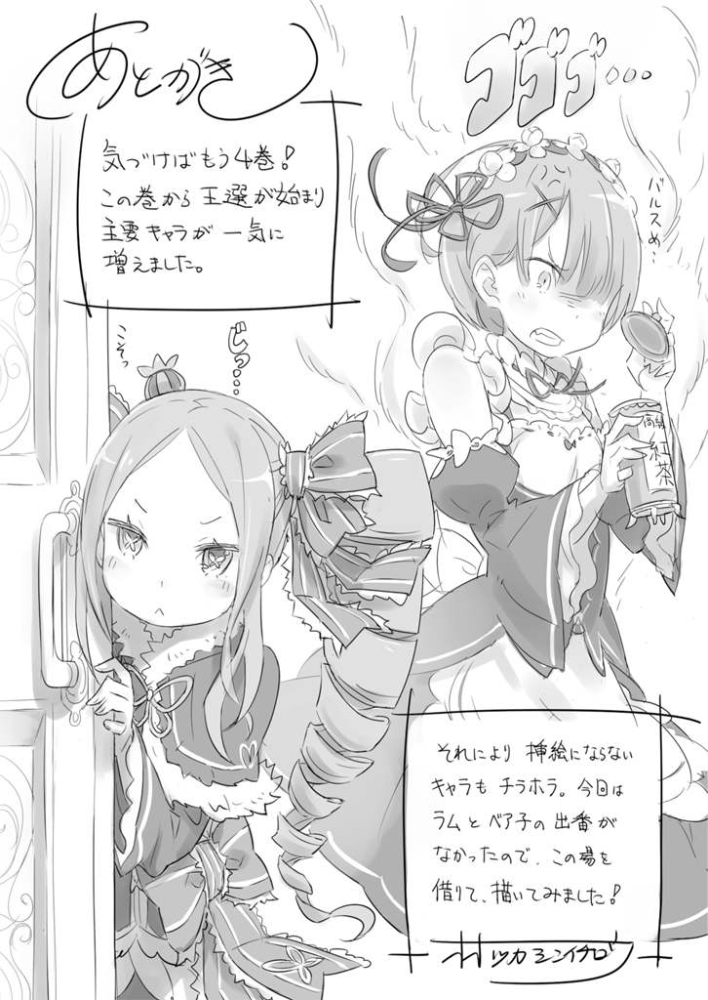

| Ｒｅ：ゼロから始める異世界生活 4<Ｒｅ：ゼロから始める異世界生活> (MF文庫J) | |
| IV ofＲｅ：ゼロから始める異世界生活 | |
| 長月 達平 | |
| (2015) | |
B00LBPG8MW EBOK
ＭＦ文庫Ｊ
Ｒｅ：ゼロから始める異世界生活 ４
長月達平
口絵・本文イラスト●大塚真一郎
編集●池本昌仁
プロローグ 『愚か者の意地』
──もう何度、こうして地面に打ち倒されただろうか。
固い地べたの感触。口の中は血と砂利が混ざり合ってぐちゃぐちゃで、全身は火で焙られたように熱い。何度も殴られた頭の中は曖昧で、腫れ上がった左目は塞がっている。
「──これ以上はやるだけ無駄だと思うが？」
遠く、高いところからこちらを見下す声が聞こえた。
俯せに大の字になったまま、スバルは顔を動かして声の方を見上げる。紫髪の青年が、手にした木剣の先端を揺らすのが見えた。
儀礼用の白を基調とした制服には汚れ一つなく、息も切らしていなければ汗も掻いていない。ただ、手の中の血塗れの木剣が、彼の優美な印象の中でぽっかり浮いている。
「前言を撤回し、頭を垂れるならここで終わろう。いかがだろうか？」
スバルの体を手酷く痛めつけ、執拗に打撃し、容赦なく打ち倒してきた青年。
彼はその繰り返しの行為の後に、決まって同じ降伏勧告を投げかけてくる。
だが、スバルの答えは決まっている。
「......悪くねぇ、頭は、下げねぇ」
無様に鼻血を垂らしながら、握った手の中の木剣を頼りに立ち上がる。喉に絡まる血を吐き捨てて荒い息をついた。
実力差は歴然。勝敗は一目瞭然。勝ち目どころか、一矢報いることすら奇跡頼り。
だが、構うものか、と思う。
「......前言を撤回すんのは、てめぇらの方ら......ッ！」
切れた口の中が痛み、啖呵の最後を噛みながら、スバルは遅すぎる速度で吶喊する。
捨て身の一撃に全てを込める──その結果は、
「全てを賭しても埋まらない差──それを、生まれ持った分というのだよ、君」
受け流され、体勢が崩された直後に胸を打つ一撃。息が詰まり、視界が明滅したと思った次の瞬間、顔面に衝撃を浴びて背中から地面に倒れ込んでいた。
痛烈な痛み。呼吸すら忘れる痛苦の中に、スバルは右目だけの視界で空を見る。
見上げた蒼穹は高く遠く、その先には何も見えない。
憎たらしいほどの青を目の前に、スバルは全身の力を振り絞って再度立ち上がる。
──何度でも、何度でも、やってやる。
尽きることのない怒りだけを糧に、血を吐くような痛みを堪えて前を見る。
その怒りの矛先が正しいのか間違っているのか、そんな事実からは目を背けるように。
第一章 『再来の王都』
１
「あい、最後に腕を天に伸ばしてフィニッシュ──ヴィクトリー！」
「──ヴィクトリー！」
両手を掲げて締めの台詞を口にするスバル。大勢の声が追従して、朝の日課となったラジオ体操が終了する。歓声が上がるのを聞きながら、スバルは額に浮く汗を拭った。
正面、和気藹々とラジオ体操に参加していたのは、ロズワール邸にもっとも近いアーラム村の住人たちだ。おおよそ、村の半分ほどが集まっているだろうか。
見慣れた顔ぶれが生気に満ち溢れているのを見て、スバルも思わず頬が緩んだ。神妙な顔つきで俯いているものも、もうしばらくは見ていない。
先日の魔獣騒ぎの傷の癒えない村のため、スバルが提案したのが早朝のラジオ体操だった。これが思いのほか異世界人に好評で、今や村では一大ムーブメントとなっている。
最初は参加者の多さに気後れしていたスバルとしても、魔獣の直接的な被害者となった子どもたちが喜んでいるので、やり甲斐を感じ始めたところでもある。
元の世界の風習も侮れないものだ。特に、ラジオ体操と関連して好評なのは、
「おら、んじゃガキ共、並べ並べぃ！ スタンプ押すぞー」
声を上げながらスバルが持ち出したのは、先端を平らにした生の芋だ。インクの容器に芋の先端を付け、スバルは並ぶ子どもたちが差し出す紙にそれを押し付けていく。
すると、削られた芋のスタンプ──芋判が、今日の力作を紙に浮かび上がらせる。
「どうだ。また一週間がこれから始まる......という憂いを秘めた感じを演出した意欲作『月曜日のパック』だ。このへたっとした耳がポイントでさぁ」
「猫ちゃん可愛い！」「猫ちゃん素敵！」「猫ちゃん不憫！」
芋判は夏休みのラジオ体操から着想を得たものだ。毎朝、何が描かれるのかと楽しみにしている子どもも多い。
妙な手先の器用さで、童心を巧みに引きつけるスバルだった。
ひとしきり、そうした歓談を村人と終えて、スバルは彼らに手を振って別れる。
「あー、ちかれたちかれた。──んじゃ、エミリアたん、お待たせ」
「ううん、大丈夫。スバルもお疲れ様でした」
村の広場の端、木陰で木の幹に寄りかかる少女が労いの声をかけてくれる。
少女──エミリアは長い銀髪を撫でつけ、被ったフードを目深に直しながら微笑んだ。
「村の人たちもすっかり元気になったみたいで、スバルのおかげね」
「大したことしてねぇよ。ちょっとラジオ体操で体中に健康な血が巡りやすくしただけ。エミリアたんも、毎朝毎朝付き合ってもらっちゃって悪いけどさ」
「いいのよ。スバルもまだ体調が万全じゃないんだし、ラムやレムには屋敷のお仕事があるもの。私も、こうしてるのって嫌じゃないから」
「嫌じゃないって、俺と一緒に朝を過ごすこと？」
「ぶー、違います。今まで接点がなかった村の人たちと、ちょっとでも関わること......かな。これまでは少し、自分で線を引いちゃってたかなって思うから」
エミリアのフードの下の横顔に朱が差すのが見える。
その愛らしさにスバルは思わず頬が熱くなるのを感じた。
最近はエミリアの日課──庭園での微精霊との語らいを終えた後、そのまま二人で村に赴き、ラジオ体操をしてから屋敷に戻ることが多い。
エミリアと二人並んで、村から屋敷へ戻る十五分。この朝のささやかな時間が、今のスバルにとっては何よりのご褒美だ。
「それにしても、スバルもずいぶん村に馴染んじゃったわね。もう、ラムやレムよりも有名人なんじゃない？」
「まぁ、俺ってばさりげに村を救ったヒーローみたいなとこあるしね。そしてそのことを恩に着せたり、触れ回ったりしないダンディズム......これはエミリアたんも惚れ直す！」
「もともと惚れてないけど......それに、ちょっとそれとは扱いが違うかも」
唇に指を当てて、エミリアが困ったような顔で小首を傾げる。
さらっと伝えた好意が受け流されてスバルは少し凹んだ。
「村の中だと、スバルはみんなを助けてくれた英雄っていうより、識者ってイメージの方が強いみたい。ほら、不思議なことをいっぱい知ってるから」
「物知り博士みたいな扱いか......いやでも、俺がラジオ体操以外に広めたもんって......」
「子どもたちに遊びとか、芋判もそうだし......あと、マヨネーズ！」
手を叩くエミリアが目を輝かせる。それは彼女が、スバルが屋敷で試作したマヨネーズを甚くお気に入りだからだ。
元の世界で生粋のマヨラーだったスバルが、食生活の彩りを求めて再現したマヨネーズは、エミリアにもアーラム村にも非常に好評だったらしい。
「しかし、魔獣騒ぎの貢献とマヨネーズが同等に語られるのって、俺の頑張りが浮かばれねぇ。みんなのためにそりゃもう体を張って頑張って......」
子どもたちを助けに森に入って犬に噛まれ、噛まれたスバルを助けるために森に入ったレムを助けに犬に噛まれ、最後の犬に噛まれそうなところをロズワールに助けられ。
「あれ!? 俺、思ったよりも何もしてなくない!?」
自分の功績を振り返ったら、思った以上に実績が上がっていなかった。
色んな功績の切っ掛けにはなっているが、独力で勝ち取った功績はゼロかもしれない。
「もう。そうやってつまらないこと気にしないの」
「でもさぁ、エミリアたん......」
「スバルが頑張ってたこと、わかってる人はちゃんとわかってるもの。ロズワールだってラムだって、レムなんか特にそうじゃない」
エミリアの慰めにスバルは情けない顔のままだ。すると、小走りに前に出て振り返るエミリア。勢いでフードが後ろに外れて、長い銀髪が朝日にきらめいて背中を流れ落ちる。
「私だって、そうだから」
「──へ？」
「スバルが頑張ってたこと、私だってちゃんとわかってるもの。だから、落ち込んだりしてちゃダーメ。わかった？」
首を傾げて、「返事は？」とエミリアは問う。
その言葉に、呆けていたスバルは慌てて激しく首を上下に振る。その反応にエミリアは笑みを弾けさせた。
「もう、今度はなに？ 壊れたオモチャみたいな動きして。いっつもそうなんだから」
「いや、今のは狙ってやったわけじゃなくて......つか、やってないならエミリアたんの方が百倍卑怯だろ。どう足掻いても惚れ直すっつの......」
「はいはい。そうやって誤魔化すの、悪い癖だと思いまーす」
こちらの本音は信じてもらえず、微笑みのエミリアは聞く耳を持たない。フードを被り直して隣に並ぶ姿に、スバルは絶対に彼女に敵わないと改めて思った。
そうこう話す間に、道の向こうにロズワール邸の門扉が見えてきた。帰り着くまであと数分──朝の至福の時間も、名残惜しいがそろそろ終わりだ。
「屋敷の前に......竜車が止まってるわね」
隣で足を止めたエミリアの呟きに、スバルは同じ方角を見て立ち止まった。
屋敷の門前に一台の馬車風の乗り物が寄せられている。『馬車風』と形容したのは、それがスバルの知っている『馬車』とは違うものであると判断できたためだ。
なにせ、車体を引く生き物が馬ほどもあるトカゲなのだ。
元の世界とのスケール感の違いに驚きつつ、スバルは手を叩いた。
「そういや、王都だとわりと普通に見かけたな。今、竜車って言った？」
「......？ ええ。地竜が後ろの車を引っ張るんだから、竜車って名前でしょ？ え、嘘、まさかこれも私の常識違い？ 正式な呼び方がちゃんとあるの？」
「いやいや、俺の方が無知なだけ。エミリアたんが正しいって。自信持って大丈夫」
「ホントに？ からかってない？ ちゃんとした場所でふわっとしたお話して、変な恥なんてかけないのよ？ 嘘言ってたら、けちょんけちょんだからね」
「けちょんけちょんってきょうび聞かねぇな......」
手を上げて怒る仕草のエミリアに、スバルは頭を抱えて逃げるアクション。そうして悪ふざけしている間に、二人は竜車の前に到着する。
「おお......すげぇ。なんか、リアルすぎるでかさだ」
王都でも何度も見かけたが、こうして間近に目にするのは初めてのことだ。
地竜──とエミリアが呼んだトカゲは、サイズはスバルの知る馬と同等だが、全体的に細身で体重は軽そうに見える。その分、俊敏さでは馬に勝りそうな印象だ。
「これはこれは、上から失礼を」
と、近づいた二人に、竜車の御者台に腰掛けていた人物がそう声をかけてきた。
驚く二人の前で、その人物は軽やかに御者台から地面に降り立つ。
着地の音がほとんどしなかったことに、スバルはかすかに息を呑んだ。御者台の高さはスバルの目線ほど。そうそう気楽に飛べる高さではない。
「おかえりなさいませ。ただいま、門の前を失礼させていただいております」
そう言って、老紳士と呼ぶのにふさわしい所作の老人が一礼する。
白く染まった髪を丁寧に後ろへ撫でつけ、仕立てのいい黒の服に袖を通している。高齢だが鍛えられた肉体をしているのがわかり、思わず背筋を正される気配を放つ御仁だ。
従者──だとすれば、これだけの人物を連れている主もそれなりの人物だろう。
そんな感想を抱き、スバルがちらりと竜車の中へ視線を向けると、
「使者はすでに屋敷の中に。今はメイザース辺境伯にお目通りしているかと」
こちらの意を汲んで、先んじて答えを差し出してくれる老紳士。思わずスバルが言葉に窮すると、隣のエミリアが一歩前に出て老人に向き直る。
「使者、ってお話でしたけど......ひょっとして？」
「エミリア様のご想像されております通り、王選に関してのことでしょう」
王選、という単語の出現にスバルは顔を上げる。
エミリアが自然と表情を引き締め、スバルが雲行きの怪しさに眉を寄せる。
「正式には使者からのお話があることと思います。どうぞ、お屋敷へお戻りください」
「......呼び出し、かしら」
「それ以上は、使者の方からお聞きください」
分を弁えた老人の答えに、エミリアは固い顔のまま顎を引く。
「──いきましょ」
そして、短く言い切り、スバルの方に振り向くことすらせずに歩き出す。
慌てて、スバルもその背中に続いて小走りに駆け出し、最後にちらと振り返った。
──御者はいまだこちらに頭を下げたまま、黙して二人を見送り続けていた。
２
「お帰りなさいませ、エミリア様」
御者に見送られ、屋敷の玄関ロビーに入った二人を出迎えたのは、給仕服の少女──レムだ。普段と違い、その高い声から感情を消し、平静に徹している。
最近は屋敷の中では──特にスバルには笑顔を見せることが多くなったはずのレムの態度から、お客様対応モードと察せられた。
「ただいま。お屋敷を出ててごめんなさい。──来客があるみたいね？」
「王都から使者の方がお見えになっています。ロズワール様が応対なさっていますが、ご同席していただいてよろしいでしょうか」
「もちろん。私の問題なのに、私が蚊帳の外ってわけにはいかないじゃない」
問いかけに応じるレムに頷き返し、エミリアは上階へ続く階段へ足を向ける。
「うし。さすがに事が事だけにドキドキすんな。馬鹿やらねぇようにしねぇと」
そのエミリアの隣に並び、当然のようにスバルも会談に臨もうとする。意気込みは十分。ただ、そんなスバルのやる気を見たエミリアが足を止めた。
「あれ、どしたの、エミリアたん。急に緊張が込み上げてきちゃった？ 揉みほぐす？」
「えっと......スバルには悪いんだけど、ここから先は大事なお話の場所だから」
「......わかってるよ？ だから俺も、気合いきっちり入れ直したとこで......」
「応接間には姉様が同席しています。他の使用人の出る幕はありません。わかりますね」
言いづらそうなエミリアに代わり、ばっさりと切って捨てたのは無表情のレムだ。
レムの言い分に息を呑み、スバルは「嘘でしょ？」とエミリアを見つめ返す。
「俺、蚊帳の外？」
「ごめんね、スバル。レム、案内して」
「はい。スバルくんは部屋に戻っていてください」
エミリアが小さく謝り、お仕事モードのレムもスバルに優しい言葉は残さない。レムがエミリアを先導し、二人の姿が上階に消えると、スバルはその場で舌打ちした。
「そりゃ、異世界知識のしょぼい俺がいたとこで、何の役にも立たねぇだろうけどさ」
それでももう少し、自分を関わらせてほしいと思うのはわがままなのだろうか。
──スバルが異世界に召喚されて約一ヶ月。その間に起きたいくつもの出来事で、スバルは自分に関わる人々の運命を良い方向へ修正した自負がある。エミリアを始めとして、屋敷の関係者や村人との良好な関係も、それを認めてくれているからこそだ。
そう思えばこそ、もっとも大事な問題に関わらせてもらえないことへの不満があった。
置いてけぼりにされている。──物理的にも、精神的にもだ。
もちろん、能力不足の自覚から取り残されたことへの納得はしている。
「でも、納得したことと諦めることは話が違うんだぜ。さて、どうしてやるべきか」
素直に部屋に戻って不貞寝するほど、ナツキ・スバルは素直ではない。
どうにかして、自分なりのアプローチが仕掛けられないか、スバルは考え込み、
「──ティンときた」
指を鳴らして、スバルは自分の思いつきににんまりと悪い顔で笑ったのだった。
３
「ずーっと表で待ってるのも退屈しません？ 一服いかがッスか？」
御者台に腰掛けていた老人は、お茶を淹れて戻ってきたスバルを見下ろし、驚いたように軽く目を見開いていた。
場所は再び屋敷の外、正門前に止められた竜車の傍らだ。
「これは失礼しました。少しばかり意外でした故、また上からなどと失礼を」
老紳士は先と同じように御者台からスバルの眼前に飛び降りる。
先ほどと同じく、着地の音はほとんどしない。
「お言葉に甘えましょう。確かに少々、喉が渇いておりましたので」
「あ、どもッス。好みがわからないんで、とりあえず一番高いお茶にしておきました」
盆を差し出すと、老紳士がその顔に柔和な微笑みを刻む。年齢に応じた皺が口元に浮かぶのを見ながら、すぐ側に歩み寄った彼をスバルはつぶさに観察する。と、
「おわ、なんだ......？」
ふいに、横合いから軽い衝撃を受けてスバルは驚く。振り返ると、スバルの肩を小突いたのは地竜の鼻先だ。漆黒の肌をした地竜が、その鋭い爬虫類の目でスバルを見ている。
じっと見つめられて、スバルは居心地の悪さとは違う不思議な感覚を得た。地竜の穏やかな目に、敵愾心のようなものが感じられなかったからかもしれない。
「む、申し訳ありません。この地竜はこれで、当家で一番優秀な地竜なのですが」
「あ、いや、気にしてないです。むしろ、触れてちょっとラッキーぐらいで」
「そう言っていただけると。──ふむ、この地竜がこうした反応をするのは珍しい」
地竜の無礼を詫びた後、老紳士は呟きながらスバルをその青い目で見る。まるで射抜かれるような視線の鋭さに、スバルは身を固くしてしまう。
「......失礼ですが、それは戦傷ですか？」
「傷ですか？ 戦傷ってほど大げさなもんじゃないですけど、まぁ色々ありまして......」
「獣の牙、爪の傷跡ですな。左半身を庇っているのは、その影響ですか？」
「────」
袖まくりしたジャージの下、白い傷跡を見ただけで原因を見抜いた老紳士の眼力に驚く。負傷以来、スバルが体の左側を気にして動いているのも事実だ。
「──無礼を重ねて申し訳ありません。お答えになりたくないこともあったでしょう」
押し黙るスバルに謝罪して、老紳士は受け取った紅茶のカップを口に運んだ。
「いい味です。かなり奮発されたものと思いますが」
「......誇張でも何でもなく、マジにこの屋敷で一番高い茶です。たぶん、勝手に飲んだのがばれたら桃色の髪のメイドがマジギレするぐらい」
『持ち出し厳禁』とされた最高級の茶葉を勝手に使ったことがバレれば、ラムのお説教が待ち受けているのは間違いない。
「さて、それでこのお茶を撒餌に、この老骨に何をお求めですかな？」
片目をつむったまま、こちらを推し量るような顔つきで問いかけてくる老紳士。スバルの意図を察した点といい物腰といい、緊張感の絶えないやり取りだ。
青二才が舌戦を挑んでも勝ち目は薄いと、スバルは早々に白旗を掲げる。
「参りました。──俺の名前はナツキ・スバル。現在、ここロズワール邸にて使用人見習いをさせてもらってます。せめて、あなたのお名前をお伺いしたい」
若輩なら若輩である事実を認め、その上で年長者の慈悲に縋るぐらいが関の山。
素直に頭を下げるスバルに、老紳士はかすかに頬を緩めた。
「これはこれはご丁寧に。私はヴィルヘルムと申します。今はカルステン家に仕え、仕事を頂いている身になりますかな」
「ヴィルヘルムさん、ですか。ありがとうございます。......ありがとうついでに、せめて今日の訪問の理由......いや、内容まで踏み込んでもらえませんかね？」
「その件に関しましては、使者が今、中で話している最中だと思いますが」
「そうなんですけど、さらっと参加禁止の扱いを受けましてね。イベント不参加のまま話が進むのも面白くないんで、俺なりのアプローチとか」
口を割らせるのが簡単な相手でないのはわかっている。が、その上で相手の懐にずんずん踏み込むのはスバルのお家芸。伊達に空気の読めなさで不登校になったわけではない。
ヴィルヘルムは貪欲なスバルの態度に一瞬だけ言葉を失い、
「思惑を外されて熱くなるでもなく、考えを見透かされても悪びれるどころか開き直る。──相手が相手なら、不興を買う損な性格ですな」
「......触りだけでもダメですかね？」
「あなたが屋敷でどんな立場にあるのかわからない私には、迂闊なことを口にすることはできませんな。ご理解を」
一見辛辣なヴィルヘルムの表情が柔らかいのを見て、さらに図々しく願い出るが暖簾に腕押し。このままだと、ただラムに怒られる案件を増やしただけだ。
「ただ、エミリア様と親しい間柄なのはうかがえましたな。ただの使用人、という風には見えませんでしたが」
「お、お、ホントですか？ 俺とエミリアたんがただならぬ関係に見えました？」
「たん......？」
呼び方に不思議そうに眉を寄せる。
そして、ヴィルヘルムはスバルの想いに気付いて苦笑を浮かべた。
「険しい道を行きますな。相手はルグニカの次期女王になるかもしれない方ですよ？」
「現状はただの超可愛い女の子と、冴えない使用人ってだけ。未来は無限大だから可能性も無限大。ヴィルヘルムさんは、奥さんは世界一可愛いかもしれない。そう思いながら結婚を申し込んだりしなかったんですか？」
「妻は──」
スバルの極端な物言いに、ヴィルヘルムは一瞬だけ口ごもる。が、すぐに彼は頷き、
「なるほど。あなたの言う通りだ。私も妻が世界一美しいと思っていました。誰もが彼女を見ている気がした。釣り合わないかも、などとは情けない」
「でしょ？ 誰かに渡すぐらいなら、ふさわしくないと思っても俺のものにする。あとはこっちが釣り合いとれるように日進月歩でＷｉｎＷｉｎってのが理想」
「ずいぶんと面白い理屈で動かれるお方ですな。実に興味深い。──ですが、あくまで私は単なる御者です。お役に立てるとは思えません」
「そっかなぁ。フード被ってるエミリアたんの素性に気付いてたぐらいだし、ただの御者って言い訳はキツイと思いません？」
「────」
スバルのあっけらかんとした物言いに、ヴィルヘルムが表情を消して黙り込む。
「エミリアたんが着てたローブって、怪しい魔法使いのお手製で認識を阻害する効果があるらしいんです。さらに最近はちょっとした事情で、フード付きのマントも新調して強化済み──エミリアたんが許可してるか、それを突破できる人じゃないと見抜けないとか」
ロズワールの術式が組まれたローブ──それは、エミリアのハーフエルフという出自が招きかねないトラブルを避けるための、転ばぬ先の杖というやつだ。
この世界を生きる上で、理不尽なハンデを背負わなくてはならない彼女を守るための。
「──最初からこちらを測っておられたとは。人の悪い方ですな」
「屋敷でお茶淹れてる間に『あれ、おかしくね？』って思っただけです。偶然、偶然」
へらへらと軽薄に笑うスバルに、ヴィルヘルムの視線の色が変わる。少なくとも、ただのお茶汲み小僧ではないと、そう判断されたのだろう。
「ただの御者、という言い訳は通りませんか。......お察しの通り、私は確かに王位継承戦の関係者──いえ、関係者の関係者というべきですかな」
「関係者の関係者......それって、俺とおんなじポジションってこと？」
「理由が懸想でないことが、あなたと私との違いでしょうかな」
「そら世界一美人の奥さんがいるなら浮気の一つも考えないでしょ。可愛さならエミリアたんの方が上だと思うけど」
「いえ、可憐さでも私の妻の方が上のはずです」
茶化したつもりが頑として言い返され、スバルも思わずたじろいでしまう。
ここまでやり込められたことへの逆襲が叶い、ヴィルヘルムはかすかに頬を緩めた。
「しかし──どうやら、時間切れのようですな」
「へ？」
間抜けな声を出すスバルに、ヴィルヘルムは無言で屋敷の方を手で示す。
「出てきたのはレムと......誰だ」
見慣れた青髪のメイドを伴い、見知らぬ人物が屋敷から出てきたところだ。話の流れとヴィルヘルムの態度から、その人物こそが話題の使者様なのだろうが、
「こうして落ち着いてから見てみると、ファンタジックさが尋常じゃねぇな」
思わずそんな感想が出てしまったのは、その人物の見た目があまりに『使者』という響きに似つかわしくなかったからかもしれない。
件の人物はスバルの視線に気付き、悪戯っぽい笑みを浮かべて歩み寄ってきた。
「こーら、美人に見惚れるのはわかるけど、そんなジッと見たら失礼じゃにゃい」
そう言ったのは、亜麻色の髪をセミロングで切り揃えた、愛らしい顔立ちの少女だ。
身長は女性にしては高く、スバルとほぼ同じぐらい。しかし、線の細さは比べるべくもなく華奢で、仕草一つ一つに女性らしさ──というより女子のあざとさが滲み出ている。
亜麻色の髪は白いリボンで飾られ、大きな瞳を好奇心に輝かせる姿はまるで猫のような愛嬌があり、実際にその頭部には、
「こうして目の前にしてみると、なるほど魔性の力があるぜ、ネコミミ」
「にゃにゃ？」
呟きに応じるように、髪の毛と同じ色をした獣の耳が震える。今まで亜人と接触する機会はなかったのだが、こうして実物を間近で目にすると圧巻だった。
──毛並職人としての自分を抑えるのに、スバルがこれほどまでに苦心するとは。
明後日方向に戦慄するスバルを余所に、少女は出迎えるヴィルヘルムに向き直る。
「ただいま、ヴィル爺。外で待たせてごめんネ。退屈だったでしょ？」
「いえいえ、こちらの方が老骨の話相手になってくださいましたので、思いのほか楽しい時間を過ごさせていただきました」
「ふみゅ？」
老人の返事に少女は自分の頬に指を立てて小首を傾げる。猫の瞳の瞳孔が細められ、ジッとスバルを見つめる。
「あーあー、にゃるほど。そっかそっか。君がエミリア様の言ってた男の子なのね」
上から下まで舐めるようにスバルを見て、少女は納得するように手を叩く。
ただ、その後の行動がこちらの予想外だった。
「う、え、え!?」
「動かない。今、ちょっと調べてるから」
狼狽するスバルの首に腕を回し、少女がその細い体でスバルを抱き寄せていた。
身長が近いだけに、抱き着く彼女の顔はスバルのすぐ真横だ。声は耳元で囁かれ、くすぐられるような感覚を全身に叩き込み、スバルは羞恥に顔を赤くする。
柔らかな感触と、不思議と漂う良い匂い。突然の状況にスバルは顔を強張らせながら、平静を保とうと全神経を傾ける。
「はむっ」
「んひゃん！」
その努力も、耳を甘噛みされるインパクトの前に呆気なく砕け散る。
可愛い悲鳴を上げたスバルに笑いかけ、少女は満足げな様子で抱擁を解いた。
代わりにスバルは後ずさり、その場に尻餅をついてしまう。
「んふー、可愛い反応。それはそれとして......聞いてた通り、体の中の水の流れが澱んじゃってるね。どうにかしたげたいけど、時間がないから今は無理かにゃー」
「な、な、な、何をしやがってくださりますってんですかよ、オイ」
「ちょっとしたお体のチェックと、甘噛みはフェリちゃんからのサーヴィス」
艶っぽい目つきで、少女は自分の小指を軽く噛んで挑発的に微笑む。からかわれているとわかっていても、いまだ赤面が消えないスバルは突っ込んだことが言えない。
ここまではっきり、性差を武器にして押し込まれた経験がスバルにはないからだ。
「照れない照れない。それにしても、にゃーんにも聞かされてないみたいだねえ」
「何にも聞かされてないって、そりゃどういう意味だよ」
「自分のお体のこととかー、それに伴っての取引きとかー、そのあたり諸々？」
眉を上げるスバルに、少女は思わせぶりな内容をちらつかせて反応をうかがっている。その態度に思うところはあるものの、スバルは少女の気紛れに縋るしかない。
「その諸々絡まった部分、ほどいて聞かせてくれると助かったりするんだが」
「えー、どしよっかにゃー。これも大事なお役目にゃんだしぃ......やん！」
「そこまでにしておくべきでしょうな、フェリス」
重ねてスバルをからかう素振りだった少女を、後ろに立つヴィルヘルムがたしなめる。老人の言葉に少女は唇を尖らせた。
「ぶー、ヴィル爺ったら真面目すぎ。ホント、無粋にゃんだから」
「スバル殿にはお茶の恩義がありますのでな。それと、そろそろ時間になります」
どこか気安い調子で言葉を交わして、ヴィルヘルムが一礼。少女はなおも不満そうな顔をしていたが、気を取り直したようにスバルにウィンクしてみせる。
「ごめんネ。もっとからかっててあげたいんだけど、時間もにゃいから今日はお暇。早く愛しのクルシュ様のところに戻らないと、心配で夜も寝れなくにゃっちゃうから」
「聞き捨てならねぇ発言は別として、クルシュ様？」
「覚えておくといいよ。──それがいずれ、この国の王になられる御方の名前だから」
最後の一言にだけ、それまでの軽い調子が消えて真剣味が宿っていた。口をつぐむスバルに少女は手を振り、ヴィルヘルムは空になったカップを盆の上に戻した。
「御馳走様でした。では、スバル殿、ご健勝で」
ひらりと御者台に身軽に飛び乗り、ヴィルヘルムは地竜を操る手綱を握る。
「それじゃ、ご挨拶もまだだけど、フェリちゃんも忙しいからまたネ」
「待ってくれ！ まだ、聞きたいことが山ほど......」
「素直にエミリア様に聞く方がいいってフェリちゃん思うにゃー。それじゃ、縁があったらまた王都で会いましょ。じゃあねん」
取り付く島もなく、少女は微笑みを残して竜車の中に消える。完全に相手にペースを崩されたことを理解し、スバルは本能的に彼女が自分にとっての天敵であると理解した。
「では」
口惜しげに手を引くスバルに、ヴィルヘルムが短く言い残して手綱を鳴らす。
地竜が嘶き、車体が軋む音を立てて車輪が回り始める。地竜が前に踏み出すために数度、大地を力強く踏みしめ──加速は直後に行われた。竜車は見る見る内にスピードを上げて道を乗り越え、砂煙を起こしながら一気に遠ざかってしまう。
結局、その場に残されたのは完全にやり込められた敗北者のスバルと、ほとんど飲まれ損となっただけの高級茶の香りの名残だけであった。
４
「──使者としてのお役目は果たせましたかな？」
「それはもちろん。フェリちゃんがクルシュ様にお願いされたこと、失敗するにゃんてありえないじゃにゃい。ヴィル爺ったら心配性なんだからー」
ロズワール邸より遠ざかる竜車にて、その会話は交わされている。
御者台に座り、地竜を難なく操っているヴィルヘルム。その彼のすぐ背後、地竜の引く個室の窓から亜麻色の髪の人物が顔を出している形だ。
ある意味、密談を交わすのにこれほど適した条件もないだろう。
「それより、フェリちゃんとしてはヴィル爺が待ってる間にあの子とお話してたのが意外だったかなー。ヴィル爺、人と話すのなんて大嫌いでしょ？」
「それはとんでもない誤解ですよ」
「そっかそっか、ごめんネ。──話すより、斬る方が好きなだけだもんネ」
「......それもひどい誤解ですな」
揶揄するような言葉に、しかしヴィルヘルムはそれ以上の言葉を用いない。その挑発めいた発言への反応が少ないことに、少女は不満げに口を尖らせる。
「つーまんにゃい。フェリちゃんとのお話は、さっきの男の子とのお話より楽しくないんだ？ 特別なこと何にも感じにゃかったけど、そんなに気に入ったの？ あんなだけど実はすごい強いとか、その才能の片鱗が見えた！」
「それはありませんな。彼は素人──毛も生えていない素人です。そして目を引くような才覚もありはしない。凡庸な存在であることに間違いないでしょうな」
「それじゃどうして？ 塵芥なんて、ヴィル爺が一番嫌いな性質じゃにゃいの」
いちいちヴィルヘルムを人格破綻者にでも仕立て上げようとしてくる少女。その言葉にヴィルヘルムは、静かに持ち上げた手で己の目を指差した。
「目が」
「──目？」
問い返す少女の声に顎を引き、ヴィルヘルムはただ思い返すように視線を上げ、
「あの少年の目が、少しばかり気になったのです。あれは、何度か死域に踏み込んだものの目です。寸前で立ち帰り、戻ったものはいくらかいます。ですが......」
言葉を切り、ヴィルヘルムは静かに瞑目する。
「あれは一度、いやそれ以上の死域から舞い戻ったものの目です。そのような存在を私は知りません。故に、興味を惹かれたというところでしょうな」
「ふーん、よくわかんにゃい」
だが、感嘆するヴィルヘルムの言葉を、少女は無理解の言葉であっさり両断。今度こそ苦笑するヴィルヘルムに、しかし少女は「でも」と言葉を続けた。
「今のヴィル爺の言葉がどうであれ、きっと平坦な道は歩けないよね、あの子」
少女はその目を細めて、御者台に座る広い背中に艶やかな視線を投げる。
「『剣鬼』ヴィルヘルム・ヴァン・アストレアに気に入られるなんて、『魔女』に魅入られるのと変わらない不吉なんだから」
５
「王都に行くんだろ？ 俺、ついていくから！」
客人が帰り、ホッと一息──そんな応接室の空気を、冒頭の一言でスバルはものの見事に砕いてみせた。
「ほーぉらね？」
「そうね......」
にやけ面のロズワールに、疲れたようなエミリアの応答が重なる。
二人だけでわかり合う態度にスバルが唇を尖らせると、エミリアはため息をこぼした。
「あのね、遊びにいくわけじゃないの。大事な呼び出しで......そう、大事なことなの」
「わかってるって、王選絡みなんだろ？ 国を揺るがす一大事なのは承知してるって。でーも、その上でお願い！ 連れていって！」
絨毯の上に膝を突いて、拝み倒すようにスバルは手を合わせる。
その懇願にエミリアは困った顔で室内の面々の顔を見渡す。しかし、
「あ、わーぁたしのことは気になさらず、御心のまーぁま選ばれるがよろしいかと」
「この茶葉の香り......まさかラムの秘蔵の......バルスならやりかねない......!?」
ロズワールはにやけ面で傍観者気取りで、ラムは何かに驚愕していて反応が薄い。
そして最後の一人にいたっては、
「いいじゃないですか、連れて行ってさしあげたら。王都にはスバルくんのお知り合いもいらっしゃるみたいですし、顔を見せて安心させてさしあげないと」
と、これまでならば一番常識的な反応を期待できたはずのレムは、今やスバルに全面的に味方する立場になっている始末である。
「うし、ナイスアシスト！ レム、レーム、こっちゃこい」
「はい！」
スバルの呼びかけに花のように笑い、その隣に座ると頭を差し出すレム。もはや一連の作業のように、手慣れた仕草でスバルはその頭を髪が乱れないよう撫で始める。
されるがままのレムの幸せそうな顔に、エミリアは味方がいないことを悟った。
「そもそも、スバルは一緒にきてどうするつもりなの？ 王選はすごーく大事な話し合いをする場所で、私も自分で手いっぱいだからスバルに構ってあげられないわ。それに今回の集まりは、これまでとは本当の意味で違うってお話だし......」
「じゃ、なおさらだよ。エミリアたんが王様になれるかどうかの瀬戸際で、そこに関われないとか俺、泣いちゃうから。端っこでいいから関わらしてほしいんだ」
「そんなだから連れていけないって言ってるの。スバルを連れていったら、また無理するに決まってるもの。そんなことさせたくないの。わかって？」
「エミリアたんこそわかってねぇよ。俺が無理してそれでエミリアたんの助けになるならいいんだよ。無理がしてぇんだ。な？」
「そんなの......わかんないわよ......」
エミリアが困惑を瞳に宿して口をつぐみ、気まずい沈黙が応接間に落ちかける。
「はいはーぁい、そこまで。どーぉにも話が進まないから、ちゃかっと片付けよう」
その、気まずい空気を壊すように手を叩いたのはロズワールだ。
「結論、スバルくんは王都についてきたまえ。これ、雇い主としての命令ね」
「ロズワール!?」
「やたっ！ 話せるぜ、ロズっち！」
渋っていたエミリアの意見を真っ向から覆すロズワール。
その言葉にエミリアは不意を突かれた顔をし、スバルは親指を立てて喜ぶ。
「たーぁだーぁし、スバルくんが王都についてくるのはあーぁくまで治療目的。王選云々ってーぇのとはぜーぇんぜん別のお話。おわかり？」
「は？ 治療、目的......？」
思わぬ単語の出現にスバルが眉を寄せると、それまでスバルに肩を預けていたレムの横顔がかすかに強張る。エミリアの表情にも痛ましげな色が走った。
「魔獣との戦いの折、君は枯渇したゲートを酷使して魔法を使った。肉体の負傷は癒えても、その治癒はまた別の問題だ。君自身、心当たりはあるんじゃーぁないかね」
「......そんな目に見えないもんで調子が悪いって言われてもな」
「スバル。体の中を循環するマナは生き物の生命線なの。その流れが滞るってことは、命の循環そのものに支障をきたすっていうこと。......お願いだから、隠したりしないで」
体の怪我とは別に、手足の重さなどの後遺症はヴィルヘルムにも指摘された通りだ。
見抜かれていたことにバツが悪い顔をするスバルだが、エミリアの懇願は振り切れない。
「俺の体のピンチはわかった。で、それが王都で治療って話とどう繋がる？」
「君の治療には最高峰の治癒術師の力が必要だ。スバルくんは使者には会ったかな？」
「あのネコミミぶりっ子か。正直、何度も会いたいタイプじゃなかったけど」
「あの子が、王都でもとびっきり優秀な水の魔法の使い手だーぁよ。その力を借りれば、君の体の不調を回復することも可能だろう。癖のある子だから、協力を取り付けるのにはエミリア様も苦労されたもんなんだからねーぇ」
「ちょっと、ロズワール！ それは......」
意図的に口を滑らせた感のあるロズワールは、エミリアの憤慨にも素知らぬ顔だ。
「......エミリアたん、マジで？ 俺のために？」
「だ、だって、スバルの体が治らないのは私のせいでもあるもん。私を庇ってくれたのが理由でお屋敷にきて......魔獣のことだってホントなら私が動かなきゃいけなかったのをスバルが。だから、これは恩返しっていうか、損失に対する正当な補填っていうか......」
「ありがたみ薄れるから照れ隠しにしてももうちょっと言葉選んでね!?」
赤い顔をして早口で言い訳するエミリアに、スバルは腕を組んで苦笑する。
「じゃ、エミリアたんも俺の王都行きに賛成なんじゃん。なんで反対みたいなポーズ？」
「そのままお願いを聞いたら、スバルのことだからきっと調子に乗って無理するもの。やんちゃ坊主なことぐらい、わかってるんだから」
「やんちゃ坊主ってきょうび聞かねぇな......」
小声で呟きながら首をひねるスバルに、エミリアが悔し紛れに舌を出して会議終了。
「そーぉれじゃ、話はまとまったね。スバルくんも王都行きに同行。諸々の準備に一日を当てて、明後日の朝には出発──それでいーぃ？」
「わかったわ」「意義なーし」「──承知しました、ロズワール様」
ロズワールの締めの言葉に、室内にいた全員がそれぞれの応答。
そうして、ロズワール邸の面々の王都行きの方針は定まったのだった。
６
──そして二日後の早朝、スバルは屋敷の門前で感動に声を震わせていた。
「ほあー、こいつが！」
震える声に歓喜が溢れ、表情を弾ませるスバルの前には大型の竜車が停留している。
竜車を引くのはもちろん地竜で、見上げるほどの巨体はこれまでにスバルが見たいずれの地竜をも上回る強大さを誇っていた。
「体でけー！ 肌かてー！ 顔こえー！」
「ホント、子どもみたいにはしゃいじゃって。ね？」
テンションの上がるスバルに、エミリアは唇を緩めて呆れたように吐息。
彼女は自分の隣に控えるレムに、同意を求めるような目を向ける。
「はしゃぐスバルくん、可愛い......エミリア様もそう思いませんか？」
「可愛いは可愛いと思うんだけど......ん、レムもすっかりスバルに毒されちゃったのね」
しかし、うっとりと、はしゃぐスバルを見守るレムにもエミリアは吐息。
女性陣のそんな感想を余所に、スバルは無遠慮に地竜に手を伸ばして奇声を上げ、
「ヤバい！ すごい感動がある！ 今、俺は超ファンタジーしてるんばらば!?」
調子に乗って、スバルの手つきが触るから叩くに変わったあたりで、地竜の寛容が限界を迎えた。地竜の尾がしなり、薙ぎ払われるスバルが側転気味に吹っ飛んだ。
数秒後、落ちた茂みから這い出すスバルが、口から葉っぱを吐き出した。
「ど、どういうことなの」
「スバルくん。地竜はとても賢い生き物なので、言葉は通じなくても大体の意思は通じます。だから扱いも丁寧にしてあげないとダメですよ」
「もうちょっと早く教えてね!?」
体にくっつく葉を払い落とし、スバルはおっかなびっくり地竜を見る。奴はその黄色の瞳を細めて、「気安く触るとそうなるんだよ」とでも言いたげに長い息を吐いた。
と、そうする間に、ようやく屋敷から待ち人であるロズワールとラムが姿を見せる。
「おいおいおい、遅かったじゃねぇのどうなってるの。時間指定したのはロズっちじゃないん？ 時間にルーズな奴はパンツのゴムまでルーズだぜ、なあ、レム」
「そうですね！ 今日、時間になっても起きてこなかったスバルくんを起こしたのはレムですけど、褒めていただいてもかまいませんよ」
「よーしよーしよーし、少し黙ってろよー、レム」
余計な一言を漏らすレムを、撫で回して黙らせるスバル。そんなスバルにエミリアの白い目が突き刺さるが、スバルは鋼の意思で耐え切って話題をロズワールへ戻す。
「で？ なんで遅れたん？ 朝飯の場面には普通に揃ってたろ」
「ごーぉめんごめん。ほら、ラムがお留守番ということでしばらく会えなくなるでしょ？ だーぁーかーぁら、ちょこーぉっと念入りにお別れをしていただけだーぁよ」
立てた指を振って弁明するロズワールが己の襟を正す。その隣でそそくさとラムが髪や服を整える仕草をしており、見ているだけで生々しさが伝わってきた。
「やっぱノーカン。聞かなかったことにしよ。にしても、本気で留守番なんだな」
「仕方ないことよ。お屋敷を空っぽにするわけにはいかないし、ベアトリス様もいらっしゃるんだからお世話しないと。面倒くさい」
「本音がチラリズムしてんぞ。まぁ、オシメ係がいないとベア子も困るわな」
「ベアトリス様に聞かれたら、今度こそ粉々にされそうな言われようね」
今回、王都に出立するのは王選の当事者であるエミリアに、その支援者であるロズワール。治療の名目で同行するスバルに、三人の世話係兼護衛のレムの計四人だ。
屋敷にはラムと、禁書庫にこもりきりのベアトリスが残ることになる。
「それにしても、残るのが姉様で大丈夫かよ。屋敷の維持管理って、簡単じゃねぇだろ」
「わかってないわね、バルス。──人は、三日や四日食べなくても死なないものよ」
「自炊する気ねぇな、姉様！」
清々しいラムの開き直りにスバルが声を上げると、ふいにラムはそのスバルの胸倉を掴んで引き寄せる。端正な作りの顔が目の前にきて、スバルは息を詰める。
「レムが無茶をしないよう、ちゃんと手綱を握るのよ。いいわね、バルス」
「......いつもは王都に同行するのはラムなんだろ？ どうして今回はレムが......」
「それをラムの口から言わせようとする魂胆が腹立たしいわ」
こちらの胸を突き飛ばし、ラムが鼻を鳴らして遠ざかる。
その背を見送ってからスバルが竜車を見ると、レムはせかせかと竜車に荷物を積み終えたところだった。
談笑の時間も一区切りつけて、そろそろ出発しようという空気。
「しかし、ベア子の奴は見送りにもこねぇな。薄情なロリだ」
遠目に屋敷の入口を睨みつけ、スバルはこの場にいない少女に悪態をつく。
もちろん、こうなることも予想して、昨日の内に散々ベアトリスをからかって名残惜しんでおいたのだが、いざ出発の場にいないとなるとそれも寂しい話だ。と、
「──お」
ほんの少し開いた玄関の扉、そこからこっそりこちらを眺める人物と目が合った。
ドレスの人物はスバルと目が合ったことに一瞬だけたじろいだが、すぐに開き直ったように扉を開けてはっきりと姿を見せる。つんとした顔つきで、寂しさを隠すように。
それはさすがに欲目か、とスバルは苦笑して少女に手を上げた。
それに対して少女は白けた顔で、おざなりに手を振ってスバルを追い払うアクション。それだけやって屋敷の中に戻る姿は、見送りの義務を果たしたと言わんばかりだった。
「──スバル？ どうしたの？」
振り返ると、竜車の客室から身を乗り出すエミリアがこちらを見下ろしていた。気付かない内に乗り込みが始まっていたらしく、スバルは慌てて客室の戸に手を伸ばした。
「はい」
しかし、取っ手に触れるよりも、白い指先がこちらに伸びる方が早い。
一瞬だけ迷い、スバルはその手を取った。そして、引かれるままに客室に足をかける。
スバルの乗り込みを確認して、御者台のレムが一人残されるラムに頷きかけた。それから手綱を操り、地竜がゆっくりと地面を踏みしめて車体が動き始める。
スバルは窓から頭を外に出して、見送るラムに最後に手を振った。
「んじゃ、いってくる！ お互い、気を付けてな！」
「バルスも、何かあったら弾除けぐらいにはなるのよ。囮としての才能は──ええ、それだけは認めてあげるから」
「俺もうちょっといいとこあるよきっと!?」
締まらないそんな言葉の応酬が、この朝の別れの挨拶となった。
竜車の加速が乗り、急速にスピードが上がり始める。途端に屋敷との距離が広がり、正門の側に立つラムの姿もどんどん小さくなってしまう。
見えなくなる前に、ラムはスカートの端を摘まむと、ちょこんとお辞儀。まるで模範的なメイドのようにスバルたちを見送ってみせた。
「......これで仕事の能力が伴えば、可愛いメイドとして完璧なんだけどな」
街道が傾斜のあるところに入ると、それでラムの姿は完全に見えなくなる。それを確認して、スバルはやっと客室の座席に腰を落として一息ついた。
そうなると、初めての竜車の乗り心地を確かめる余裕も生まれる。
座席の感触は竜車の造り相応に高級感があり、乗り心地も意外なほど快適なものだった。
それほど整備が行き届いているわけではない街道。窓の外の景色が行き過ぎる速度は速く、元の世界の乗用車の経験と照らし合わせると百キロ近く出ているように思える。
なのに、体に伝わる振動は想像に程遠く、それこそ乗用車並みの快適さだ。
「おやおやーぁ、竜車がそんなに物珍しいのかーぁな？」
座席を軋ませ、きょろきょろと視線を走らせるスバルにロズワールが笑う。
「なぁ、こんだけスピード出てるのに、御者台とか剥き出しでレム平気なの？ 振り落とされたりは心配しねぇけど......王都着く頃には髪の毛とか服とかビシバシ乱れてね？」
「竜車は加護に守られてるから、そういう心配はいらないわよ？」
「加護？」
「そう、加護。命が生まれたときに世界からもたらされる福音のこと。色んな加護があるから一概には言えないんだけど、その種族に必ず与えられてる加護っていうのもあったりするの。地竜の『風除け』の加護もその一つ」
「『風除け』の加護っつーと」
「地竜が地を駆けるとき、風の影響や抵抗を一切受けない。そして、その加護は繋がれた竜車に対しても影響を与えるの。だから、この竜車も風の影響を受けてないってこと」
「そして、それは外のレムも同じってことか」
理解を示すスバルに、エミリアは「よくできました」とご満悦なご様子。
「じゃ、俺は俺は？ ねえ、エミリアたん。俺には加護とかないの？」
異世界召喚といえばチート能力。確かに『死に戻り』は他にない特別な力ではあるのだが、もっと痛々しくない特別を求める貪欲さをスバルは失っていない。
「んー、言い難いんだけど、加護を持たずに生まれてくる人の方がずっと多いの。それに、加護持ちは誰に言われなくても加護を自覚しているものだから......」
「チクショウ、ダメか......いや、わかった。エミリアたんに出会えたこの奇跡こそが、世界が俺に与えてくれた祝福だったってことなんだね」
「はいはい。王都まで六時間ぐらいかかるから、いい子にして待っててね」
「エミリアたん冷たい！」
スバルの不服を余所に、エミリアとロズワールは王都に到着してからの行動方針の話し合いを始めてしまう。真剣な雰囲気に、スバルはもちろん口を挟めない。
話に混ざれず手持無沙汰のスバルは、早くもダレ始めていた。
「エミリアたん、エミリアたん、窓際代わって！」
「どうしたの？ あ、さては酔っちゃったんでしょ。乗り慣れてないとよくあるのよね。わかったわ。パックを貸してあげるから」
「嬉しい気遣いだけどちょっと違うかな。そして、酔った俺にパックを手渡そうとする意味がわからないんだけどなに？ 緊急時のゲロ袋に使っていいの？」
「そこまでされたらさすがのパックも怒るんじゃないかしら......」
思案げに呟くエミリアに、スバルは首を横に振った。
「じゃなくて、エミリアたんが構ってくれない寂しさを景色でも見て癒そうかなって」
「──それでしたら、御者台の方にきてはいかがですか、スバルくん」
と、ふいに二人の会話に割り込んだ声がある。正面、御者台と客車を繋ぐ小窓から顔を覗かせているレムだ。
「客室の中だと、スバルくんが退屈しても時間を潰せるようなものもないでしょう？ こっちにくれば景色も見られますし、レムが話相手にもなってさしあげられます」
「む、魅力的な提案......エミリアたん、俺があっち行っても寂しくない？」
「それははっきり言って全然まったく大丈夫だけど......」
「なんで強めに大丈夫って主張したの？」
引き留められない寂しさはともあれ、エミリアの許可が出たなら問題ない。
乗り気なスバルに、手綱を握るレムがロズワールに確認を取る。
「では、一度止めてもよろしいですか？ 地竜がまた走り出すのに少しかかりますが」
「時間かかるって、どして？」
「加護も万能じゃないからねーぇ。地竜の『風除け』の加護の場合、中断すると再展開するのに少し時間がかかる。早めの昼食時間ってことにして止めるかい？」
「それはさすがに申し訳ねぇな......走ってる最中、ドア開けても急に落ちねぇよな？」
立ち上がって戸に手をかけるスバルを見て、意図を察したロズワールが笑う。
「ある程度の運動神経があれば問題なーぁいけど、落ちたら死んじゃうよ？」
「ぐるっと迂回していくだけ、大丈夫。レム、アクロバットさせないで待っててくれ」
「心配ですけど、わかりました。待ちます。早く、早くっ」
スバルの提案に最初だけ難色を示したレムだが、すぐ待ちきれない声を返す。
苦笑し、スバルは御者台へ回り込むために客車の外に出ようと立ち上がった。
「ちょっと待って、スバル。──よしょ。はい、これ」
そんなスバルを呼び止め、エミリアが客車の壁に繋がるベルトを手渡してくる。
「そこまで危ないことじゃないから止めないけど、これはちゃんと握っておくこと」
「部屋の壁に繋がってるってことは......シートベルトみたいなもんか」
「竜車が横転するようなことだってあるから、こういうベルトが備え付けられてるの。命綱代わりに持っていて。御者台に着いたら回収するから」
エミリアの気遣いをありがたく受け取り、渡されたベルトを右の手首に巻き付ける。
心配げなエミリアに送り出され、スバルは客室の扉を開けて外へ身を乗り出していく。
不思議な感覚だが、高速で景色が通り過ぎるのに体は風を感じていない。
まるで透明な箱の中に入れられたまま移動しているような錯覚──それに呑まれないよう気を引き締め、スバルは車体の取っ掛かりを掴んで御者台の方へ回り込んでいく。
これでも運動神経はいい。足場の悪さは感じるが、移動自体はスムーズなものだ。
「これ実際、不思議な感覚だわぁ。加護があるとこんなんばっかか」
世界の不思議現象をその身で味わいながら、スバルはふと流れる景色を見て思う。
竜車とその中にいる人間にまで効果を及ぼす『風除け』の加護。もし仮にこの加護の影響下にあるまま、影響下にない物体に触れた場合はどうなるのか。
特に意味のない思考実験をしながら、スバルは理由なく伸ばした指先で宙を掻く。と、
「そうです、スバルくん。言い忘れていましたが、あまり竜車から離れた場所に体を出さないようにしてください。──加護から外れちゃいますので」
「──うそん」
虚空を掴んだ直後、手首が持っていかれそうなほどの風がスバルの全身を叩いた。
予想外の衝撃に車体を掴む手が軽々外れ、つまりは支えを失った体が真横へ吹っ飛ぶ。──当たり前のように、竜車の外へと身が投げ出された。
「あばばばばば──!? コレヤバいマジヤバいまさかこれ、でかるとっ!?」
風に巻かれ、上下左右もわからなくなるほど翻弄される。そのまま地面に激突──する直前、右腕のベルトが伸び切って、スバルの体が竜車と平行に浮いた。
千切れそうな痛みが右手首に発生し、エミリアの命綱が文字通りスバルの命を繋いだ。
その激痛と状況の悪さに頭が真っ白になるスバルだが、その鼓膜を甲高い音の連鎖が叩くのに気付き、荒々しい風の中で顔を上げた。
正面、のたくる銀色の蛇が見えた。蛇の体の先端は大きくて丸くて、棘が生えていた。
「──トラウマ蘇りそう」
呟いた直後、蛇がスバルの体を絡め取る。想像以上の締めつけに無様な声を上げるが、代わりに転落死寸前の体が一気に引き上げられた。
高さは楽々竜車の高さを乗り越え、その頂点でホールドが解除され、投げ出される。
回る視界の真下に、スバルはレムを見た。片手に得物である鉄球の柄と手綱を握るレムが、落下地点でスバルを受け止めようと手を出している。
どうにかこうにか命は拾えたようだ、とそれだけを確認して、
「これからはもうちょっと大人しく生きよう......」
スバルは落下の結果を見届けずに、一足早く『二度寝』に沈んだ。
第二章 『加護と再会と約束と』
１
──ナツキ・スバルの心臓の高鳴りは、今や危険域にまで達しようとしていた。
「あのさ、エミリアたん......色々と複雑なんだけど、これやっぱやめね？」
ご機嫌伺いの笑みを浮かべて、スバルは冷や汗をかいたまま提案する。『これ』と示して持ち上げたのは、しっかりと繋がれた二人の手だ。
場所は王都。それも商い通りと呼ばれる非常に人通りの多い通りだ。人々が行き交う雑踏の中、手を握り合う二人は傍から見れば仲睦まじいカップルにも見えるだろう。
ただし、それも会話の内容に耳を傾けなければの話だ。
「絶対にダーメ。どうせスバルのことだから、人が目を離した隙におかしなことするに決まってるわ。王都にいる間、一人歩きは許しません。わかった？」
「竜車での馬鹿は超反省してるよ！ でも、扱いがガキすぎるってこれ！」
信用を地に落としたスバルに対して、エミリアの視線は冷たくて鋭い。
自業自得とはいえ、この扱いはあまりにもスバルにとって不本意すぎた。
──竜車で『途中下車』しかけた騒動の後、ロズワールの膝枕で目覚める悲劇を味わったスバルは、話し合いの結果、王都での行動制限を課せられた。その結果が現状だ。
「軽率だったのは重々承知してっけど......せめて、このお手々繋ぎはどうにか......」
「ふーん、そういうこと言うんだ。村ででーとしたときはあんなに繋ぎたがってたのに」
「あのときは心と体の準備が万端だったけど、今はできてないの。手汗すごいの！」
極度の緊張で手汗が気になるのに、エミリアが平気な顔なものだから余計に焦る。
そうして、噛み合わない二人が王都で何をしているのかというと──
「──いい加減、人の店の前でいちゃつくのはその辺にしとけや」
可愛い言い争いをする二人に、ガラの悪い男の声が投げかけられる。
その声に、エミリアの横顔がかすかに強張った。それも当然だと、スバルは納得。
なにせその声の主は、刀傷を顔面に負ったとてもカタギには見えない男なのだから。
「客が寄り付かなくなんだろうが。何も買わねえなら、とっとと失せろ」
「つれねぇ上に人情味がねぇな。せっかく約束を果たそうって意気込んできたのに、それをさっぱり忘れられてた俺の衝撃がわかるかよ。泣きたくもなるぜ、なぁ？」
スバルが肩をすくめると、男はカウンターに肘をついて態度悪く鼻を鳴らした。
この態度の悪さで客商売をしようというのだから、職選びを大いに間違ったものだとスバルは思う。色鮮やかな看板に『カドモン』とイ文字で記されたこの店は、カラフルな果物を陳列した果物屋──スバルにとっては、印象深い店構えでもある。
「そう、俺にとっちゃ初接触の異世界人......その恩返しにきたってのに、この扱いだよ」
「そうは言われてもよ。一ヶ月近く前に、しかもちらっと話しただけってんだろ？ ぼんやりとそんなこともあった気はするが......」
「スバルは無茶言わないの。ご主人も、無理なんてしないでください」
思い出そうと努力してくれる人の好い店主に、スバルの耳を引っ張ってエミリアが頭を下げる。彼女は「痛い痛い」と訴えるスバルをキッと睨んだ。
「お世話になった人に挨拶したいって言うからついてきたのに......まさか、そんな一方的な口約束だったなんて。もう、信じられない」
「男が交わした約束を反故にしようなんて、甘やかしちゃダメだぜ、エミリアたん」
「高望みしないの！ お店の人が一日にどれだけ多くの人の相手をすると思ってるの」
「エミリアたん、過大評価は時に相手を傷付けるぜ？ こんな顔恐い店主の店が繁盛してるわけねぇって......痛い痛い、ごめんなさい！」
引っ張られていた耳がさらに強めに引っ張られて、涙目になるスバル。
二人のやり取りを見ていた店主が、その半泣きのスバルを見て手を叩いた。
「その無様さで思い出した、無一文の坊主だ。買い物もしないで帰った恩知らずの」
「どこで思い出してんだかはともかく、その恩返しにきたんだって言ってんだろ！」
「なるほどな。なかなか義理堅いじゃねえか、気に入ったぜ」
思い出した店主が気前よく笑い、彼は店の奥から木箱を持ち出すとカウンターに置いた。重々しい音を立てた箱の中には、赤くて丸い果実が瑞々しさにきらめいている。
「ほうれ、約束してたリンガだ。何個買うんだ？ 今は一個で銅貨二枚ってとこだが」
「ここはでっかく十個でいこう。約束の超過分、支払いだな」
太っ腹なスバルに店主が手を叩く。その反応に気を良くしながら、スバルはサイフを取り出そうと懐に手を入れて、隣のエミリアも同じようにしているのに気付いた。
「あれ、なにサイフ出そうとしてんの、エミリアたん」
「どうしてって、お金を出さなきゃ代金が支払えないでしょ？」
「違くて、エミリアたんが代わりに払うのおかしいって......へい、おっちゃん何その目」
「金ができたら買いにこいとは言ったが、金持ってる女の子を連れてきて払わせるってのは、おっちゃん感心しねえなぁ」
「今の痴話ゲンカみてた!? 俺が払うって主張してんじゃん！」
疑わしげにスバルを見る店主の前に、スバルは慌ててサイフを突きつける。
中身は屋敷の仕事のお給金──気前のいいロズワールのおかげで、今のスバルは実は小金持ちである。
「リンガ一個が銅貨二枚ってことは......十個で銀貨二枚とかでいい感じ？」
「おいおい、今の貨幣の交換比率知らねえのかよ。銀貨は今、一枚で銅貨九枚分だ」
「ってことは、銀貨二枚と銅貨二枚か。ほい」
ぱっぱと革袋の中から貨幣を取り出し、店主へと手渡すスバル。それに対して店主は憮然と押し黙り、首を傾げるスバルに深くため息をついた。
「俺が言うのもなんだけどな。兄ちゃん、もちっと他人を疑った方がいいぞ。通貨の交換率の変動は市場の入口、そこの立て看板に書いてあんだ。それも見ないでのこのこやってきた日にゃ、性質の悪い商人に食い物にされんぞ」
素直というより危うげなものでも見るような店主の忠告。確かにさらっと信用して代金を支払ったのは、元の世界基準で人を信じすぎなのかもしれない。
屋敷近くの村の場合、閉鎖的な人間関係すぎて騙すという発想自体出てこないものだが、王都のような大きな都市では悪意を持つものがいてもおかしくない。つまり、
「おっちゃん、やっぱ超いい人だよなぁ」
へらへら笑って、スバルはスカーフェイスの御仁の人柄に好意を示す。
「たまたまだ。わざわざ忘れかけの約束守りにきてくれた客が、うちで買い物した後にどっかで素寒貧にされて転がされてるなんて夢見悪いだろうが。そんだけだ」
「男のツンデレ誰得ですね、わかります」
「とっととこれ持って行っちまえ！ 代金はぴったりです、毎度あり！」
前半乱暴で後半はお客様は神様精神。両極端な反応を小気味よく笑いながら、スバルは手渡されたリンガの袋を抱えると、エミリアの手を引いて店の前から離れる。
「ありがとよ、おっちゃん。縁があったらまた会おうぜ」
「次も買い物するなら大歓迎だ。......嬢ちゃんはアレだ、男選んだ方がいいぞ」
「余計なお世話だよ！」
見送る店主に中指を立てて、スバルはエミリアと二人雑踏の中へ。距離が離れると次第に人波がその視界を遮り、人の好い店主の姿も見えなくなった。
「無事に思い出してもらえてよかったわね。......でも、ちょっと驚いちゃった」
「ああ、あの顔は確かに最初はちょっと怖いかも。でも、見慣れたらそうでも......」
「そうじゃなくて、スバルに。計算がすごーく速かったからビックリ仰天しちゃった」
「ビックリ仰天ってきょうび聞かねぇな......」
死語を巧みに使いこなすエミリアに突っ込みを入れつつ、褒められたスバルは満更でもない。こう見えて、実はスバルはソロバンを弾かせたらちょっとしたものなのだ。
「珠算もやっておくもんだな。エミリアたんも、やっぱりインテリ系が好きなの？」
「いんてり......？ ちょっとよくわかんないけど、驚いた理由はそれだけじゃなくて。......うん、ちょっとした偶然。ふふ、面白いわね」
「あ、可愛い顔。なになに、どんな偶然があったの？」
「内緒。私と、今のご主人の娘さんとの。それで、次はどうする？」
エミリアの内緒話に微妙に心当たりがありつつも、深く追及せずにスバルはリンガの袋を抱え直す。当て所なく歩くには王都は広すぎるのだ。
今日の目的は、異世界召喚初日に世話になった面子へのお礼参りだ。果物屋の店主への恩返しが叶った今、次の目的は決まっている。
「もち、次の目的は......フェルトとロム爺だな。あの二人はどっちも、俺が気絶した後にラインハルトの預かりみたいなことになったんだよね？」
「ん、そう。最初はお咎めなしってことで話はまとまったと思ったんだけど......ラインハルトが急に顔色を変えて、女の子を連れてっちゃって」
「それだけ聞くと誘拐犯か拉致監禁魔なんだけど、犯人側の素性を知ってるとそうも思えない......クソ、イケメンは得だよなぁ、まったく」
赤毛の爽やかな青年を思い出し、スバルはやっかむように舌打ちする。それを横目にしていたエミリアは、唇に指を当てると思案げに俯いた。
「ラインハルトと連絡を取るなら、貴族街の手前にある衛兵の詰め所に行くのがいいと思うの。あの建物があった場所は......もう、ただの瓦礫の山になっちゃってるし」
エミリアの意見にスバルも賛成だ。ラインハルトと初めて会ったとき、非番で都を歩いていたという彼は、自分が衛兵のようなものだと語った。
おそらく彼は衛兵の上位互換──騎士、そのものではあるまいか。
「そうなると、方針はまとまるな。詰め所に向かって、ラインハルトと連絡を取る算段をつけると。じゃ、さっそく出発進行......お？」
「なに？ どうしたの？」
「いや、袋の中のリンガを数えてたんだけど......十一個あるな」
丸々大きく、真っ赤に熟した果実の数は合計で十一。
袋に詰めたのは店主で、まさか数え間違いをしたとは商売人としてありえないだろう。
「やっぱあのおっちゃん、超いい人すぎるな」
ガラの悪い店主の顔を思い浮かべて、スバルは心地よい気分で笑った。
──やっぱり、約束を果たすというのは正しく、良い選択だった。
２
「それにしても、詰め所から連絡ってどう取るんだろ。電話とかないよね？」
「でんわ？」
二人、詰め所を目指して歩きながら、ふと思いついた疑問をスバルが口にする。聞き覚えのない響きに不思議そうな顔をするエミリア。
「こう、離れた場所にいる相手と直接会話できる道具っていうかさ......」
「ミーティアのこと？ 対話鏡なら置いてあると思うけど」
「対話鏡？」
「対になってる鏡同士で、映した相手と会話ができるミーティアなの。出土品にしては数が多くて、色んなところで利用されてるみたいなんだけど」
「なーる。ちゃんとそういう手段もあんだな。鏡とは、魔法っぽい！」
思えばスバルは、実物のミーティアを目にしたことはまだない。ミーティアという単語は盗品蔵でロム爺に、ケータイをそれと偽ったときに使って出くわしただけだ。
「いずれにせよ、それでラインハルトと話せれば問題解決か。希望が見えてきたな」
「そうね。早く終わらせて戻らないとレムが拗ねるし、急いであげないと」
レムも今回のスバルの王都行脚に同行したがっていた。しかし、一行の世話係としての仕事が多岐にわたったため、泣く泣く役目をエミリアに譲った経緯がある。
今頃はきっと、獅子奮迅の働きで鬱憤を晴らしているはずだ。
「ま、レムにゃ悪いけど、これはこれで俺には役得な時間だわな」
「......？ 今、何か言ってた？」
「んーや、別に。手、繋ぐのも恥ずかしくなくなってきたなー的な。......あのさ、エミリアたん。明日からあるっていう王選の話なんだけど......」
エミリアの横顔に緊張や警戒の色がないのを見て、スバルは気安い調子で切り出す。
気の緩みに乗じることができれば、という打算含みの判断だ。
しかし、その言葉に、
「──スバル」
表情を消して、紫紺の瞳を憂いで満たすエミリアの態度ははっきりしたものだった。
使者がきた朝や、出発までの時間。幾度もの話し合いでスバルを寄せ付けなかったエミリアの頑なさ。それは今、目的の王都に到着しても変わっていない。
「何回も言ってるでしょ。スバルをここに連れてきたのは、色んな約束を守らせてあげるためなのと、スバルの体の治療のため。私のことは、気にしないでいいの」
「そんなの、無理に決まってんだろ。俺はここにいて、エミリアたんの手まで握ってて......それでどうして、気にするななんて言葉を守れるんだよ」
いつの間にか足を止めて、スバルは前を行こうとするエミリアを引き留めていた。被ったフードの下、隠された銀髪が一房、エミリアの頬を流れ落ちる。
スバルにはそれがまるで、彼女の涙のように思えてならなかった。
「俺は君の力になりたいんだよ。君が困ってるなら、どうにかしてあげたい。これまでも......これからも、そうだ」
「────」
素直な気持ちを打ち明ける。スバルは全身全霊で、エミリアに尽くすつもりでいる。
それが自分の中のどんな感情を火種に、燃え上がる想いなのかを自覚しながら。ただ、
「どうして？」
「............ぅ」
「どうして、スバルはそんなにまでしてくれるの？ 私、わからない」
戸惑いを瞳に宿して、エミリアはスバルの献身に困惑する。握られた手が、答えを求めるように強く握られるのを感じて、スバルは何を口にすべきか喉を詰まらせた。
「それは......」
「────」
「それ、は......っ」
口にすべき想いは自覚していても、それを言葉にするのには覚悟と勇気が必要だ。
そして突然の状況を前に、スバルにはその両方が欠けていた。
言葉を待っているエミリアの前で、スバルは結局、何も口にすることができない。
「......行きましょう。早くしないと、日が暮れちゃう」
沈黙の時間の経過に、エミリアが許してくれる猶予が失われた。
手を引いて歩くのを再開するエミリアに、スバルは情けなさを噛みしめたまま従う。
前を行く小さく細い背中に、かけるべき言葉を見失ったことへの自己嫌悪があった。
命を、心を救われて、この胸を一番熱くする少女に、何もしてやれない弱さが憎い。
『──そこまでにしておいた方がいいかなぁ、スバル』
「──ッ！」
負の螺旋に沈み込みそうな自己嫌悪の中、スバルは突如として聞こえた中性的な声音に肩を跳ねさせた。まるで、頭蓋の中に直接、囁き声が入り込んだような感覚。
『ボクだよ。直接、君の心に呼びかけてるんだ。心配しなくてもリアには聞こえてない』
不思議な聞こえ方ではあるが、それは確かに聞き覚えのある声でもあった。
エミリアと契約する精霊で、常に彼女の傍らにある猫の姿の超常的存在──パックだ。
姿の見えない彼の言葉──テレパシーのようなものにスバルは動揺したが、
『......ッ。これで、俺の声もお前に届いてるのかよ』
『呑み込みが早いね。最初は戸惑うものだと思ったけど......繋がりやすさからしても、ひょっとするとスバルは精霊との親和性が高いのかもね。ベティーが懐くわけだ』
一方的に納得した様子のパックの声に、スバルは先の鬱屈もあって苛立ちを覚える。置き去りにされているような疎外感は、今もスバルを苛んでいるのだ。
『リアのことなら大丈夫。今の話で、スバルに失望したりはしてないよ』
『そんなの......どうして、お前にわかるんだよ』
『わかるんだよ。ボクはリアのことなら何でも知ってるし、わかってるんだから』
肝心な部分は言葉にせず、パックはその声音を父性愛で満たして言い切る。
パックの保証はむしろ逆効果で、ますます力不足を嘆くスバルははたと気付いた。
──思い返せば、自分がエミリアのことを何も知らずにいることを。
スバルが知るエミリアは、見目麗しい美少女でハーフエルフであること。ルグニカ王国の王様候補という立場にあり、今は支援者であるロズワールの保護下にあるということ。
素直で純朴で強がりでお人好しで、他人のために損することをいとわない性格で、お姉さんぶるわりには抜けているところが多くて、おまけに騙されやすそうでもある。
スバルが知るのは、彼女のそんな上っ面な部分のことばかり。
彼女の内面や内情、それどころか王を目指す経緯や理由も、知ろうとしてこなかった。
『そうやってなんだかんだ本心を溜め込む分、君も難儀な子みたいだけどね』
自分の浅薄さに口を閉ざしても、心の内まで無言を貫くことはできない。こちらの心中の上澄みをすくい取るパックに、全てを包み隠すことは不可能なのだ。
『ねえ、スバル』
これ以上、惨めさを自覚したくない。そんな弱音がパックを拒絶する。
しかし、鼓膜ではなく心に囁かれる言葉にはそれは届かない。
無言であることで己の意思を表明するスバルに、パックは一方的に告げる。
『──あまり、ボクを。そして、リアを期待させないでほしい』
『......は？』
『希望は優しい毒だよ。それがいずれ体を蝕むとわかっていても、手の届く位置にあると錯覚すれば手を伸ばさずにはいられない。君はまさしく、毒だ』
常に長閑なマイペースを崩さない存在──パックに対し、そんな印象を抱いていたスバルにとって、今の彼の言葉はその印象を裏切るのに十分なインパクトがあった。
『そりゃ、どういう意味......』
だが、不可解なパックの言葉への返答が届くよりも──
「ついたわ」
と、手を引くエミリアの足が止まってしまう方が早かった。つんのめり、エミリアの背にぶつかりそうになるのをかろうじて堪える。
顔を上げたスバルは、貴族街という呼び方の意味を遅ればせながら理解した。
景観は貧民街や商い通りなどの地区より洗練され、端的に言えば金の掛け方が違う。建物はもちろん、道や壁、美観維持のための植林すらそうだろう。
名前の示す通り、上流階級の人間が住まうだろう区画だ。
そして目的の建物は、通り一本挟んだ異世界への入口を封鎖するように居を構えている。
石造りの堅牢な印象の建物は、貴族街の華やかさとは一線を画した無骨さだ。背面を外壁の一部に隣接し、上部に設置されたテラスからは都市が一望できそうだ。ただし、景観を楽しむためではなく、眼下を見張るためのものであることは容易に想像がつく。
「ここが王都を見回る衛兵の詰め所。貴族街に出入りする人たちの身分を確かめたりとか、そういうこともするみたい」
「検問とか関所の役目もあるのか。それでこんなとこに建ってんのね」
合理性や利便性はわかるが、官僚組織の建物に苦手意識があるのはもはや本能だろう。
腰が引けるスバルに何も言わず、エミリアは詰め所の前へ。繋いでいた手を解いたのは、さすがに場所が場所であるという配慮の結果か。離された掌が少し名残惜しい。
そのエミリアが、ちょうど詰め所の戸を叩こうとするところで──
「──おや、これは珍しいところでお会いしましたね」
詰め所の扉が外へ開かれ、中から一人の青年が顔を出していた。
「お久しぶりです、エミリア様。その後、お変わりはありませんか？」
青年が恭しくエミリアに一礼してみせる。フードを被ったままのエミリアに、だ。それだけでスバルの胸中に警戒が走るが、エミリアは平静な顔つきのまま青年に頷いた。
「......ええ、ありがとう。特に変わりないわ。ユリウスも、元気そうで」
「覚えていていただけて光栄です。エミリア様も、その美しさは一層増すばかりで」
ユリウス、と呼ばれた青年は、歯の浮くような台詞でエミリアの美貌を称賛する。
紫色の髪を気障ったらしく丁寧にセットした人物だ。身長はスバルより十センチばかり高く、百八十センチ前後だろうか。体つきは細身だが弱々しい印象はなく、しなやかと形容すべき色男だ。異性を魅惑する琥珀色の瞳が、また憎らしいほど似合っている。
「でも、近衛のあなたが詰め所にいるなんて、その方が珍しいんじゃないの？」
煌びやかな装飾と竜の意匠があしらわれた制服。腰にはレイピア風の細い剣。そしてその佇まいに相応しい肩書きが、ユリウスの生業を語り尽していた。
「兵士たちへの慰労と、街の視察を兼ねて......というところです。友人の頼みで足を運んだのですが、たまには友誼を優先してみるのも良いかもしれません。こうして市井に足を延ばした先で、一足早く可憐な花のお目にかかることができたのですから」
言いながら、慣れた仕草でエミリアの手を取り、その場に跪くユリウス。
それから彼は息つく暇もなく、白い手の甲にそっと口づける。
呆然と、その一連の流れを見送ってしまったスバル。一拍遅れて感情が沸騰し、スバルの神経を逆撫でした今の気障な行いを糾弾してやろうと飛び出しかける。
だが、鼻息荒くユリウスに詰め寄ろうとするスバルを、エミリアの掌が制止する。
「ありがとう、ユリウス。それからいきなりで悪いんだけど......ちょっと用事があって、お城の方に取り次いでもらいたいの」
「ああ、それで詰め所を訪れたのですね。......用件は、そちらの彼と関係が？」
エミリアの申し出を聞き、ユリウスが声の調子を落としてスバルを見やる。
その視線の見下した感が気に入らず、スバルはガン付けのつもりで睨みつけた。
「──服装に見合わない品性と態度だ。初対面の相手に見せる姿ではないな」
「ご忠告感謝だ。俺の方からも一個だけ忠告してやる。その格好でカレーうどん食べるのは、汁が跳ねたら目立つからやめた方がいいぜ」
「それはわざわざありがとう。もしそんな機会があれば、気にかけることにしよう」
決して友好的ではない笑みを交換し、スバルは馬の合わない相手だと理解した。ユリウスも同じ意見だろう。彼はそれきりスバルを無視してエミリアに向き直る。
「では、対話鏡へご案内しましょう。本来はこのような雑多な場所へ、エミリア様をお連れするのは心苦しいのですが」
「そういうことは気にしなくて大丈夫だから、お願い」
「では、中へ」
ユリウスが先導するように中へ戻り、スバルも鼻を鳴らして足を踏み出す。
だが、その間に立つエミリアが道を遮るようにして振り返った。
「スバルは待ってて」
「......ほえ？」
呆気に取られるスバルに、エミリアはその長い睫を震わせて目を伏せる。
「本当はきてほしいけど、ユリウスがいい顔をしないと思うから待ってて」
「何それ。俺よりあいつのご機嫌伺いすんのかよ。あんな、気障ったらしい野郎の」
「そうじゃないの。ユリウスの機嫌を損ねるからって話じゃなくて、きっとスバルが嫌な思いをするからいさせたくないの。お願い、わかって」
「嫌な思いならすでに十分したんですけど。あの野郎、気安くエミリアたんの可愛い手をべろべろ舐め回しやがって......！」
悪印象の補正がかかり、スバルの中でユリウスの行いの変態性が昇華されつつある。
それを抜きにしても、できるならこれ以上、あの男とエミリアを接触させたくない。
ユリウスへの警戒心はもちろん、スバルの中の男心がそう必死で叫んでいた。
「あまり長引かせないようにして戻るから、いい子で待ってて。お願いよ」
優しい言い方ではあったが、そこにはまたしても拒絶の色が濃い。
徹底してスバルを自分の事情から遠ざけようとするエミリア。だが、踏み込んで嫌われることを恐れるスバルは、またしても口をつぐむしかなかった。
「......俺、超かっこ悪ぃ」
呟きは、二人の間を遮るように閉じた扉にぶつかって霧散する。
石を蹴り、入口から離れたところでエミリアが戻るのを待ちながら、スバルは自己嫌悪しか湧かない思考をいったん切り替えて、気障男のことを思い出す。
「あいつ確か、近衛とか言われてたっけ」
スバルの認識が正しければ、その単語は近衛騎士という立場を示すものだろう。
騎士団とやらが存在するならば、近衛騎士は王族直属の部隊になるはずだ。だが、王不在の現在の王国での立場はどうなっているのか。
「王族まとめて病没、だったよな。その異変を察知できなかった責任をとって、近衛騎士団のエリート共はまとめて処分。お家取り潰しで路頭に迷う......いや、全員は可哀想だな、どうにかあの気障野郎だけが痛い目に遭うような展開に......」
根暗な想像で溜飲を下げようとするが、イマイチ思い切れないのは誰の影響なのか。
以前までのスバルならば、起きる不都合への不平不満は相手を選ばなかったはずだ。口汚く天を罵り、苛立ちを吐き捨てることを何とも思わなかったはず。
そうせず、良い意味で見栄を気にするようになったのはきっとこの世界にきてからだ。
真っ直ぐな生き方をする少女と接して、彼女に見られても恥ずかしくない生き方をと。
漠然とした思い──だが、自分は少しは変われているだろうか。自信はない。
「──ん？」
考え込んでいたスバルはふと、視界の端を掠めた違和感に眉を寄せた。
一瞬だけ、特に理由もなく市場の方の通りへ目を向けたときのことだ。艶やかな色合いの服が、通りを横切っていくのが見えた。
視界をちらつくだけで鮮烈に焼き付くような鮮やかな赤。それでも、ただそれが通り過ぎただけというのなら、スバルの意識をここまで引きはしなかっただろう。
ドレスの少女が、みすぼらしい格好の男たちに路地へ連れ込まれる場面でなければ。
「今のは......まさかとは思うけど、そういう場面か......？」
衛兵の詰め所の前で大胆な犯行──と思ったが、そこは灯台下暗しというやつか。
見かけたのは詰め所から死角の位置で、いじけたスバルが建物の隙間に入っていたから発見できた偶然の瞬間だ。
「狭いところが落ち着く習性が役立ったのはともかく、すぐ衛兵を──」
呼びにいこう、と思ったところで、スバルは判断を迷う。見かけたものが実際に犯罪の現場と確定したわけではない。誤報、となる可能性だって十分にある。
何より、今のスバルは詰め所に対して、一方的な反感を強く抱いてもいたのだ。
「誤報でエミリアに迷惑かける可能性もある。......確かめてからでも、遅くない」
それらしい言い訳を口にして、スバルは一度、詰め所へ視線を送ってから路地の方へと走り出す。待っていて、と言われた言葉に逆らうことへの罪悪感はあったが、それを上回る使命感と、ユリウスへの対抗心がスバルを動かしていた。
「──てめえ、クソアマ！ ふざけてんじゃねえぞ！」
そうして路地に入ってすぐ聞こえてきた怒声に、スバルは自分の見たものと判断が間違っていなかったのだと確信して、進む足の速度を速めたのだった。
３
「ふざけてんなよ、女ぁ！ その綺麗な顔を吹っ飛ばしてやろうか、あぁ!?」
「やいやい騒ぐでない、凡愚。品性の足りん輩は因縁の付け方にも品がないの」
言い争う声。細い路地で一人の少女が、逃げ道を塞がれて三人の男に囲まれていた。
ありがちなチンピライベントだが、その事実に呆れるよりスバルの意識を鮮明に焼いたのは、狭苦しい路地の空気を吹き飛ばすような少女の風貌だ。
色めく橙色の髪は太陽を映したように輝き、バレッタで一つにまとめられて背中に流されている。血のように赤い真紅のドレスが、少女の美しさを暴力的に印象付けていた。
首元や耳、手指を飾る装飾品の数々は素人目にも一級品とわかるものばかりで、上から下までのコーディネートだけでスバルの所持金が百回は飛ぶだろう。
その華々しい装飾品の数々に、一切見劣りしない飛び抜けた容姿。
挑戦的なつり目がちの赤い瞳。薄い桃色の唇に、処女雪のように白い肌が映える。美の探究家が生涯を費やすほどの美貌、その顕現にスバルは異世界の非常識ぶりを再確認。
そんな少女を取り囲み、男たちは猛然と荒々しい声を上げている。
しかし少女の方は腕を組み、人並み外れて豊かな胸を持ち上げるようにして悠然と構えている。その仕草が男たちのさらなる反感を買っているようで、見てはいられない。
「──よ、よお！ 待たせてごめんな、ハニー！」
とっさに手を上げて、スバルはそのやり取りの真ん中に割り込んでいた。
突然の乱入に驚く三人と一人に笑いかけ、スバルは手を合わせて男たちを拝む。
「ちょっとトラブルあったみたいだけど、どうか俺に免じて勘弁してくれ。ほら、見た目でわかると思うけど、この子ってばちょっと頭がアレなんだよ、わかるだろ？」
治安が決して良いとはいえない都市の路地裏に、身ぐるみ剥いでくださいと言わんばかりのセレブスタイル。この不用心極まった姿が、残念な人じゃなくて何なのか。
勢いにたじろぐ男たちに「じゃ、そゆことで！」とスバルは少女の手を掴む。
「む」
「ほら、お兄さんたちにこれ以上迷惑かけない内にいこうぜ。今日は約束のスイーツを二人で『あーん』し合いながら食べる予定......」
エミリアとの妄想スケジュールをキャスト改変しつつ垂れ流し、スバルは足早に少女を連れてその場を立ち去ろうとした。しかし、
「おおう？」
「気安く──妾に触れるでない」
取った腕を別の手に上から掴まれ、身をひねる動きでスバルの体が引っ張られる。握っていた手首がいつの間にか外された──と思った直後、顔面から壁に叩きつけられた。
「くりふはんがっ!?」
「さてやれ、表に出るとすぐこれじゃ。凡愚風情が涎を垂らして妾に付きまとう」
痛打した顔面を押さえて転がるスバルを、ゴミでも見るように少女が吐き捨てる。
そのあんまりな言われように、スバルは立ち上がって食って掛かった。
「お前、話の流れ掴めよ！ チンピラから女の子を助け出すときの黄金パターンだっただろうが！ その意図に気付かれないところまでお約束か！」
「何を言っておるのかわからん。妾は妾の思うよう、やりたいように動くまでじゃ」
「初対面で顔面壁に叩きつける女とか、出会い最悪ってレベルじゃねぇぞ!?」
助け出そう、というこちらの意図が伝わらないどころか、痴漢扱いで浮かばれない。
痛みと恥辱に、ない勇気を振り絞ったことを後悔しかける。さぞや滑稽に思われただろうと、スバルは哀れむような目を向けてくる男たちに向き直った。
「あれ、なんかお前ら、見覚えあんな」
修羅場再開を目前に、スバルは違和感に首をひねる。目の前に立つ男たちの顔を記憶に照らし合わせてみたところ、該当情報のあったスバルは手を叩いた。
「あ、トンチンカンだ。え、なに、嘘。王都ってお前らしかチンピラいないの？」
見覚えがあるのも当然の三人は、召喚初日に絡んできたズッコケ三人組だ。
一度は殺された経験もある相手だけに、スバルの内心に警戒心が浮かぶ。ただし、
「けどそれ以上に脱力感があんな。何なのお前ら、これで生計立ててんの？」
「突然割り込んできて頭打った挙句、わけわからんこと言い出したぞ」
「おい、俺あんまし相手したくねえよ、お前いけよ」
「オレだって嫌だっつの。適当に小突けばどっかいくんじゃねえか？」
緊張感が変に抜けてしまったスバルに対し、男たちも顔を合わせて相談を始める。
男衆がいよいよ戦意喪失、その雰囲気を壊したのは黙っていた少女だった。
「おい。ウジウジしおって、女の子か貴様ら。ならばそれなりに身なりを整え、妾の目に適うよう振舞え。あちこち筋張って体毛の多い貴様らの着飾り──さぞ滑稽じゃろうよ」
口元に手を当てて、少女は侮蔑と嘲弄を惜しみなくつぎ込んだ罵倒を投げる。一瞬、何を言われたのかわからない男衆だったが、一拍遅れて全員が一斉に沸騰した。
「ふざけんなよ、クソ女ぁ！」
「誰が女の子だ、ざけやがって！」
「偉そうにくっちゃべりやがって何様のつもりだ、あぁ!?」
「マジ調子のんなよ、お前！ 俺たちが男の子だってことを、女の子丸出しのお前の体に叩き込んで......俺はトンチンカンと一緒になって何をやってるんだ......」
チンピラ四人組になりかけて、自分の蝙蝠ぶりに自分でビックリしてしまう。
正直、この騒ぎは少女の側にも問題がある。それはスバルにもよくわかった。
「だからお前らには同情するんだが、今さら初心も曲げられねぇ。そしてお前たちに思うところがないわけじゃないんだ。恨むなら、初日のお前らを恨んでくれ」
「その偉そうな女もそうだが、お前も結局なんなんだよ、クソガキ」
どうやら彼らの記憶にスバルは存在しないらしい。エミリアに魔法でやられたり、三対一でスバルに完敗したり、その後はスバルを通り魔したりしたのに薄情なものだ。
「ま、そのイベントの全部がこの世界だと起きてない出来事だかんな。実際、こいつらが覚えてるとすると......イケメンが颯爽登場したことぐらいか」
「──！ おい、思い出した！ こいつ、しばらく前に商い通りの路地で......」
「あのときの！ 頭のおかしいガキか！ 変わってねえじゃねえか！」
「本当だ。格好が違うから気付かなかった！」
トンが思い出した顔をすると、連鎖的にチンとカンもスバルを思い出す。微妙に聞き捨てならない言われ方だったが、スバルはよくぞ思い出してくれたと手を叩いた。
「よしよし、覚えててくれて嬉しいぜ。それじゃここは俺の顔に免じて見逃してくれ」
「バカか？ 知らない仲じゃないってより、はっきり敵だろうが。三対一が三対二の状況になっただけじゃねえかよ」
「訂正せい。三対二でなく、三対一対一じゃ」
「お前ちょっと黙っててくれる!?」
出任せとハッタリでこの場をしのごうとしているのに、その意思を完全に無視して我を通す少女。五分前の自分に「マジやるだけ無駄」と助言したいが、すでに後の祭り。
もともと、トンチンカンも気の長い連中ではないのだ。
彼らの瞳の温度が急低下するのを見て、スバルは血を見るのも時間の問題と判断した。
「......仕方ねぇ。この手だけは使いたくなかったんだが」
「あぁ？ てめえ、ざけんのもいい加減にしろや。てめえに何が......」
「言っとくが、俺はラインハルトさん知ってんだぞ、おら。俺とラインハルトはマブよマブ。俺が呼んだらすぐにビュンって飛んでくるぜ」
「──な!?」
切り札である『虎の威を借る狐』を発動。相手は心底ビビる。
ラインハルトの名前が出されたことで、揃って顔を蒼白にするトンチンカン。
「どうする。今なら俺の一声で手打ちにしてやんよ。やんよ」
効果覿面と見るやいなや、スバルは無駄に大物ぶった態度でトンチンカンを威圧する。必死のパントマイムだったが、男たちは悔しげに歯ぎしりすると、
「き、今日のところはこれで勘弁してやらぁ」
「だけどな、俺たちゃ負けたわけじゃねえ、覚えとけよ」
「ラインハルトの名前にビビったわけでもねえからな！」
お約束の負け惜しみと脅し文句で小物臭さを増しながら、男たちがそそくさと路地を逃げ去る。完全に彼らが見えなくなるのを見届け、スバルは深々と息を吐いた。
どうにか危機を脱して一安心。
これで少女の方も少しは態度が軟化して──
「なんじゃ。物乞いのような目をしおって。凡夫にくれてやるようなものは何もないぞ」
「ねぇし。いや、助けたことへのお礼ぐらい言ってもバチは当たらないぜ？」
「助けた？」
小首を傾げて不思議そうな顔をする少女。
彼女は思案するように瞑目した後、合点がいったとばかりに小さな吐息を漏らした。
「さっき貴様がさえずっておったのは妾を助けるためか。ふむ。気付かなかった」
「気付かないとかあんの!? 報われねぇってレベルじゃねぇな!?」
「勘違いするでない。別に貴様がおらずとも妾には何の問題もなかった。どうにでもなった問題をたまたまどうにかしただけで、己の手柄のように誇るなど滑稽でしかないわ」
「意味わかんないんだけどどゆこと？ 別に助けてもらわなくても、妾様は超強いんだから全然平気だったんだからねっ！ みたいなこと？」
「違う。もっと単純なことよ。──この世界は妾の都合の良いようにできておる。故に妾に不利益は起こらん。妾が救われたのは妾のおかげである。それを貴様は己の手柄のように。功績の横取りなどと、恥ずべきことだと思わんのか？」
まるで当然のように、当たり前のように、世間一般の常識であるかのように、少女は堂々とその豊かな胸を張り、己の絶対性を主張してみせた。
傲慢な太陽のような少女の輝きを目の当たりにし、スバルははっきり理解する。
──これは完全に、関わっちゃいけない類の残念さんだ。
「そ、そうか。それは余計な真似して悪かった。邪魔してごめんちゃい。さいなら」
こういう輩は余計に刺激せず、肯定的な言葉を投げかけて離れるのが最善だ。
スバルは逆らうような真似はせずに大仰に頷き、回れ右して少女に背を向ける。
「──待つがいい」
だが、背後からの呼びかけに思わず足が止まってしまい、スバルは己を呪った。
「な、なんスか？」
「その袋の中身はなんじゃ。見せよ」
悠々と前に回り込む少女が、スバルの抱えていた袋を下ろすよう顎で示す。
素直に従うのも癪だが、逆らって話が長引くのもご免だ。
スバルは渋々と袋の口を開け、その中身──熟れた赤い果実の山を彼女に見せる。
「見てもわからんな。この果物......はなんじゃ」
「何って言われても、リンガだよ。知恵の果実だ。見たことねぇのか」
その答えに瞬きして、それから少女はスバルを小馬鹿にするように鼻を鳴らした。
「嘘をつけ。笑わせるでない。よいか？ リンガは白い実の果実じゃ。断じて、このような赤い見た目の果実ではない」
「そりゃ、皮剥いた中身は白いけどな」
憮然と言い返すスバル。だが、その返事に表情から色を消したのは少女の方だ。
「まさか、皮剥く前のリンガ見たことねぇの？」
「ふむ、確かに食卓に並んだものしか見たことがないな。──わかった。寄越すがいい」
一人で納得するように頷き、少女はリンガを渡せと傍若無人に要求してくる。
カツアゲされそうな少女を助けにきて、その少女にカツアゲされるという稀有な状況。
もう今すぐエミリアに会いたい。レムに癒されたいとスバルは願う。
「寄越せ。二つに割って中身を見てやる。貴様のその口が、嘘を垂れ流していないかな」
「......優しくしてね」
抵抗するのも馬鹿らしいと、スバルは袋から取り出したリンガを少女へ手渡す。
少女はリンガを受け取ると、その握り心地を確かめるように掌で軽く回す。
と、そのリンガ目掛けて左の手刀が一閃──縦、横と四つにリンガが寸断された。
少女は指先についた果汁を舌で舐め取り、白い断面を満足げに見やる。
「甘酸っぱい......この味は確かにリンガの味じゃ。命拾いしたな」
「命拾いて......いや、もういい。とりあえず、ご満足いただけましたかね？」
「面白い。残りのそれも全部寄越すがよい。一つ残らず割って確かめる」
「バ・カ・言・え！」
傍若無人を通り越して暴君でしかない発言と行動に、さすがのスバルも噴火する。
「断りもなく一個割られただけでも意味わからんのに、どうして全部お前にやらなきゃならねぇんだ。このリンガはな、ただのリンガじゃねぇ。男と男の、絆のリンガなんだ！」
「戯言はよい。ならばこうせよ」
少女はスバルの抱えるリンガの袋を指差すと、その唇を横に裂いて嫣然と笑った。
「賭け、でどうじゃ？」
「──賭け？」
「そう、簡単な賭けじゃ。そうさな。投げた硬貨の表裏を当てるような簡単な賭けでよい。一回につき、リンガ一個を賭ける。どうじゃ？」
コイントスを提案されて、しかしスバルは彼女の提案を鼻で笑う。
「お前の言い分はメチャクチャだ。そもそも前提からしておかしい。その賭けには俺のメリットがねぇ。俺はこのままダッシュでとんずらこいてもいいんだぜ？」
「もちろん、貴様への見返りも用意する。そうじゃな......」
考え込むように唇に触れる少女。それから彼女は艶めかしい流し目をスバルに送り、腕を組んでその豊かな胸を持ち上げてみせる。
「貴様が賭けに勝った場合、妾の胸を触らせてやろう。それでどうじゃ？」
自らの体を賭けのチップにする発言に、スバルは長い息を吐いて首を振る。
安易に賭け事に己を差し出す考え方。先のことを考えていないとしか思えない破滅的な思考──ギャンブルで身を持ち崩す人間の性質は常にそうだ。
そして目の前の美貌の少女は、男と見れば誰もが色香に惑うとでも思っているのだろう。嘆かわしい話であり、それは悲しい考え方だとも思う。
返事が遅いことをどう思ったのか、少女はわずかに不審そうにスバルを見る。
その視線を真っ向から見下ろして、スバルははっきりと彼女に告げる。
「もっと自分を大事にしろ。バカ言いやがって......そんな色香に俺が惑うかよ！」
──そして、
「これで妾の七連勝じゃ。リンガ、あと三つしかないぞ？」
「バカな!? 身ぐるみ剥がされる!?」
路地裏で連戦連敗し、ギャンブルで身を持ち崩すスバルの姿がそこにあった。
４
「さて」
少女の白い指先が置かれていたリンガの一つを摘み上げ、傍らの袋の中へ連れ去る。これで、スバルの手元に残ったチップは最後の二個。
賭けが始まって十数分──まさかの怒涛の八連敗。身ぐるみを剥がされる寸前だ。
「妾に挑む身の程知らずに教えてやろう。妾こそが最上位であり、貴様は底辺を這いずり回っておるのがお似合いじゃと」
「おいおい、賭け事で負けてピラミッド最下層扱いとか極端すぎね？ ちょっとプライドが邪魔して後に引けなくなって、見事に破滅しかけてるだけ......あ、最底辺だ！」
「安心せい。妾以下、全てが底辺よ。この世には妾と、その下しかいない」
乱暴な論理に反論したいが、結果がこれでは単なる負け惜しみにしかならない。
「さあ、次は何をする？ 硬貨の表裏に運を委ねられんなら、別の勝負でもよい」
「言ったな......ならこの土壇場で、俺からはお前にジャンケンを提案させてもらうぜ！」
「じゃんけん？」
聞き覚えのない単語に眉を寄せる少女に、スバルはわずかな希望を見た。
「ジャンケンってのは、掛け声をかけながら決まった形に手を出して、その手の形の優劣で勝敗を決める決闘法だ。手の形は三つあって、『グー』『チョキ』『パー』の三種類。グーはチョキに強くて、チョキはパーに強くて、パーはグーに強い。おわかり？」
「ほう、わかった。それなりに面白い趣向じゃな。掛け声とやらは？」
「『じゃーんけーん、ぽん』の『ぽん』のところで手を出すのがやり方だ。ちなみに同じ手が出た場合、『あいこで、しょ』の掛け声で即座に仕切り直し」
「それで全てか？ よい、わかった。ならば妾はパーを出す」
「いきなり駆け引き!?」
高度な読み合いの要求にスバルは戦慄する。ルール説明の直後にこの応用性に気付く理解力と、勝利に対する貪欲な姿勢は称賛に値するだろう。
「では始めるぞ。ほれ、じゃーんけーん」
「あ、待って、タンマ、ほら、俺の出す手がまだ決まって......」
ペースを握られて焦るスバル。少女の掛け声に考えがまとまらないまま腕を振り上げ、
「──ぽん！」
掛け声とともに出された手は、少女が宣言通りの『パー』。そしてスバルは『グー』。
「あの手この手で言い訳しながらも、妾にリンガを献上したくてたまらんと見える」
「違ぇよ！ 統計学的にも、人間はとっさにジャンケンに持ち込まれると思わず拳を固めて『らめぇ出ちゃう』みたいになるって結果が出てんだよ！ 俺のバカ！」
策士策に溺れて溺死する。見事ドザエモンを演じたスバルのリンガが少女に移動。
──これで、スバルに残されたリンガは最後の一つだ。
「さあ、最後の一つを賭けて、勝負といこうではないか」
「ここらで俺を憐れんで、最後の一個は見逃すとか」
「貴様の持つリンガは全て妾のものとする。一つ残すなら、全て残すのと変わらん。百かゼロか、それだけのことじゃ。なんなら最後の勝負に互いのリンガ全てを賭けてもいい」
互いの、と少女は言うが、それは少女の九個とスバルの一個を賭けるという意味だ。
百かゼロか、まさしく少女の破滅的思考を体現しているといえるだろう。
「──最後の勝負も、ジャンケンでどうだ」
「妾はすでに決定は話した。あとは貴様が手段を講じて、リンガを献上するだけじゃ」
己の勝利を信じて疑わない少女は、スバルを見逃すつもりも同様にない。つまりは覚悟を決めるしかない。悪鬼羅刹と、罵られる覚悟を。
「じゃーんけーん、ぽん！」
掛け声が重なり、二人の手が突き出された瞬間に世界から音が消える。
固めた『グー』を出す少女の赤い瞳に、動揺が広がった。
「こ、これは......」
「聞いて驚け、見て仰天しろ。これが究極闘技──『グーチョキパー』だ！」
「なんじゃそれは!? そんな手があるなんぞ聞いておらんぞ！」
「うるせぇ！ 言わなかったけど聞かなかったのが悪いんですぅ！ この部分がグーで、このへんがチョキで、このあたりがパーなんですぅ！ つまり俺の手はお前のグーに勝っちゃってるわけですぅ！」
「その理屈が通るなら、一部は妾のグーに負けておるわけじゃが」
「あーあーあー！ 聞こえなーい！ 俺のグーがチョキとパーの力を借りて『友情』『努力』『勝利』の方程式でお前に勝った！ それが全てだ！」
グーチョキパーの手を天に掲げて、堂々と反則技で勝ち名乗りを上げるスバル。
無茶な論法は承知の上で、賭け自体を有耶無耶にしてしまおうという一種の悪足掻き。
だが、少女はスバルのそんな思惑を無視して深いため息をついた。
「なるほど。確かに妾の落ち度じゃな。アレ同様、思惑を越えてくるものはこれで面白い......よかろう、賭けは貴様の勝ちじゃ。では、望み通りにするがいい」
ほれ、とばかりにずいと前に出てくる少女。物わかりの良すぎる彼女にむしろスバルの方が動揺し、少女の前進と同じだけ後ろに思わず下がってしまう。
「まさか貴様......いざ胸に触れるとなった段階で、怖気づいたのではあるまいな？」
「はぁ!? な、何言ってんだかマジわかんねぇし！ 誰がビビビビってるわけ!?」
「......どうにも調子の狂う男よ。そうして怖気づくところは、愛いといえば愛いが」
土壇場でヘタレたスバルと、差し出したものを引っ込めるのはプライドが許さない少女。一進一退の膠着状態──その変化は外からもたらされた。
「──ふむ、これは面倒なことになりそうじゃな」
ふいにスバルから視線を外し、少女は通りの入口の方へ顔を向ける。
「あれ、なんかあんまりガラの良くない方々がぞろぞろいらっしゃるような？」
「そして先頭は見覚えのある凡夫じゃな。やれやれ、面白味の欠片もない愚物共よ」
「ラインハルトの名前聞いて戻ってくるとか、あいつら何考えてやがんだ!?」
「騎士の中の騎士と知り合いなどと、ハッタリを効かせすぎたのがばれたんじゃろ。奴らも面子がある。数を揃えて報復というわけじゃ。わかりやすいの」
「ちきしょう、今日は本格的に厄日か！」
竜車の転落未遂に始まって、エミリアと気まずい上にこの様。碌な目に遭っていない。
スバルは突っ立っている少女の手を強引に取り、リンガを抱えて路地の奥へ走り出す。
「おい、何をする。気安く触るでない」
「言ってる場合か！ 嫁入り前に傷だらけになりたくなけりゃ走れ！」
腕を引き、悪路を駆け抜け、スバルは走る意思に乏しい少女を連れて闇の中へ。
背後、男たちの罵声と足音が連鎖して追いかけてくる。
今日は本当に厄日だと、空を呪う力も惜しんで、スバルは必死の顔で走り続けた。
５
「早くせんと追いつかれるぞ。遊んでおる場合か？」
「おま、お前がそれを言う......タンマ、マジ、ちょっと......っ」
悪路を駆け出してからおおよそ五分──前を走る少女は息も切らさず余裕の姿勢。一方でスバルは長時間の全力疾走に耐えかね、早くもグダグダの状態だった。走り出した当初こそスバルが前を走っていたものの、すでに体力的な問題で立場は逆転している。
「情けない奴よの。妾のような可憐な乙女に後れをとるなど、恥ずかしいと思わんか？」
「病み上がりだからってのを免罪符にしてみる、俺......つっても、旗色かなりヤバいな。なぜかどんどん人気の少ない方に進んでるし......何か考えとかあんのか？」
背後の集団とはかなりの距離がある。が、一本道の路地のため、速度を落とせばいずれは追いつかれてしまう。大通りに出たいところだが、路地はどんどん入り組むばかりだ。
「知らん！ 妾のなすところは全て妾の都合の良いようになる。故に深く考える必要はこれまでも、そしてこれからもない。妾のなすところを信じよ」
「お前さっきそれで俺にジャンケン負けたじゃん......」
行き止まりにぶつかってこそいないが、状況の改善がない限りはジリ貧だ。
「──ふむ、これは困ったことになったぞ」
荒い息をつくスバルの眼前で、ふいに少女が足を止めた。手を引かれていたスバルもつられて足を止めてしまい、何事かと少女を見る。
「おいおい、止まってる暇とかねぇぞ。少しでも距離を稼がねぇと追いつかれて......」
「──飽きた」
「そう、飽き......はぁ!?」
少女のまさかの一言に愕然とするスバル。少女はそんなスバルを退屈そうに見て、
「飽きた、と言ったのじゃ。そもそも、なぜ妾が走らねばならんのか。妾の行いは妾が決める。断じて、後ろの粗野な輩の言動に左右されるものではない」
「そ、そうは言いますけどね!? 実際、それが通る状況じゃ......」
「ふむ、決めた。貴様に妾を抱きかかえる栄誉をやろう」
「ノーセンキュー！」
両手を交差して拒否するスバルに、少女は著しく気分を害したように顔をしかめた。
「妾を抱き上げるなどという栄誉、誰もが受けられるわけではないぞ。それを自らふいにするとは、恐れを知らぬ男じゃな」
「人抱えて走れるマッチョマンに見えんのか、俺が。万全の状態でもお前よりスタイル値の低い子抱えて十分が精一杯だったわ！ ましてやもうすでに体力枯渇してんだぞ！」
威勢よく威勢の悪いスバルに少女が軽蔑の視線を向けてくるが、ない袖は振れない。
悪戯に時間を浪費するばかりでまさに手詰まり。そう思ったときだ。
「久々に見かけたと思えば、お前は何をやっとるんじゃ」
のっそりと、暗がりの奥から声の主が大柄な体を覗かせていた。
視線を上げる。普通の人間の頭の位置は、しかしその人物にとってはまだ胸でしかない。さらにそこから視線を上げると、人相の悪い禿頭があって。
──見覚えのある筋骨隆々のジジイが、スバルと少女を見下ろしていた。
「お助けジジイきた！ これで勝つる──！」
「久方ぶりで早々に腹立つ小僧じゃな。お前、置いてくぞい」
「待って、助けてピンチなの！ ここまでの窮地、この一ヶ月で十回目ぐらいだよ！」
「頻度高いの！」
挨拶代わりに軽口を交換し、巨躯──ロム爺はスバルと少女を見比べて目を細める。
「なんじゃ、またぞろ厄介事か。女連れで騒ぎとは、お前さんも隅に置けんの」
「不埒な目を妾に向けるな、小汚い老木が」
「俺もだけどお前も相当口悪ぃな!? 地獄で見つけた起死回生のジジイに何を言いやがる！ 悪く思わないでくれ、ロム爺。俺もこいつも根がちょっと正直なだけなんだ！」
「人のやる気を削るのが相変わらずうまいの、お前は！ とっとと隠れい！」
まだ毒を吐き足りない顔の少女の口を塞ぎ、ロム爺が視線で示す方向へ飛び跳ねて向かう。そこには廃材が積まれており、うまく屈めば二人で隠れることができそうだ。
少女を先に押し込み、スバルも潜り込む。埃っぽさに少女が文句を言いたそうな顔をしたが、口を塞ぎ続けることでどうにか隠密完了。
「ロム爺、オッケー！」
「おっけってなんじゃい......儂が体で隠してやるから、動くでないぞ。見つかったら面倒なのは儂も同じなんじゃからな」
口では悪態をつきながらも、ロム爺はその巨体で二人の体を覆い隠してくれる。
そして、隠れてからほんの数十秒後、複数の足音がすぐ近くの路地に殺到し──
「っだよ、ガキかと思ったらジジイじゃねえか！ クソが！」
集団の先頭の男が罵声をぶつけるのを、ロム爺は涼しい顔で受け止める。
「なんじゃ、年寄りを驚かせるような真似は感心せんぞ」
特に威圧感を込めたわけではない一言。だが、ロム爺のような巨漢が機嫌悪げに言い放てば、それだけで一つの恫喝だ。先頭の男を含め、集団に揃って動揺が走る。
「誰かと思えば、クロムウェルのジジイか。俺らに偉そうな口、叩ける立場かよ？」
だが、集団の中の一人が、ロム爺を指差して小馬鹿にするようにそう言ってのける。
「その名前で呼ばれるのは嫌いなんじゃがな」
ロム爺はその皺だらけの顔に、苦渋というべきさらに深い皺を刻んで応じた。
「弁えろよ、ジジイ。盗品蔵潰して、貧民街の連中からいい顔されてねえって話だぜ」
「長年の垢が溜まった場所じゃ。きれいさっぱりなくなって、むしろ気分爽快ってところじゃな。今は好き勝手にやらしてもらっとる」
ロム爺はほとんど表情を変えずに、にやけ面の男に返答する。男は肩をすくめた。
「まあいい。それよりクロムウェル。......ガキが二人、こっちにこなかったか？」
「見とらんな。お前たちこそ、儂の知り合いの金髪の娘っ子を知らんか？」
「知らねえよ。はっ、拾っただけのガキがそんな大事か。耄碌したくねえな、お互い」
おざなりに手を振り、嘲笑する男たちが騒がしくその場を後にする。
その背中をジッと見送り、ロム爺は怒りを堪えるように唇を噛んでいた。
隙間からその横顔を眺め、スバルはどうにも居心地の悪さを感じずにはいられない。
久しぶりに再会したロム爺が、こちらに友好的なのは嬉しい事実だ。
だが、今の彼の様子はスバルの知る彼の人物像とは少しずれている。
「ひふまで......」
「ん？」
囁くような声が聞こえて、スバルは思考を中断して隣を見た。すぐ真横、息がかかるほどの距離には美貌の少女。その口はいまだにスバルの掌が塞いだままだ。
「ふぁらふぁのふひをふさいで......おるか！」
がぶり、と容赦のない力で犬歯が掌に食い込む激痛──。
「──あひん!!」
子犬のような甲高いスバルの絶叫が、路地裏の隅に静かに響いた。
６
「匿ってくれてありがとな、ロム爺。最後に見たとき、頭強く打ってたからボケてんじゃねぇかと疑ってたんだけど、大丈夫そうで何よりだよ」
「お前......心変わりしてさっきの連中を呼び戻してもいいんじゃぞ？」
「図体でけぇのに器小せぇこというなよ！ 小物は俺だけで十分だぜ！」
親指を立てて歯を光らせるスバルに、ロム爺は疲れた顔でため息をついた。
場所を先ほどの細い路地から移し、少しだけ開けた街路に入り込んでいる。ロム爺が人目につかず、かつ話し合いに向いた場所とスバルたちを案内してくれたのだ。
「おい、貴様。親しげに話しておるが、このジジイは誰じゃ。妾に説明せい」
ここまで無言を守ってきた少女が、ついに苛立たしげにスバルの袖を引く。
「この爺さんは王都貧民街の裏の顔。手癖の悪い連中の元締めをやってた売人で、巨人のロム爺ってケチな野郎だ。特技は節穴と孫可愛がり、あと噛ませ犬」
「長々と生きて得たのがその評価か。なるほど、憐憫に値する無様な生よの、老木」
「お前さんの相方もずいぶんと腹立たしい小娘じゃな！」
あんまりな評価に憤慨するロム爺。案外、嘘ばかりでもない説明だったのだが、それはさておき、スバルはロム爺に親しげな笑みを向ける。
「会えてよかったってのはホントだぜ。ぶっちゃけ、あんときは俺も俺で瀕死だったから、その後にどうなったか確認する手段がなくてよ」
「......切り替えが早いというかなんというか、調子の狂う小僧じゃ。お前さんも、あの修羅場はどうにか逃げ延びたようじゃの」
ロム爺は苦笑を浮かべ、それからスバルの全身を上から下まで軽く眺める。彼はスバルの体に残るいくつもの傷跡を見て痛ましげに顔を歪めた。
「儂も人のことは言えんが、かなりあのナイフ使いに手酷くやられたようじゃの」
「いや、モツ子にやられた箇所は基本腹だから、他のは全部あの一件の後の傷だけど」
「あれからまだ一ヶ月ちょっとしか経っとらんのに何があったんじゃ!?」
叫ぶロム爺の反応をもっともだと思いながら、スバルはこの一ヶ月──体感時間では倍近い時間を思い出す。メイド姉妹と魔獣騒ぎ、リリアナ問題と怒涛の日々だった。
閉口するスバルに勝手に納得したらしく、ロム爺は首を振って違う話題を持ち出す。
「──小僧。お前さん、フェルトがどこに行ったか知っておらんか？」
「......聞いてねぇのか？ ラインハルトの奴が連れてったって話だけど」
「ラインハルト......『剣聖』のことか？ 騎士の中の騎士が、どうしてフェルトを連れていくなんて話になったんじゃ？」
寝耳に水、といった顔つきのロム爺。
スバルは盗品蔵の出来事を思い出し、話の齟齬に納得した。
あの一件の最中、ロム爺が意識を失ったのはラインハルトの乱入の前だ。その後、スバルが意識を失うまでの間、ロム爺とラインハルトは接触していない。
「哀れ廃墟で目覚めたロム爺は、何の説明もないままただ呆然とするしかないのでした」
「そんな切ない状況には陥っとらんわい。儂が目を覚ましたのは衛兵の詰め所じゃった。治療されておったのは助かったが、すぐにお暇させてもらったがの」
「ああ、確かに。なるほどそりゃちょっと居心地悪いわな」
悪事に心当たりのある人間が、警察病院で目を覚ますというのは生きた心地のしない話だ。詳しい話を聞く余裕もなく、早々に逃げ出すのも不思議ではない。
「それで話が食い違うのか。オッケ。んじゃ、とりあえず俺が意識なくなる前の部分と、意識なくした後の補填をちょいちょい話そう」
前置きして、スバルは身振り手振りを交えて盗品蔵の出来事を再現してみせる。
無意味に迫力あるスバルの演技力にロム爺は感嘆し、退屈そうにしていた少女も身を乗り出して、先を先をとせがむほどの怪演だった。
「そして俺は驚く彼女にこう言ったのさ。──君の名前を、教えてほしい」
「ほほう、なかなか風雅な言い回しではないか。妾も嫌いではないな」
「かー、言いおるわい......いや、感動しとる場合か！ まとめると、小僧もフェルトが剣聖に連れ去られた以上のことはわかっておらんということじゃな？」
「その辺も含めて、ちょうど今日にでも確認しようって足使ってたとこでさ......」
肝心のラインハルトと連絡を取ろうとしていた矢先、こうして足止めを食ったのだ。
「しかし......よりにもよって、アストレア家か」
呟きはロム爺の口の中だけで作られて、スバルの耳まで届かない。
深刻そうな顔をするロム爺を見上げ、スバルは仕方ないと肩をすくめる。
「んじゃ、俺の方でラインハルトと話せるかもだから、何かわかったらロム爺にも教えるよ。もともと、フェルトの無事は確かめなきゃと思ってたんだ」
「そりゃ助かるが......お前さんこそ妙なツテがあるの。そっちの嬢ちゃんの関係か？」
「いや、全然違う。そもそも、俺この女の名前も知らねぇし」
「お前さん、名前も知らんような相手とどんな修羅場くぐっとるんじゃ!?」
「振り返るとエミリアたんのときも名前も知らないってのに必死こいてたわけだし、俺の行動としてはそんなおかしなことでもねぇかなぁと」
あっけらかんと答えるスバルに、ロム爺は疲れたものを感じたように眉間を揉む。
「考えるだけ無駄じゃな。あい、わかった。お前さんに頼もう。フェルトのことがわかったら、儂にも教えてほしい。礼はできることならする」
「奮発すんなぁ。やっぱ孫可愛さみたいなのあったりすんだ？」
「──そうじゃな。あの子は儂の、孫みたいなもんじゃ。だから頼む」
真っ直ぐ臆面もなく全肯定されて、スバルは思わず口元が緩んだ。
あの金髪の盗賊娘も、これだけ想われていると知ればどう思うだろうか。あの子のことだから、きっと赤い顔をして強がってみせるのではないかと思う。
「それにしても......ラインハルトとは、これは異な名前が出たものじゃの」
と、ロム爺との話し合いがひと段落したところで、ぽつりと少女が呟いていた。
スバルは緩みかけた頬を引き締め、含み笑いの少女に振り返る。
「おいおい、盗み聞きとか品がないぜ。人様の事情に聴き耳立てるもんじゃねぇよ」
「妾が聞こうとしたのではなく、貴様らが妾の前で話し始めただけじゃ。──貴様、今の口振りだと剣聖と知り合いというのはハッタリではないようじゃな。親しいのか？」
「一度会ったら友達だ、ってほど図々しくねぇけど、友好関係には違いねぇよ」
スバルはラインハルトに恩がある。その借りを返すぐらいには義理堅いつもりだ。
もっとも、彼が窮地に陥ることも、その場面でスバルが役立つことも想像できないが。
「お前の方こそ、ラインハルトの何を知ってんだ？ 大ファン、って感じじゃないな」
「聞くだに歪な人となりを人伝に、じゃな。あとは少しばかり、遠目に見た程度じゃ」
話したこともない相手を、歪と評する少女の考え方そのものが歪だ。
それきり黙ってしまう少女と話を続ける気もなくし、スバルはロム爺に向き直る。
「こいつは放っておくとして、どうすればロム爺と連絡とれる？」
「商い通りに『カドモン』って店がある。そこの強面に儂の名前を出せば連絡がつく」
「オーライオーライ、カドモン......カドモン？」
連絡を取り合う手段を聞いて、スバルは聞き覚えのある単語に首を傾げた。
ともあれ、ロム爺との再会とさらなる約束は完了だ。図らずも目的の一個は達成。
後の問題の解決のためにもまずは──
「ところでロム爺。実は俺もあの女も完全に道に迷っててな。約束を果たす前に、このままだと俺の冒険はここで終わってしまった！ ってなるから表通りまで案内頼む」
「む、わかったわい。任せろ、どこの通りじゃ？」
「とりあえず、詰め所の前までよろしく」
「お前、儂が詰め所から逃げ出したって話聞いとったか!?」
ロム爺の裏返った絶叫が、路地の空へ吸い込まれていく。
エミリアとはぐれてから、そろそろ小一時間が経過しようという空だった。
７
「最初は薄汚い場所は雑然としているなりに見所があるかと思ったが、見慣れてしまえば目を引くものでもないの。妾の無聊を慰める役にも立たぬ」
橙色の髪の少女が、退屈そうな眼差しで路地裏を眺めながらそう呟いた。
持ち上げたドレスの裾をひらひらと揺らし、不満を堪えようともしない素振りだ。
「王都のデザイン担当も、街並みが退屈なんて評価されるとは思ってなかったろうよ」
「世界が妾のためにあるのだから、この世の全ては妾を楽しませるためにあるべきじゃろう。こんな退屈な街並みを採用した奴の気が知れん。王族というものも、存外に見る目のなきものよ。最近、そのせいか絶滅したらしいがな」
「お、王様のお膝元でどんだけ不遜な発言だよ、お前......」
聞くだけでハラハラする少女の発言に、思わず誰もいないのを確認してしまうスバル。
少女はそんなスバルの慎重、というより臆病な様子に鼻を鳴らした。
「つまらん反応でくだらん杞憂じゃな。所詮は貴様も凡百の器の一つということよ」
「俺が凡百凡庸凡俗凡人の凡々なのは自覚あるからいいんだよ。これ以上、俺はお前に付き合わされて時間の浪費とかしたくねぇの。待たせてる子に怒られる嫌われる」
「馬鹿馬鹿しい。妾といる間、妾以外の存在に意識を割くことなど無礼である。現に妾にも連れはいるが、妾ははぐれたことを何とも思っておらん」
「そこはちょっとは思ってやれよ。お前の連れが哀れでならねぇ」
この傲岸不遜の権化みたいな少女の付き添いだ。まだ見ぬその人物の苦労が短時間の付き合いながらスバルにもしのばれて、同情心がメラメラと湧き上がる。
「ま、別にいいけどよ」
もともと行きずりの相手だ。お互いに名前も知らない同士。
このまま大通りへと出てしまえば、背中を向けて二度と会わないだろう関係性。
わざわざ不快な感情を我慢してまで、誰とでも仲良くする博愛精神など持ち合わせがない。嫌いなものを好きになる努力など、スバル的に最も忌むべき行いだ。
そう判断しておきながら、それでも大通りに出るまでは少女を一人にするつもりがないあたり、スバルという人間の性質が表れているのだが。
ちなみに今、ロム爺は二人に同行していない。大通りに出るのを嫌った彼とは、道案内だけ受けて路地で別れていた。間が持たず、少しそれを後悔していたスバルだが、
「──とか何とか思ってる内に、ようやく出口か」
曲がり角の先、ようやく明るい西日が差す道が見える。横切る人影が途切れることなく続くのを確認し、やっとこの苦痛の時間が終わる、とスバルは安心した。
「表に出たら、俺とお前はもはや赤の他人だ。俺は俺の可愛い可愛い連れを探さなきゃだし、これ以上お前と付き合って面倒事になるのは避けたい。お前はお前で連れが必死こいて探してくれてるだろうから、無駄に動き回らないで見つかってやれよ」
別れが近づくと、さすがにこれまでの鬱憤から憎まれ口の一つも叩きたくなる。当然、少女の反論もあるとスバルは身構えたが、彼女は黙って足を止めると腕を組んだ。
「んだよ、無言って。そりゃ、ちょっち言い過ぎたかもしんねぇけど本音は本音だぜ。これまでうまく転がってたかもだが、今後はもうちょい慎ましくだなぁ......」
「ふむ、少しばかり貴様を憐れんでやろう」
バツの悪さに言い訳と説教を並べようとするスバルに、少女が嘲笑を浮かべる。
「自覚の有無に拘わらず、その道化た振舞いが身に沁みておるようじゃな。それは貴様の美点ではない。単なる弱さを隠す薄っぺらな殻じゃ。──面同様、見るに堪えん」
「前半シリアスっぽいけど、後半でさりげに顔の造りを馬鹿にしやがったよな？」
「あくまでそれを通すつもりなら、妾の関知するところではないがな」
彼女が何を言いたいのか、スバルにはイマイチ伝わってこない。
態度や行動が示す通り、発言すらも他者へ理解させる配慮に欠ける少女だ。
深く追及しても明確な答えは得られないだろう。そう考えてしまうと、スバルはそこから先の少女への言葉を諦めてしまう。
あるいはそうして彼女を理解不能の存在と決めつけることで、スバルはこの場でその真意と向き合うことを避けたのかもしれない。
もっとも、この場では今以上の答えを得ることはできなかっただろう。なぜなら──
「──やっと見つけた」
通りに出た瞬間、二人を出迎えるそんな声が届いたからだ。
路地裏と違い、大通りには高い日差しがこれでもかと照りつけている。目を焼かれるような陽光の眩さ。その輝きを背負うように、白いローブの少女がスバルを見ていた。
寄せられた端正な眉。きらめく銀髪を忙しなく弄る指先。憂いに震える紫紺の瞳と、安堵にかすかに緩む唇。それだけで、彼女がスバルをどれだけ心配していたかがわかる。
不安がらせたそのことを後悔する反面、嬉しいとも思う自分をスバルは自覚した。
「あ、エミリ......」
予想外だが期待通りの合流に、スバルは顔を明るくする。だが、呼びかけは違和感──柔らかい吐息を漏らすエミリアの隣に、人影があるのを見つけて中断する。
がっしりとした体つきから男と断定する。
「待て待て待てい！ 俺のいない間に、エミリアたんナンパしてんじゃねぇ！」
スバルはずんずんと前に飛び出し、男とエミリアの間に割って入る。
しかし、逆光を浴びていた男を睨みつけ、さらなる舌鋒を浴びせようとしたスバルの表情が強張った。
「おーいおい、嬢ちゃん嬢ちゃん。お前の連れ、かなりネジ飛んでんな、大丈夫かよ」
親しげにエミリアにかけられた声は、聞き取り辛くくぐもったものだった。
それも当然だ。声をかけた男の頭部は、フルフェイス型の兜に包まれているのだから。
顔全体を覆い隠す兜──漆黒の兜は非常に洗練されたフォルムだが、それだけなら目立つ装いでは決してない。否、その説明は正しくない。それだけだから、目立つのだ。
「再会の喜びより泥棒猫の心配とか、男心複雑すぎて見ててわくわくすんよ」
「そういうお前も相当ファッションセンスやべぇな!?」
「かなーりお前も目上に対する口の利き方がなってねぇぜ。オレが渋くて気のいいオッサンだから許してやっけど、相手次第じゃ首チョンパだ」
絶叫するスバルに、指を突きつけられる男は楽しげに首筋を叩いてみせる。
叩かれるのは剥き出しの首筋──当然だ。男の装いは頭部は漆黒のフルヘルム。だが、そこから下は安っぽいマントに、麻布でできた山賊のような上着と下穿き。足下など足袋にサンダルのような有様で、腰裏には立派な拵えの大剣──青龍刀のような身幅の厚い得物が横差しになっていて、アンバランスここに極まれりである。
奇抜さではスバルのジャージも負けないだろうが、男の装いは非常識の範疇だろう。
「まさかこの着こなしが王都のスタンダードってことないよね、エミリアたん」
「安心して、スバル。あの人の格好に驚いたのは私もおんなじだから」
「そうそう、すげぇ驚いてんの。かっわいいよな。その後で迷子探し中のオレに付き合ってくれるとか言い出したのはこっちがビックリだけどよ」
けたけたと笑い、男がエミリアと同行していた理由をあっさり口外する。
それを聞いて、スバルはエミリアの肩を掴むとその目を見つめる。
「エミリアたんのお人好しは超美徳だけど、さすがに相手は選んだ方がいいぜ。毒キノコがなんで見た目から毒々しい色してるか知ってる？ あれは『俺は毒あるぜ。危ないぜ。食ったら死ぬぜ』って周りに教えて被害を未然に防いでんだよ？」
「それ聞くとまるでオレが危険人物みたいじゃねぇか、ひどくね？」
「あんたほど見た目から怪しい奴、子どもの過保護が発達した俺の故郷なら即通報のレベルだよ。近隣の小学校で臨時の全校朝礼が開かれるぜ」
軽口を叩く男にぴしゃりと言ってのけ、スバルは改めてエミリアに向き直る。
「とにかく、俺は常々エミリアたんに車と男に気を付けるように言ってるだろ？ 特に男は狼なんだから、無防備に可愛い笑顔を向けるとかダメじゃんか......怒ってる？」
「スバルが私に言ってくれることを聞いて、スバルも私が言ったことを覚えてくれてるのかなーって思ってるだけよ。ええ、他意なくね」
藪蛇突いた、とスバルは顔を覆いたくなる自分の失言を悔やむ。
が、その場でそれ以上のお説教の流れは幸いにも中断された。
「ふむ。妾の行く先で待つとはなかなか気が回る。殊勝な心がけじゃな、アル」
「......正直、偶然でたまたまのまぐれな感が否めねぇんだが、そう言って姫さんのご機嫌損ねんのも面倒くせぇから頷いておくぜ。ああ、その通りだ！」
前に踏み出し、尊大に言い放つ少女。そしてその言葉に男──アルと呼ばれた男が笑う。それから彼は掌で橙色の少女の頭を乱暴に撫でると、その体を自分の隣に並べる。
「何とも数奇な偶然だが、嬢ちゃんの探してた相手とオレの探してた相手ってのが同行してたらしい。こりゃ何かしらの縁でもあるかもな」
「袖振り合うも多生の縁ってか。俺はエミリアたんとの赤い糸以外はノーセンキューだ」
「──。口の減らねぇ奴だな、この兄ちゃん」
一瞬、返答に間があったように思えた。
だが、その疑問もアルのくぐもった笑声と、右手を軽く振る動きに掻き消される。
先ほどから、彼のアクションは全て右手だけで表現されていた。
なぜならこの目の前の男性には、あるべき左腕が存在しないのだ。
隻腕の上に漆黒の兜、そしてその威圧的な風貌に見合わぬ軽々しい服装。
声の調子と顔以外の見た目から、おそらくは一回り以上年上の人物。にも拘わらず目上といった印象を抱かせないのは、服装と同じぐらい軽薄なその態度にあるのだろう。
良い言い方なら親しみやすい。悪い言い方なら落ち着きのない大人だ。
「保護者のパックがいて、どうしてこの接触を未然に防げなかったんだ......」
『詰め所を出てすぐ、通りでゴミ箱漁って人探ししてるこの人をリアが見つけてね。そこからは電光石火のお節介で、ボクが止める暇もなかったよ』
『さよけ......』
スバルの疑問にパックが念話で応じてきて、脱力感を隠せないままに応答する。エミリアのお人好しは今さらだが、連れを探してゴミ箱を漁るアルの常識も完全におかしい。
二人きりの間、何か変なことをされたり吹き込まれたりしていないだろうか。
と、スバルがエミリアを心配する目を向ける。そして、気付いた。
「──？」
無言のエミリアが、まるで人目を避けるようにスバルの後ろに隠れているのだ。さっきまで顔が見えていたフードを深く被り直し、ジッと声を押し殺して存在を消している。
怪訝に眉を寄せ、スバルはエミリアがうかがっている相手の方へ目を向ける。
「なんじゃ、ジッと妾を見おって。離れるとわかれば惜しくなる美貌。妾が罪作りな神の造形美であるのは確かじゃが、無言で注視など無礼であろう」
「悪いが目の保養目的ならうちも粒揃いなんでな。......お互い、探し人は見つかったみたいだし、そろそろ解散の方向だろ」
エミリアが隠れようとしている相手──少女からの言葉にすげなく応じ、スバルは彼女ではなくアルの方に水を向ける。なぜかわからないが、エミリアはこの場で自分に注目が集まるのを嫌がっている。ならばその意を酌むのがスバルの正しい行動だ。
「ま、それでいいだろうよ。姫さんじゃなく、オレに話振る判断も含めてな」
「......あんたには少なくない同情するよ。いや、マジで」
「大人の包容力でうまいこと相手すればさほど疲れねぇよ。ようは一切躾されてねぇ気位の高い猫だ。それが可愛いって思えるぐらい、年取んなきゃわかんねぇかもだがな」
わりと本気のスバルの言葉に肩をすくめ、アルは少女に視線を落とす。兜の中の双眸を見ることは叶わないが、その雰囲気は愛娘を見守る男親のそれに近い。
悪い関係ではないのだろうな、と漠然とそう思う。
「じゃ、俺らはこっち行くけど......そっちは？」
「ならば妾たちもこっちに行く」
「......んじゃ、反対に行くわ、俺ら」
「ならば妾たちも反対に......」
「面倒くせぇよ、俺のこと大好きになったのか!? チョロインか!?」
「ほんの冗談じゃろうが、小うるさい。つまらん男はつまらん死に方をするぞ」
最後の最後まで退屈そうな態度を崩さず、少女はお供を連れて威風堂々と歩き去る。その躊躇ない足取りが、別れを望んでいたはずなのになぜか面白くない。
なので、スバルは去りゆく少女に最後の意趣返しを込めて、
「おい、受け取れ、尊大娘」
「ずいぶんと妾に舐めた口を。アルに命じてその首を......」
物騒なことを口にしかけて振り返る少女、その赤い双眸が軽く見開かれる。
放物線を描き、投げられた二つのリンガがとっさに伸びる少女の腕に収まった。
「やるよ。絆のリンガだ。賭けはラストで俺の全取りだけど、勝者の特権、武士の情けってやつだ。今後は悪い大人にふらふらついてくんじゃねぇぞ」
「妾はそんなアホの子のような理由であやつらに絡まれたわけではないんじゃがな」
「......ちなみに、どんな理由で絡まれてたんだ？」
「その貧乏臭い面と格好で生きていて、申し訳なくならんのかと聞いたら逆上じゃ」
「性質も事情もお前が悪ぃよ！」
トンチンカンに改めて同情しつつ、スバルはエミリアの腕を引くと彼女らに背を向ける。とりあえず、一矢報いれた気がするので満足だ。
俯くエミリアと連れ立って、足早にその場を去る二人に、最後に通りの向こうから、
「──嬢ちゃん、探し物に付き合ってくれてありがとよ！」
と、くぐもった声が、しかし感謝の意を込めてそう叫ぶのが届いてきた。
８
「あのさ、エミリアたん。あいつらいなくなったけど、そろそろ話せる？」
尊大な少女とその保護者と別れ、しばらく歩いたところで二人は立ち止まっていた。
エミリアの急変した態度に、何か自分が妙なことを言ったかとスバルは悩む。
「スバル。──さっきの女の子とは」
沈黙を経て、顔を上げたエミリアが口にしたのは、予想通り、彼女がその視線から隠れようとしていた少女のことだった。
「その、さっきの女の子とは......どこで、どうして......？」
「え、なになに、エミリアたん嫉妬？ ヤキモチとか妬いてくれちゃった感じの展開？」
「──スバル」
いつもの軽口で応じようとするスバルを、エミリアの短い呼びかけが遮る。彼女の表情は真剣で、強張る横顔にさしものスバルも悪ふざけする雰囲気でないことを悟る。
「あ、あれ？ エミリアたん、そんなマジ顔で何を......」
「お願いだから茶化さないで。スバル、あの子とどうして......」
エミリアがスバルの何かを追及しようとしている。スバルは動揺したが、彼女の求めには真摯に応じなくてはならないと考えを改める。
だが、そんなスバルの珍しく真っ当な思いは──
「やっと見つけたぜ！ 手こずらせてくれやがって！」
二人の会話を上書きするような、粗野で荒々しい怒声に掻き消されてしまった。
その声に、スバルは周囲を振り仰いで愕然とする。
見るからに荒くれといった風貌の男たちが、二人を囲うように通りを塞いでいるのだ。男たちの先頭に立つのはトンチンカンのトンであり、彼は立ち尽くすスバルを睨み、
「さっき馬鹿にされたお礼参りに、お前とあの女を探してたんだよ」
「......口喧嘩の報復に仲間引き連れてか。お前はどんなに馬鹿にされても悔しくても、自分の尻は自分で拭く気骨ある男だって......俺はずっとそう......信じてたのに......ッ」
「なんか心痛いこと言うんじゃねえよ！ お前が俺の何を知ってんだよ！」
唾を飛ばすトンの悪態を聞きながら、スバルは静かに周囲を観察する。通りを塞ぐ男たちの数は十五、六人。ラインハルトの乱入に期待するのも、さすがに難しいだろう。
「つまり、情けないけどエミリアたんとパックに頼るのが我ながら最善......！」
『ホントに情けないけど、自分の無力さを躊躇なく認められるのはスゴイと思う』
清々しいスバルの他力本願を、念話でパックが称賛する。トンたちには悪いが、大精霊パックの力ならチンピラの集団など物の数ではない。ルグニカ春の雪祭り開催だ。
『さらっとおっかない想像してるけど......ボクの出番はないみたいだよ』
スバルが「先生お願いします！」と時代劇の悪役のように道を譲る直前、パックの意味深な念話が届いた。しかし、スバルがその真意を問い質すよりも、
「──スバルくんの匂いを追いかけてきたら、これは何の騒ぎですか？」
上空からちょっと怖い発言をして、青髪のメイドが降ってくる方が先だった。
空中で縦回転しながら降りてきたレムは、スカートの裾を押さえて爆音じみた効果音とともに着地──砂煙を腕で払い、周囲からの視線を一身に浴びて一礼する。
「それでスバルくん。何かレムに言うことはありませんか？」
「とりあえず、そうだな......それ、死んでないよね？」
可愛らしく小首を傾げるレム。その足下を指差し、スバルは質問を口にする。
視線を下ろすレムの足下、そこに着地に巻き込まれて潰れたトンの姿があった。
「また、メイドかよ......」
街路に頭を埋めたトンは、そう言い残してピクリとも動かなくなる。
それを見たレムはゆっくり頷いた。
「息はあります」
「じゃ、大丈夫！ さすがレム！ いてほしいときにきてくれる万能メイド！」
「そんな......レムがいなくちゃ何もできないなんて、そんなの照れます」
レムの凶行にチンピラたちが浮足立つ中、今日もスバルとレムは平常運行だ。スバルの喝采に頬を赤くして悶えるレム。男たちがようよう平静を取り戻す。
「ざ、ざけやがって！ てめえら、生きてこっから出られると......」
「スバルくんとエミリア様の身の安全を脅かす輩、とレムは判断しますが」
その言葉を低い声で遮るレムは、お仕事モードの無表情に切り替わっている。
彼女の変貌にチンピラたちが怯むのに同情しつつ、スバルはレムに指を一つ立てた。
「レム」
「はい」
「殺しちゃダメだよ？」
「さすが、スバルくんは優しいです。──では、半殺しで」
物騒さと愛らしさの奇跡的な共演を果たし、レムの姿が集団の中へ飛び込む。
その彼女に破れかぶれで飛びかかるもの。逃げようと背を向けるもの。わけもわからず蹲ってしまうもの。──その全てに平等に、レムの制裁は降り注いだのだった。
「うわぁ、すげぇ」
人が軽々と宙を飛び交う姿を見て、スバルは唖然とそうこぼす。
その頭は完全に目の前の騒動の終結に向かっていて、騒ぎから切り離されたような静けさを保ち、自分を見つめる紫紺の瞳には、
「──スバル」
その懇願するような呟きには、欠片も気付いてあげられなかった。
９
「そんなわけで、少し痛い目にあってもらうぜ。少し、そう少しだけな」
道を塞ぎ、下卑た口調で笑って少女を眺めるのは、チンとカンを含む集団だ。トンが連れていた集団とはまた別の一団が、少女たちを包囲していた。
男たちの目には好色で下種な色が宿っており、彼らが少女を捕えた後で、どんな手段で報復しようとしているのか、口にされずとも明白だった。
「......ふむ、甘酸っぱい。やはり中身もリンガに間違いないか。これでさっきの道化が戯れに果実を赤く塗ったという線も消えるの。驚きじゃ。リンガとは赤かったのか」
だが、切り分けたリンガを口に運ぶ少女は、周囲の男たちを歯牙にもかけていない。
「あーあー、姫さんよ。現実見えてる？」
「何が言いたいのかははっきり申せ。妾は回りくどいのは嫌いじゃ」
「ならはっきり言うけどよ。──リンガ二つあんだから、片方はオレのじゃね？」
「はっ、馬鹿馬鹿しい。よいか？ 道化が投げたリンガは二つとも妾が受け取った。ならばこれは両方ともに妾のものである」
「二つあんだから二人で分けろって意味だろ、常識的に考えて」
主従に揃って無視されて、チンピラたちの怒りが限界に達した。明白な敵意を込めて、それぞれが得物を手にじりじりと包囲の輪を縮め始める。
「で、お姫様。どうするのが世界のお望みで？」
「妾の選択はすなわち世界の選択である。弁えたようじゃな、アル」
「それなりには」
アルの言葉に満足げに頷き、少女はそれから改めてリンガをかじる。
その甘酸っぱさに頬を緩め、美しい顔に天使の微笑が浮かんだ。
「妾は今、機嫌がいい。──故に、殺さずにおいてやるがいい」
羽虫の羽をもぎ取る天使の無邪気さで、当たり前のようにそう告げた。
その言葉を聞き、アルの手が腰の裏──横向きに備え付けられた大剣の柄を握る。
ゆっくりと音を立てて、鞘から剣が引き抜かれる音。それをＢＧＭにしながら、
「──あい、まむ」
凄絶に鮮烈に、血色の笑みが漆黒の兜の内側に生まれていた。
第三章 『仲の悪すぎる面子』
１
「──ええ!? お留守番!?」
早朝の宿に、今日の予定を告げられたスバルの驚愕の声が上がっていた。
驚くスバルの眼前、同席しているのはエミリアとレムの二人だ。先約がある、と先に宿を出たロズワールを除く三人で、レム手製の朝食を終えたところだった。
「当たり前じゃない。スバルを王都まで連れてきた理由は、王都にいるスバルの知り合いの安否の確認と、スバルの体の治療。その約束なんだから」
「いやでもそのあたりは拡大解釈してこううまい具合に......」
「絶対にダーメ！ 本当に今日は遊びじゃないんだから、部外者は入れられないの。レムだって連れていけないんだから」
いつにない剣幕で言いつけてくるエミリアに、昨日の迷子の一件もあり、スバルは反論しにくい。助けを求めるようにレムを見るが、青髪のメイドも首を横に振った。
「さすがにこればっかりはエミリア様のご意見が正しいです。聞き分けてください」
「クソ、味方なしか！ でも昨日のことがあるから何も言えない、悔しい！」
基本的にスバル贔屓のレムであっても、優先順位は優先順位として弁えている。
昨日の失態──エミリアの言いつけを破り、勝手な行動をした結果、スバルには外出禁止令が出されてしまった。
天井を仰いで嘆くスバルに、エミリアは腰に手を当てて吐息をこぼす。
「そんなに時間は......って言いたいところなんだけど、ちょっと帰りはわからないの。だから食事はレムと一緒に済ませて。きっと、待たせすぎちゃうと思うから」
「ふーんだ。エミリアたんがそんな意地悪言うってんなら、こっちにだって考えがあるもんね。なぁ、レム。今日は二人で豪勢な食事でもしてやろうぜ！」
「いえ。今日のメニューはリンガの丸焼きにリンガのサラダ。リンガのジャムをふんだんに使ったリンガのパイ。食後にはリンガを絞ったジュースも用意していますよ」
「まさかのリンガ尽くし！ おのれ、あのスカーフェイス！」
差し引き九個もリンガを持って帰ってきた結果、今夜のメニューはリンガ祭りで決定。
脳裏に浮かぶ傷面の店主の笑顔に中指を立てて、スバルはヤケクソ気味に笑う。
「いいもんね、俺、果物でもリンガが一番好きだし！ リンガに囲まれてマジ天国だし！ よっしゃ、レム！ 二人で全部、ガッツリいただいちまおうぜ！」
「いえ、そんな。スバルくんの大好物をいただくなんて。全部、スバルくんにあげます」
「お前、俺寄りに見えてたまに容赦なく俺を切り捨てるよな!?」
立場を弁えている、というより立場の利用の仕方を弁えている、といったレムの態度にスバルが絶叫。二人のやり取りにエミリアは肩を落とし、それからレムを見つめる。
「とにかく、レムに一任しておくから。ロズワールからも言いつけられてると思うけど、しっかりね。──ホント、しっかりね」
「タメまで作って繰り返すあたり、俺ってばエミリアたんに超信用されてるな！」
念押しするエミリアに親指を立てるスバル。すでに見慣れたその仕草に、エミリアはそっと上から掌を被せてきた。
ふいの接触にスバルが息を呑む。
「スバル、あまり多くは望まないから」
「う、うん......？」
「お願いだから、私に信じさせてね」
懇願するような彼女の物言いに、一瞬だけスバルの思考が止まった。
それからすぐ、エミリアの言葉の内容を咀嚼し、噛み砕き、飲み干して頷く。
「あ、ああ！ 超やるよ！ エミリアたんの期待に応えるために生きてるぐらいだよ！」
イマイチ、不安げな彼女の瞳の原因がわからないまま、条件反射的にその言葉を全肯定する。とりあえず受け入れて、適宜相談しつつ行動に移せばいい。
ややその場しのぎ感のあるスバルの考えに対し、エミリアは紫紺の瞳に憂いを浮かべ、
「うん。──信じてる」
そう、静かに言い残していったのだった。
２
エミリアが王城へ発ってから、小一時間ほどが経っただろうか。
宿に残されたスバルはレムの監視の下、習得途中の異世界の文字の書き取りに時間を費やしていた。ただし、出だしからこれまで全く身が入っていない状況だ。
機械的に文字を書き写しながら、スバルはひたすらに一つのことを考え続けている。
──即ち、どうすれば王選に挑むエミリアの、その傍らにいられるか、だ。
待っていてほしい、と念押ししたエミリアの不安は的中している。
スバルは大人しく、彼女の帰りを宿で待ち続けることなど欠片も考えていない。
彼女との約束を反故にする、そのことへの罪悪感は少なからずある。それでも、
「王都には、エミリアに敵意を持つ奴が絶対にいやがるからな......」
以前にエミリアが王都を訪れた際、つまりスバルと彼女が初めて出会った日だ。
あのとき、エミリアはお忍びで王都を訪れていたらしい。にも拘わらず、徽章を狙った敵方によって、彼女は王選参加の資格を、そして命すらも奪われかけたのだ。
スバルがいなければ、エミリアの命運があの日に尽きていたことは確かな事実である。
──彼女との運命的な出会いを思い出せば、スバルは胸が熱くなるのを堪えられない。
唐突に異世界に召喚され、スバルは誰に何を言われるでもなく今日まで生きてきた。
誰が何のために。それは今でもわからないままだ。手には何も持たされていない。
そんな立場のスバルだからこそ、何もない現状を開き直ってこう考えている。
目的が与えられていないのだから、その目的は自分で決めてしまえばいい。
「──エミリアを、助ける」
きっとスバルはそのために、この世界に招かれたのだ。そうでなくても、そう決めた。
それが今、ナツキ・スバルを突き動かす力の、理由そのものなのだ。
「そのためにも......」
「────？」
内なる覚悟を決めるスバルの目と、ちょうどこちらを見ていたレムの視線が絡む。かすかに頬を赤らめるレムは、扉の前で絶対の障害として立ちはだかっているのだった。
何度か手段を講じて脱出を試みたが、トイレにまでついてこられてお手上げだ。
「じー」
「なんですか、スバルくん。そんな凛々しい目で見つめられると、困ってしまいます」
「じー」
「だ、ダメですよ。そんな風に捨てられる子犬みたいな目で見られても、ダメです」
「じー」
「ね、姉様ともちゃんとお役目を果たすよう約束しています。だから、ダメですよ」
無言で見つめて、力技で押し切ろうとするスバルにレムが追い詰められる。だいぶ表情豊かになってきた彼女は、視線に耐えかねて恨めしげにスバルを見つめた。
「そんなに......エミリア様がご心配なんですか？ 場所は王城で、エミリア様以外にもたくさんの賓客がいらっしゃいます。警備は万全と、思いますけど」
「警備の質の問題じゃねぇんだよ。......エミリアに何か大事なことが迫ってるときに、それに関われない位置にいるのが嫌なんだ」
「スバルくん......」
レムの言い分はもっともで、力不足は自覚している。
スバルの持てる力は少なく、唯一の可能性は痛みと喪失感の果てにしか役に立たない。
だが、役立たずでもいいのだ。
「俺は『何か』が起きたときにしかきっと役に立たない。そんで、その『何か』ってのはきっと起こらないなら起こらない方がいいもんなんだ。それはわかってる」
「────」
「でも、『何か』が起きたとき、俺がいなくちゃどうにもならないことがきっとある。その『何か』はいつくるかわからない。だから、俺は大事なときにエミリアの傍にいたい」
『死に戻り』でなくてはどうにもならない、取り戻せないことがあるのならば、ナツキ・スバルにしか届かない領域があるのなら、そここそがスバルの戦うべき舞台だ。
──それが己の『死』を計算に入れた、歪な思考だとスバルは気付かない。
「......まったくもう。スバルくんはしょうがない人なんですから」
ぽつりと諦めたように呟くレムに、スバルは自分の一念が通じたのかと顔を上げる。
「じゃぁ、レム......」
「いいえ、ダメです。それでも、レムはスバルくんを通すわけにはいきません」
「って、今の流れでそれかよ！ どう考えても今の言い方は......」
「ただ──」
肩透かしを食らって舌打ちするスバルに、レムは指を一つ立ててみせた。そして、
「今からレムは急な思いつきで、リンガを使った新しい料理の開発に入ります。ものすごい集中力を必要とするので、その間のレムは厨房にかかりきりです。きっと、誰かが部屋を抜け出したりしても、気付けない可能性が高いです」
「............」
「でも、変なことしたらダメですよ。レムが戻るまで、ちゃんと勉強を続けてください。それが済んだら......最高のリンガ料理で、おもてなししますから」
押し黙るスバルに慈母の微笑みを向けて、それからレムは立ち上がると、宣言通りにエプロンを結び直して部屋を出る。軽やかなステップの音が階段から届くのを聞いて、スバルは背もたれに体重を思い切り預ける。
「あー、レム可愛い。......そのレムに甘えっぱなしの俺は、最低だな」
レムの不器用な思いやりに目を閉じて感謝し、スバルは席を立つ。と、そのまま部屋を出ようとしたスバルは思い直して羽ペンを取り、練習帳からページを一枚切り取った。
３
「......一緒にこい、って言ってくれなかったのだけ、ちょっと残念です」
誰もいない部屋の中央で、戻ってきたレムがテーブルに触れながらぽつりと呟く。
テーブルの上には下手なイ文字で、『ごめんな、ありがとう』と書置きされていた。
「もう、スバルくんたら仕方のない人なんですから」
書置きを見つめるレムの表情は、その言葉とは裏腹にどこか幸せそうでもあった。
彼女はスバルの残した書置きを、スバルからの贈り物だと大切にしまう。しばし、その手紙を入れた胸に手を当ててから目を開けたレムは、
「──でも、ロズワール様は何をお考えなのでしょう」
小首を傾げて、今朝方に主から命じられた指示を思い返し、疑問を口にする。
「スバルくんの邪魔をしないこと。エミリア様に何を言われても、だなんて」
まるで、今のスバルの行動を先んじて予想していたような指示だった。それにしても、エミリアではなく、スバルの意思を優先させることには疑問が残る。ともあれ、
「──無事に戻ってきてくださいね、スバルくん」
無策に彼が飛び出していった、などとは思っていないが、それでも自分の身の安全を後回しにして、誰かのために走り出していってしまう少年だ。
レムにできることは、彼の願いが成就し、そして彼が傷付かないことを祈るだけ。
脳裏に浮かぶスバルの姿に、レムはしばしの瞑目で祈りを捧げる。それから、片付けも半端に投げ出された文字学習の後片付けをして、厨房に降りることとした。
こうしてナツキ・スバルは誰の掌の上にいるかも定かでないまま、二度目の王都に解き放たれることとなったのだった。
４
レムの温情に縋って宿を脱し、王都へ降り立ったスバルはその足で、ロム爺と連絡を取るために一路、果物屋『カドモン』を目指して走っていた。
「城に忍び込む......ってのは現実的じゃないにせよ。とりあえず王城の入口までいけないことには話にならねぇからな」
エミリアやロズワールの関係者と説明すれば、王城へ入ることは可能かもしれない。だが、今のスバルの手札では、その窓口に辿り着くことが困難なのだ。
「詰め所で事情話しても、対話鏡とやらでエミリアに拒否されるの見えてるしな......」
城のお膝元までいってしまえば、なし崩しにエミリアを言い包める自信があった。押しに弱いエミリアのことだ。危険を冒してやってきたスバルを追い返せはしないだろう。
自分に都合のいい未来を描きながら、スバルの足は商い通りの市場に入る。
ロム爺との連絡を急ぐのは、貴族街への侵入の相談と、伝えたいことがあるからだ。
昨日、詰め所で王城への連絡を試みたエミリアだったが、結果は芳しくなかったらしい。というのも、近頃のラインハルトは忙しくしていることが多く、昨日も王城に滞在していなかったらしい。ただ、ラインハルトが近衛騎士隊所属であることは間違いないため、今日の王選の集まりには参加しているはずとのことだ。
エミリアは、今日こそはフェルトのその後を聞いてくれると言い残して宿を立った。
つまり遅くとも明日には、フェルトの行方ははっきりわかるはずだ。
巨躯を小さくして心配していたロム爺のためにも、それは早めに伝えてやりたい。
逸る足で人込みを掻き分け、スバルは記憶に新しい派手な看板の店を見つける。看板には『カドモン』と奇抜な色で記されていて、傷面の店主がわかりやすい目印だ。
世間は狭い、などと思いながら、スバルは店の前へと躍り出た。
「よう、おっちゃん。昨日ぶり──」
「遅かったじゃねぇかよ、兄弟」
店主に声をかけようとするスバルを遮り、馴れ馴れしい声が真横から届いた。
「時間ギリギリだぜ。もう少し待ってこなかったら行っちまうとこだ。運がいいな」
カタカタとくぐもる笑い声に金属音が重なる。それを間近に聞いて、スバルは無遠慮に肩に回された腕を振りほどき、距離を開けて声の主を視界に捉えた。
「誰......かと思いきや、昨日のオッサン？」
「おうよ、昨日のオッサンだ。きてくれてホッとしたぜ。これでどやされずに済む」
乱雑に腕を払われたことを気にせず、隻腕で胸を撫で下ろすのは漆黒の兜の男──今日も今日とてアンバランスな格好は健在の、変わり種の剣士であるアルだ。
まさかの再会に目を白黒させるスバルに、アルはまたしても低い笑い声を上げた。
「まぁ、そうビビるなって。ここを待ち合わせ場所にするって、姫さんの前で堂々と話してたのが運の尽きだ。あれで姫さん、頭はよく回っからな」
「堂々と......盗み聞きのときか！ いや、それでなんで俺とロム爺の落ち合う場所にあんたがくるんだよ。あの女の命令って想像はついても、命令の理由が想像つかねぇ」
「なんで、どうしてってのは聞いてねぇな。姫さんの気紛れはいつものことで、聞くだけ無駄なことが多いからよ。──んじゃ、行くとしようぜ」
「行く？」
疑問に答えないまま、別の問題を突きつけてくるのは主従揃ってのスタンスなのか。
説明不足のまま歩き出そうとするアルに、スバルは眉を寄せて抗議する。
「ちょっと待て。行くってなんだ、どこにだ。俺は何の説明もされてない......っていうか、俺はそれについていかなきゃいけないのかよ」
「んだよ、うだうだ並べ立てやがって。どうせ人間なんて世界の大きな流れに流されながら生きてくもんなんだから、疑問とか忘れて流されちまえよ。楽だぞー」
「ダメな大人の処世術が聞きたいんじゃねぇよ。俺は俺のやることがある。だから、お前と、お前のお姫様に付き合う暇はない！」
きっぱりと言い切って、スバルは兜の向こうの表情が見えないアルを突っぱねる。
アルがあの少女とどう付き合っているかは知らないが、スバルまで唯々諾々と従う姿勢に付き合う義務はない。
「いずれでかいしっぺ返し食らう前に、甘やかす状況は見直した方がお互いのため......」
「──王城に入る手段、探してんだろ？」
「────ッ！」
勢いで説教めいたことを言いかけたスバルの喉が、アルのその呟きによって詰まる。
「おーおー、効果覿面だな。さすがは姫さん。言ってた通りだ」
「おま......お前、いったい何を知って......!?」
「いや、知らねぇよ？ オレはこう言えって姫さんに言われただけ。効果あったろ？」
さも愉快といった様子で肩を揺するアルに、スバルは唇を引き結んで息を呑む。
彼の言い分が事実なら、スバルはこの場にいない少女の掌でまんまと踊らされている。
完全にやり込められている敗北感を抱えたまま、スバルは渇いた唇を舐めた。
「......城に、入れるのか？ お前らに、その、ついていけば」
「そりゃまぁ......ついてくれば、わかる話なんじゃねぇの？」
嫌らしく核心を避けるアルに、スバルは舌打ちしたい気持ちを堪えて視線をそらす。悠然とスバルの答えを待つアルは、判断をスバルへと投げている。
だというのに、どう答えるのかわかっていると言わんばかりの態度が腹立たしい。
「──わかった。お前らについていく」
しばしの沈黙の時間を経て、スバルは敗北感に顔を歪めながら白旗を掲げた。
「悔しそうな顔すんなって。こうなるのはわかってた話だ。お前がオレが待ってる内に、この店の前に辿り着いちまった時点でな。全部、姫さんの望み通りに」
「......本気で、そんな風に信じてんのかよ」
「──さ、時間だ。早くしねぇと置いていかれかねねぇ。その辺、シビアだからよ」
スバルの力ない言葉に応じず、アルは片腕で庇を作りながら話を進める。そのまま歩き出す彼の背に続こうとして、スバルはその前にと振り返り、
「そんなわけで、話したいこととかあったんだけど、全部次の機会だ、おっちゃん」
店内で、スバルたちの会話を苦々しげな顔で見守っていた店主に声をかける。
店主は己の顔の傷を指でなぞり、小さく鼻を鳴らした。
「別に構やしねえがよ。怪しい風体の奴が店先にいたもんだから、客足が遠のいてしょうがねえ。とっとと連れてってくれや」
「客足が遠のいてるのとアルは実は因果関係にない気がするけど......あと一個、おっちゃんに頼みがある。ロム爺って名前の無駄にでかいジジイと、連絡がつくよな？」
ロム爺の名前を聞いた途端、店主の表情が緊張に引き締まる。
意外な繋がりと、確かな信用をその態度に感じて、スバルは慎重に言葉を選び、
「ロム爺に伝えてほしいんだ。──俺はこれから城に上がって、フェルトのことを調べてくる。吉報を待っててくれって、ナツキ・スバルが言ってたってさ」
５
──アルに案内された先で待っていたものを見上げ、スバルはただ圧倒された。
「これは......なんて言ったらいいのか......」
「知ってるぜ、兄弟。これ見て、何が言いたいのかオレにはわかってる」
途切れ途切れの言葉をこぼすスバルに、隣のアルが同意を示すように頷く。
それから二人は顔を見合わせ、目の前のそれを指差して同時に、
「──成金」
二人の目の前にあるのは、まさに贅を無駄に尽くし切って飾り立てられた竜車だった。
客車部分は精緻な彫刻がなされ、それを数多の装飾が覆って豪華絢爛。煌びやかな輝きは外装に施された金箔によるもので、車輪部分にも宝石がはめ込まれているのがわかる。
極めつけは竜車を引く地竜の姿で、真紅の肌をした二頭の地竜は豪奢な毛皮を背に羽織り、手綱や轡にも細かなデザインがされてオシャレの神髄が追求されていた。
「......これに乗るの？ 何かと誰かの間違いじゃなくて？」
「残念ながら、王国広しといえど、これに恥ずかしげもなく乗れるのは姫さんだけだ」
腰が引けるスバルの背を叩き、アルが堂々と通りを占拠している竜車へ足を向ける。
中央の大通りからは外れているが、この不必要な規模の竜車がいつまでも待機しているのは、往来の人々にとっても影響が大きい。竜車に向けられる視線の多くが、邪魔な竜車へのやっかみより、ただとんでもないものを見て唖然といったものばかりだったとしても。
それらの視線にさらされながら、スバルも諦めて竜車に乗り込む覚悟を決める。
背中に「アレに乗るんだ......」的な目を集めながら、スバルは客車に上がり込み、
「──ずいぶんと妾を待たせたものじゃな。この無礼、高くつくぞ？」
一人掛けに改造された座席にだらしなく座り、悪辣に笑う少女に出迎えられた。
少女の今日の装いは昨日にも増して華美さを強調している。胸元の大きく開いたドレスは、豊満な胸を惜しげもなく主張し、押しつけがましい色香が目の毒だ。
「......このたびはお招きに与り、恐悦至極に存じます」
「よい。興が乗った故の戯れに過ぎん。間に合えば程度の、些細な遊興よ」
「その戯れの余興に付き合うオレって、超健気な従者じゃね？ 泣けてくるわ」
入口で皮肉を口にするスバルの前で、座席に腰掛けた主従が視線を交わし合う。
居心地の悪さにスバルが歯噛みしていると、アルが「座れよ」と声をかけてきた。
「突っ立ってられるといつまでも竜車が出発できねぇ。加護で中が揺れねぇとはいえ、立つより座ってる方が気が楽だぜ。それに、姫さんは見下ろされるのが嫌いだ」
「ふむ、アルもなかなかわかってきたようじゃな。そういうわけじゃ凡夫。早々に座れ。いつまでも妾を見下ろすなら、体を半分にして背丈を縮めるぞ」
冗談や笑い話では済まない雰囲気に、慌ててスバルも席に座る。その途端に竜車が動き出し、窓の外の景色が緩やかに動き出すのがわかった。本当に、緩やかに。
「見た目重視だから機敏さに欠ける。機能性より美意識優先だ。わかりやすいだろ？」
スバルの内心を察したように、笑いを堪えた声でアルが言った。
考え方が根本から違う世界にスバルは頭を掻くが、そのスバルに客車の奥の少女が、
「して、凡夫。貴様はどのような目的で、この竜車に乗り合わせてきたんじゃ？」
「は、あ？ どんな目的も何も......お前がオッサンに指示して、俺を呼んだんだろうが」
「違う。それは切っ掛けであって、根本の理由ではない。妾が聞いたのは貴様がここにきた理由ではない。貴様が、ここにいる理由じゃ」
言葉遊びにも思える少女の口振りに、スバルは反論を一時的に堪えて言葉を選ぶ。
悔しいが、機嫌を損ねて得する状況でないのは明白だ。竜車を下ろされるだけで済むなら重畳。最悪、アルの腰の裏の刃が振られる結果を招いてもおかしくはない。
それに、『きた理由』でなく『いる理由』を問われたことは意味があるように思えて。
「......王城に、行く必要があったからだ。俺はそのために、この竜車に乗った」
「そうじゃ。それがここにいる理由じゃ。逆説的に言えば、貴様はその理由が胸にある限り、この竜車に乗らずとも他の手段で王城を目指したろうよ」
「そう、だろうな。......それこそ、王都の上層に入る竜車に密航してたかもしれねぇ」
少女の言葉に、スバルは否定できない響きを感じながら顎を引く。
諦める、という選択肢が存在しない以上、スバルは無理矢理にでも王城へ足掛かりをつける手段を模索したはずだ。最悪、貴族街へ入る竜車に忍び込んででも。だが、
「そりゃ無茶だったな。普通の日ならまだしも、今日は特別な日だ。検問もずっと厳しい。詰め所の衛兵と乗り込む竜車の関係者を抱き込んでねぇと、成立しねぇだろうよ」
そして当然だが、そんなツテも前準備もスバルにはない。
仮に実行していたとしたら、不備だらけの作戦は見事に失敗していたことだろう。
「そういう意味じゃ、誘ってもらって命拾いしたってことか......」
「どうじゃろうな。本当にそうなるかどうかは、貴様の心掛け次第じゃぞ、凡夫」
吐息するスバルに、少女が意味深に笑う。不穏な雰囲気が、車内に立ち込め始めた。
「そも、貴様は王城へ向かう目的を持ってこの竜車に乗り込んできた。つまり、この竜車が王城へ行くものと思って......隠す意味もあるまい。知っておるわけじゃ、よいな」
「......ああ、そうだ。ってか、それが違うなら今すぐ下ろせ。乗り間違いだ」
「特急快速は次の次の次の駅まで止まりませーん」
小声でけたけたと笑うアルが口を挟む。その言葉の内容にスバルは眉を寄せたが、それを問いただすよりも少女の言葉の方が早い。彼女はスバルを流し目に見る。
「王城へ行く竜車に、これ幸いにと乗り合わせた貴様じゃが......わかっておるのか？ 貴様はいったい、この竜車が何のために王城へ向かうのかを」
「────」
「目先の情報に踊らされて、そこを見落とした......という凡愚でないことを祈るぞ。仮にそうであれば、生くるに値せぬ愚物よ。──故に、心して答えよ」
息を呑むスバルの前で、少女が足を組み替えながら姿勢を起こす。
横座りしていた足を下ろし、深々と座席に座り直して、少女はスバルを見つめた。
「この竜車は、何故に王城を目指す？」
「この竜車が、王城に向かうのは......」
絡みつく赤い瞳に囚われながら、スバルは内臓が圧迫される感覚を味わう。極度のプレッシャーは少女から発されるもので、心の弱いものならそれだけで屈してしまいそうだ。
傲慢な振舞いの少女。高みから世界を見下ろす言動。諾々と従う従者。豪華絢爛な竜車。それらで外枠を埋めて、もっとも重要なピースをはめ込み、パズルを完成させる。
導き出される答えは、たった一つだ。
「王選に、参加するためだ。この竜車は、王選に参加する王候補者を運んでいる」
「──ほう。つまり、貴様はわかっておるわけじゃ」
「......お前が、ルグニカ王国の王位選抜戦、その候補者の一人ってことだろ」
スバルの答えに、少女が血色の瞳を細め、ゾッとするほど嗜虐的な微笑を浮かべた。
「──アル」
「へいへい、わかってますよ。兄弟のご想像通り。こちらにおわすお方こそ、ルグニカ王国王位継承の候補者。──プリシラ・バーリエル様、その人ってわけだ」
アルはそう、悠然と構える少女──プリシラの名を、敬意を込めて呼んだのだった。
従者の言葉に、プリシラは満足げに顎を引いて、それからスバルを見やる。
「これだけヒントを散りばめれば、いかな愚図とて答えを拾えようというものか。とはいえ、まずは安堵するがよい。少なくとも、この場での流血は避けられたわけじゃ」
「オレも一安心だぜ。でっかく作ってあるとはいえ、中でズバッとやったら血の臭いなんて取れなくなっちまうだろうしさぁ」
「そうなれば新しい客車を用意するまでじゃ。くだらん心配より、妾の機嫌を取れ」
「小市民のオレには姫さんの金銭感覚はいつまで経っても理解できねぇよ」
プリシラとアルが主従で軽口を叩き合う。
それを目に入れながら、スバルも表には出さない長い嘆息をこぼしていた。
想像はある程度、昨日の別れの時点からついてはいたのだ。プリシラの振舞いの傲岸さは上流階級の人間の証左で、それだけでやんごとない家柄であることは知れた。
ただ、決定的だったのはエミリアの態度だろう。
認識阻害のローブで素性を隠蔽しているにも拘わらず、彼女はプリシラとの接触をかなり恐れていた。それも、エミリアにとってプリシラが政敵であれば合点がいく。
もっとも、こうしてスバルを竜車に招き入れたということは、
「昨日、俺と一緒にいたのが誰なのか、お前らにはわかってるってことだよな」
「無様でみすぼらしい布きれで隠していたようじゃったがな。道の端で小さくなっている姿など、ずいぶんと堂に入ったものだったではないか。お似合いじゃな」
「てめぇ。言っていいことと、悪いことが......」
エミリアを小馬鹿にするようなプリシラの言葉に、スバルも憤慨を隠せない。
立ち上がって、今の発言を撤回させようと詰め寄りかける。が、その首元に、
「おーい、頼むぜ、兄弟。せっかく、流血沙汰はなしって話になったんだからよ」
一瞬のことだった。立ち上がるスバルの顎の真下に、アルが抜き放った青龍刀の腹部分が当てられている。あと一歩、踏み込んでいれば首が落ちる位置だ。
「姫さんのキャラは大体掴めてんだろ？ アレがデフォなんだよ、広い心で受け止めろって。それができなきゃ......選択ミスだな」
「片腕のくせに、ずいぶんと器用にやるじゃねぇか」
「二本のときより一本のときの方がもはや人生長ぇからよ。適応すんだぜ、人間」
表情の見えないアルのジョークに、スバルは舌打ちして一歩下がる。それを受け、得物をアルが鞘に仕舞うのを見届け、スバルは元の位置に腰を落ち着けた。
満足げに兜を揺らすアルに、スバルはやり込められた悔しさもあって顔をしかめた。
それから彼を正面に見て、これまで話題にし辛かった部分に図々しく踏み込んだ。
「その腕、どこで落っことしてきたのかデリカシーないこと聞いていいか？」
アルの左腕を指差し、ある意味、もっとも特徴的な部分を指摘する。彼を言葉に詰まらせられればそれでいいと、そう思っての発言だった。
──だがそれは、スバルにとって予想外の展開を呼び起こすことになる。
「いいぜ？ 気になるだろうからよ。異世界の洗礼ってやつだ。兄弟にとっても、他人事じゃぁ済まねぇ話だもんな」
「──あ？」
意趣返しのつもりで振った話題が、思わぬ事実の呼び水になった。
唖然とした顔をするスバルに、アルは左手で兜の継ぎ目を弄りながら首をひねった。
「なんだぁ、オイ？ まさか、気付いてねぇのかよ。オレが兄弟にとって、苦悩を分かち合えるたった一人のお仲間だってことによ」
「──は」
掠れた息を吐いて、目を限界まで見開いた。
アルの言葉に、スバルの思考が停止する。空白が脳内に生まれて、言葉が出てこない。
手を上げ、スバルはアルの発言を噛み砕きながら、頭の揺れるような錯覚を味わう。
「待て。......待て。苦悩を分かち合えるって......あんた、いや、本当に？」
「信じらんねぇのも無理ねぇよ。オレも昨日は耳を疑ったもんだ。袖振り合うも多生の縁だの、赤い糸だの......聞いたのももう、十八年ぶりぐれぇだからな」
「じゅ......っ!?」
途方もない年月を聞かされて、スバルは思わず声を詰まらせる。スバルが召喚されて、現実時間ではおよそ一ヶ月。だが、今のアルの発言が正しいのならば、
「そうだよ。オレが召喚されたのは、もう十八年も前だ。腕をなくしたのも同じ時期......今の兄弟と、そう変わらねぇ年頃のときのこった」
あっけらかんと、アルは自分がスバルと同じ境遇であることを告白する。
しかし、スバルはそれを安易に仲間が見つかったと喜ぶことはできない。
アルのその壮絶な十八年の結果が、そうさせる気力をスバルから奪っていた。
「原因、とかは......わかって......？」
「そりゃ腕なくした原因か？ それとも召喚か？ 腕の方なら、まだ右も左もわからねぇ頃だからな。普通にヘマした。召喚の方なら......それは、今もわからねぇ」
「────」
「積極的にこの世界に呼ばれた理由を探してはねぇよ。......生きるのに、必死だった」
十八年という時間、アルは異世界で生き抜いてきたのだ。スバルのように、出だしからエミリアのような良縁に恵まれることなど、そうそうあることではない。
腕をなくしたことも、生きるのに必死で時間を忘れることも、他人事ではないのだ。
ナツキ・スバルはあれほど過酷な道を歩いていながらも、幸運であったのだ。
「男二人で辛気臭い面を並べるな。妾の竜車の品が損なわれる」
沈鬱な雰囲気が落ちかける車内を、プリシラが傲岸な態度でぶち割った。
「黙って聞いておれば、過ぎた話と退屈な語り草よ。仮にも大瀑布の彼方が故郷とうそぶく道化同士、もっと妾を興じさせる話でもせよ」
「大瀑布の、彼方......？」
「知らんのか？ 大陸図の端、世界の四隅では大地が途切れ、そこには全てを押し流す水の奔流──即ち、大瀑布がある。貴様やアルのように、その彼方からやってきたなどと吹聴する輩が時折おるのよ。大抵は世迷い事の類じゃが......アルは違う」
「──！ なんでそう思う？ 何か、決定的な理由でも......」
「──勘じゃ」
期待を裏切り、しかしプリシラ自身の芯はまったくぶれない答えだった。
「よいか？ この世界は妾にとって都合の良いことしか起こらん。つまりは、妾の勘に理由はない。理由などいらん。それがそのまま答えだからじゃ。アルは他の虚言を弄する衆愚とは毛色の異なる道化よ。そして貴様も......どうやらそのようじゃ」
「開いた口が塞がらねぇよ......政敵の関係者である俺を、こうして一緒に竜車に乗っけてくれてるのも、それがお前にとって都合がいいからだってのか？」
言動の一貫性はともかく、行動の一貫性は伴っていない。スバルとしては、それを突いたつもりの発言だった。しかし、プリシラは獲物を捕食する肉食獣の目で笑う。
「たとえば、こういうのはどうじゃ？ ──政敵の関係者である貴様を人質にし、王選から降りるよう相手を脅迫する。あるいは貴様の首を直接届けて、次は貴様じゃと脅しをかけるでもいい。どちらも、今ならば簡単にできることじゃな」
「────」
目を見開くスバルに、プリシラはその驚愕を舌で転がして愉しんでいた。
それは、この瞬間までスバルが想像すらしていなかった可能性だった。
それはスバルが自分を取るに足らない存在であると評価していて、エミリアの人質として使われるような価値などないと、無意識に思い込んでいたからに他ならない。
「想像の埒外、といった顔つきじゃな。これはますます、とんだ道化ではないか」
自分がエミリアの弱点になる。そんな可能性を失念していたスバルに、プリシラは飼っているペットのバカな挙動を笑うように手を叩いた。
「貴様の目を見ていれば、どんな情欲を理由にあの女に肩入れしているのか手に取るようじゃ。狂おしい感情に目が曇り、足下が疎かとは......愚かすぎて言葉もないわ」
ぐうの音も出ず、スバルはプリシラの前で下を向くしかない。助けになりたい。力になりたい一心でエミリアの下に駆けつけるつもりが、これでは喜劇ではないか。
「姫さん、オレの同郷なんだ。あんまし、いじめてやんねぇでくれよ」
「妾は何も責め立てておらん。この凡夫が自分の見落としていたマヌケに勝手に気付き、勝手に自分に失望し、勝手に暗闘しておるだけじゃ。──くだらぬ」
アルの言葉にプリシラは肩をすくめ、その視線に退屈そうな色を浮かべた。
「下種の勘繰りは不要じゃ。妾が貴様を利用するなら、昨日の時点で路地に四肢をばらまいた。そうせず、竜車に同乗させている時点で妾の心は明白であろう」
「......人質にされる、されないで自己嫌悪してたわけじゃねぇよ。その考えに思い至らなかったことが情けねぇんだ。──結局、どうして俺を竜車に乗せてくれてんだよ」
あらゆる自分の行いが、エミリアに跳ね返るものと思わなくてはならない。
プリシラの今の忠言は、スバルにそう意識させるものだった。
癪ではあるが、教えられた側面があるのも事実。問いの視線を向けるスバルに、プリシラは座席の上で再び身を横たえ、頬杖をついた。
「言ったじゃろう。遊興、余興の類じゃと。貴様を人質や脅迫材料にするよりも、王選の場に引き連れていった方が『面白い』ことになる。それが妾の決定じゃ」
「おも、しろいって......」
想像の外側の発想に、スバルが思わず絶句する。そのスバルにプリシラは欠伸して、
「この世の全ては、妾の都合の良いようにできておる。故にあらゆる事柄の結果は妾に利するよう決まっておる。何を選んでも同じことよ。ならば、道筋は妾にとって、興が乗るか乗らぬか、それで選ぶ。何の不都合がある」
「────」
絶句を続行するスバルの前で、プリシラはこれ以上の会話を拒むように目をつむる。姿勢と態度からして、到着までを眠って過ごすつもりらしい。
これから一時間もしない内に王選の大舞台に立つというのに、なんたる豪胆。
スバルがアルに視線を向けると、彼もまた主の奔放さにお手上げというように片手を上げ、音を立てないように座席に腰を深く沈める。スバルも、それを見習うべきかと身の置き所を迷ったところで──
「一つ、遊興以外に理由があるとすれば」
「え──？」
「リンガ」
唖然とするスバルに、そのたった三文字を告げて、今度こそプリシラは沈黙する。
質問も、疑問も許さない態度に、スバルは混乱する頭を必死にめぐらせて、ようよう一つの答えを導き出す。つまり、
「俺の命は、果物屋のおっちゃんに助けられたってことか......」
何の因果か、王都で発生するイベントへの彼の店主の関与率は異常値を記録していた。
そんなつまらない感想で、スバルは命拾いと自己嫌悪の一区切りをつけたのだった。
６
──竜車が王城に到着し、正門から城内に入城する。
真正面から城の上階を目指して足を踏み出し、スバルは今さら自分が大それたことをしでかした事実を自覚していた。
「なぁ、今の俺、大丈夫？ 正直、場違いさが半端ない気がして怖いんだが」
「場違いっつーか、立場的には招待状なしでパーティーにやってきたも同然だしな。歓迎の準備がされてねぇのは間違いねぇよ」
自分の格好を見下ろしながら、スバルは隣を歩くアルを見やる。彼は変わらぬ飄々とした態度で、スバル以上にこの場に不釣合いな格好を気にした風もない。
ドレスコードという概念は、異世界での十八年間でなくしてしまったらしい。
さらに言えば前を行く少女──プリシラは王城の中、その中枢へ続く通路を堂々とした足取りで進む。絵画や美術品が展示される通路には、左右に完全武装の衛兵たちが並んで立っており、剣を掲げる彼らの視線はプリシラ一人に注がれていた。
注目を集めているのは自分ではないのに、圧迫感に息苦しさをスバルは覚える。
その間に通路が終端に達し、目の前にあるのは両開きの見上げるほど大きな扉だ。
「兵士が並ぶ通路の奥にある、でっかい扉......」
閉じた扉からは、見るものを圧倒する荘厳さのようなものが溢れ出している。正面に立つだけで背筋を正される感覚。居心地の悪さは今、最高潮だ。
「お待ちしておりました、プリシラ様」
扉の前に立つ兵士が一歩前に出て、先頭に立つプリシラに剣を掲げて敬礼を向ける。完全武装の巨躯は兜を外し、その理知的な眼差しでプリシラとこちらを見据えた。
年齢は四十前後で、精悍というより厳つい顔立ちの男だ。巌のような彫の深い顔には険しさと、歴戦を感じさせる兵の雰囲気をまとっている。
男の敬礼に、プリシラは不遜に頷くと、首だけでスバルたちを振り返る。
「妾の連れじゃ。片方は妾の騎士で、もう片方は......リンガ係じゃな」
「ちょ......っ」
スバルはとっさにプリシラの口を塞ごうとして、それが許される場でないことを思い出して急停止。一方、騎士はその表情筋をピクリとも動かさない。
「──リンガ係ですか」
「そうじゃ、リンガ係じゃ。妾に赤く、甘酸っぱいリンガを献上することを至上の使命とした哀れな道化の類よ。無害じゃ。構わんな」
強引なプリシラに反論せず、スバルたちを眺める騎士は青い瞳をうっすら輝かせた。
「危険な魔力反応は感知できません。騎士殿が持ち込まれるのは、その剣だけですね？」
「............。あ、騎士ってオレのことか。そうそう、イエスイエス。もしも怪しい素振りを見せる目つき悪い黒髪とかいたら、オレがこの手で真っ二つ」
「もしも万が一があれば、そのときは主であるプリシラ様をお守りください。その他のことは我ら近衛にお任せくだされば」
軽口に仰々しく返されて、アルは「ういうい」と曖昧な返答でお茶を濁した。男が顎を引き、視線を扉へ向けると──大扉がゆっくりと開き始める。
「皆様、中ですでにお待ちです。お急ぎを」
「凡俗を待たせるのも妾の優越よ。逆は絶対に許さんが」
偉そうに身勝手を口にして、見送られるままにプリシラが扉の中に踏み込んでいく。何のてらいもなくアルがそれに続くのを見て、スバルも意を決して中へ入る。
──視界に広がったのは、赤い絨毯の敷き詰められた広大な空間であった。
煌びやかな装飾が施された壁に、豪奢な照明が吊り下げられた高い高い天井。
室内の広さに反して置かれたものは少なく、もっとも目立つのは部屋の最奥──ささやかな段差があり、備え付けられた椅子がある。左右に五つずつと、中央の奥に一つ。
背後に竜を模した意匠の施された壁を背負い、最奥の椅子に座るものはその竜を背負っているようにも、守られているようにも見えることだろう。
それはまさしく、王城玉座の間。ならばあの椅子こそ、ルグニカの玉座に相違ない。
真っ先に目を引く玉座に目を奪われた後で、スバルは恐る恐る周りを見渡す。
室内には外と違い、剣を構える衛兵は一人も見当たらない。代わりに並ぶのは白を基調とした制服に身を包み、騎士剣を腰に携える精兵──近衛騎士隊の騎士たちだ。
さらに奥には礼服をまとう文官風のものたちや、高い地位にあると思しき風貌の人物など、玉座の間にふさわしい錚々たる顔ぶれが並んでいた。
そして部屋の中央──騎士や貴族といった集団から離れた位置に、ごく少数の人影が並ばされている。その中に──
「──スバル？」
大扉を通り抜けて入室した三人を見て、銀髪の少女が驚き顔でスバルの名を呼んだ。
戸惑いに揺れる紫紺の瞳は、スバルがここにいることが信じられないように見開かれる。エミリアの驚愕を一身に浴びながら、スバルの心臓は痛むほど高く鳴った。
エミリアの存在を確かめられたことの喜びと、彼女の言葉を裏切ってこの場にやってきたことへの罪悪感。色々な思いを押し切ってまでここにやってくる原動力になったものは、いざ震えるエミリアの瞳の前では言葉になる前に形を失ってしまう。
「その、エミリア......俺は......」
「────」
自ら求めた場面だったはずなのに、出すべき言葉が浮かばない。エミリアも、スバルの姿に言葉を探すように視線をさまよわせ、唇を引き結んでいる。
「妾の小間使いをジッと見て、何かあったか、半端者」
「──おふ」
だが、その沈黙を破ったのはスバルでもエミリアでもなく、背後からの声と衝撃。
背中に押し付けられる恐ろしいほど柔らかい感触。さらに回ってきた腕がスバルの胸板と首を艶めかしい仕草で引き寄せる。後ろで背伸びしたプリシラが、背後からスバルの肩に顎を乗せて、顔を隣り合わせるような形でエミリアを見つめる。
「なん......っ！ は、離れろ！ エミリアたんに誤解される！」
「誤解も何も、妾と貴様は絆で結ばれた深い関係じゃろう？ 許す。近う寄れ」
「絆のリンガはそんな悪巧みに利用させるために渡したんじゃねぇ！」
揶揄するような口振りのプリシラを振りほどき、スバルは彼女から距離を取る。
その拒絶の姿勢に、踵を地に着けたプリシラの目が不機嫌に細められる。
「これはこーぉれは、プリシラ様。このたびは当家の使用人がとんだご迷惑を。まさか城内で迷子になったところを保護していただけるとは......大変失礼しました」
しかし、不穏が広がるより前に、聞き慣れた優男の間延びした声が割り込んできた。
気付けば、スバルの隣に藍色の長髪の人物──妖しげに笑うロズワールが立っている。宮廷魔導師、という肩書きと無関係に、マーブル模様の礼服を着込んだ姿だ。
「筆頭ペテン師が出張ってきおったか。しかし、身に覚えのない話じゃな。そこな凡夫は妾の拾い物じゃが......はて、貴様のところの使用人である証拠なぞあるのか？」
悪辣な追及をするプリシラ。しかし、ロズワールはその問いに肩をすくめる。
「えーぇ、幸いにも。わーぁたしは昔から自分の所有物がそうとわかるよう印をつけるのが癖でしてねーぇ。彼の制服の裏地に、当家の家紋が縫い付けてあるはずですよーぅ」
「────」
表情を消して、プリシラが確かめるようにスバルを見やる。視線に促されるスバルが上着の裾をめくると、確かに裏地に鷹に似た刺繍があるのを見つけた。
プリシラにもその刺繍が見えるようにしてやると、彼女は小さく鼻を鳴らす。
「小細工じゃな。まあ、良い。そこな道化と半端者の歪みようのおかげで、道中はそれなりに退屈をしのいだ。──従者の頼みでもあったからな」
「姫さん、それは言わねぇお約束......」
「小さきことを気にするな。背丈が伸びぬようになるぞ」
「四十手前のオッサンの成長性にどれだけ無茶な期待かけてんだよ......」
アルの言葉を視線で切り捨て、プリシラはそのままスバルに一瞥もくれずに前に出る。彼女が向かうのは部屋の中央、エミリアを含めた少数が集まる場だ。
歩み寄るプリシラにエミリアが身を固くするが、横を抜けるプリシラは彼女を歯牙にもかけない。無視されたエミリアは肩を落とし、それから改めてスバルに向き直った。
「そーぉれにしても、道中でプリシラ様に見つかるとは......君もなかなか悪運の強いことだーぁね。見つかったのがあの方でなければ、どーぅなっていたことか」
「何それ。ああ見えて、慈悲深さと寛大さで有名って冗談が出てくんじゃねぇだろうな」
「いーぃや。プリシラ様以外なら、良くて投獄悪ければその場で切り捨てご免......ってーぇとこじゃないの。そういう意味で、プリシラ様なら機嫌次第で生死は五分五分だ」
「とんでもねぇ綱渡りしてたってのは理解したよ。......怒って、ねぇのか？」
当たり前のように会話を持ちかけてくるロズワールに、スバルは怖々と尋ねる。
「何を今さら。くるかもしれない、とは思っていたからねーぇ。事実、君はここに辿り着いた。制服の家紋が道中、役立ったんじゃないかーぁね？」
「道中......？ いや、たった今、九死に一生ってとこだけど、途中は別に......」
不可解な言葉にスバルが首を傾げると、逆に驚いた顔をするのはロズワールだ。
「入城を素通りしたってのかい？ 君、どうやって城の中に入ったってーぇいうの」
「城の外から我儘姫様に拾ってもらってな。いや、経緯は話せば長いんだが......」
情報のすれ違いか、会話に齟齬がある。しかし、それをすり合わせるより先に、スバルは意を決した表情でエミリアが歩み寄ってきていることに気付いた。
「どうして......？」
「────」
懸命に絞り出された一言に、エミリアの胸中に複雑な感情が渦巻くのが伝わってくる。
多くの疑問が一緒くたにされた『どうして』に、スバルは息を呑んだ。
「どうやって......じゃなく、どうして。どうして、スバルがここにいるの？」
「それは、話すと長いっていうか......突き詰めると一言で済む問題でもあるんだが......」
「茶化さないで。私、スバルに言った。言ったはずでしょ？ 覚えてないの......？」
確かめるように重ねられる言葉に、スバルは口をつぐんで視線をそらした。
エミリアが言っているのは当然、宿で交わした約束のことだ。待っていて、と言われた約束をすぐ反故にしてここにいるのだ。
約束を破ったことへの負い目はある。だがその反面、エミリアの身を案じてこうしてこの場にやってきたことも嘘ではないのだ。
色々な偶然と思いやりに頼って縋って、エミリアのためにここへやってきた。
そのことと、思いだけは、信じてもらいたい。
「──皆様方、お揃いになられました。これより、賢人会の方々が入場されます」
スバルがその胸の内を打ち明ける前に、玉座の間に朗々とした声が響いた。
大扉が再び開かれて、扉前に待機していた甲冑姿の騎士を先頭に、数名の老齢の人物たちが続いて入室してくる。老齢の人物は全員が場と身分に即した装いをしている。歩く仕草や物腰からすら、威厳と確かな経験が滲み出ているのがわかった。
中でも一際目を引くのが、地に擦りそうなほど長くヒゲを伸ばした白髪の人物だ。
腰は曲がっていないが、背丈はスバルより頭一つ分ほど低い。集団の中でも特に年齢を感じさせる皺の深い顔だが、その眼光は『刃』を思わせる鋭さを秘めていた。
「あの方が賢人会の代表──つまり、王不在の現在のルグニカにおいて、最大の発言力を持つ人物。マイクロトフ様ってわーぁけ」
言葉もなく集団を見送るスバルに、小声でロズワールが注釈を入れる。
「賢人会って、確か王様の代わりに国の運営とかしてる人たち、だったよな」
「名目上は補佐なんだーぁけどね。今は実際の運営も賢人会頼み......とはいえ、王家が存命のときからそのあたりはあんまり変わっちゃいないんだけどさーぁ」
不敬極まりない発言をして、ロズワールは肩をすくめる。ようは国を動かす能力に欠けた先王の時代から、国の実権は賢人会が握ってきたということなのだろう。
「時に兄弟。オレらが並ぶのはこっちじゃなくてあっちだぜ」
と、それまで無言でいたアルが、顎をしゃくって近衛騎士の整列する一帯を示す。騎士や武官といった面々が左、文官や貴族たちが右。自然と列はそう別れている。
「ってな具合なんだけど、俺はあっちに並んでてもいいのか？」
「正しい措置としては、このままさらーぁっと君を城外へ送り出すのが正しかったーぁりするんだけど......面白いから、そこの彼についてっていいよ」
「ちょっと、ロズワール！」
ロズワールの態度にエミリアが目尻をつり上げ、物申そうと詰め寄る。だが、
「残念ながら、今はエミリア様の正論に従っている時間はありません。正しく事態を明らかにすると、スバルくんとはここでさようなら......長い長い意味でーぇね」
「だからって、こんな場所に同席させたらスバルが......」
「意見を戦わせるのもこれまでです。エミリア様、議会が始まります。中央へ」
表情を引き締めるロズワールの視線の先、玉座を囲むように設置された座席が、入場した賢人会の老人たちによって埋められる。空席は中央、王の座る玉座のみだ。
そして、その賢人会の老人たちの前に整然と並ぶのが、生まれ持って他者に響かせる輝きを放つ存在たちであった。
橙色の髪の少女を筆頭に、『異彩』を放つ少女が三人、堂々と立ち並んでいる。
中央に立つプリシラは腰に手を当て、尊大に胸を張って真紅のドレスの裾を揺らしている。国を動かす賢人たちを前にしても、その表情は小動もしていない。
そのプリシラの右隣には、軍服のような衣装をまとう女性が並んでいる。発色の濃い髪は黒に近いが、よく見ればそれが艶めく光沢を放つ緑であることがわかる。長い髪の先端を白いリボンで結び、美しく凛々しい顔立ちで真っ直ぐ前を見据えていた。
身長は女性にしては高く、スバルと同程度。しかし、股の高さが大きく異なる。牙を剥く獅子の家紋が入った剣を腰に下げた、男装の麗人という表現の似合う美女だ。
そしてプリシラを挟んで左隣に立つのは、真剣のような雰囲気を持つ先の女性と打って変わり、どこか朗らかな印象を思わせる薄紫の髪の少女であった。
背中の中ほどまで伸ばした髪はウェーブがかり、柔らかな印象は綿飴を思わせる。並ぶ二人に比べると小柄な体を、毛皮をふんだんに使った白いドレスで着飾っていた。特に目を引くのは肩にかけた白い狐の襟巻と、腰に下げた冗談のように大きながま口だ。
いずれも異なる『異彩』を放つ美貌たち。この場において、明らかに異質な存在。
「──。絶対、後でちゃんとお話するからね」
口惜しげに唇を噛み、エミリアがスバルに念押しして少女たちの列に小走りに戻る。
銀髪を躍らせるエミリアが彼女らに並ぶと、やや装いの面で一歩劣る。しかし、中身の愛らしさで一つ頭が抜きん出る、というのがスバルの贔屓目だった。
「つまり、あそこにいるのが王選の参加者──未来の王様候補ってことか」
参加者はエミリアを含めていずれも女性。そのことを意外に思っていると、周りの面々が続々と移動し始めた。スバルも近衛騎士の列に向かうアルの背を追う。すると、
「──やっぱり、君がきたね、スバル」
騎士たちの先頭に立つ、赤毛の美男子が爽やかな微笑でスバルを出迎えてくれた。
一月ぶりでも忘れようのない好青年は、ラインハルトだ。燃える赤毛に、空を閉じ込めたような青い瞳。以前との違いは装いが近衛の制服になっていることくらいか。
「エミリア様が出席されると聞いて、まず君がくるんじゃないかと思ったよ」
「お前のそのむやみやたらな俺への高評価ってなんなの？ 俺ってお前の前だと、裏声で助け呼んだり無様に切腹されたりでいいイメージないはずなんだけど」
「エミリア様を凶刃から守ったのはもちろん、それ以外の面でも君は最善を選び続けた。過小評価が過ぎるのも美徳、だとは思うけどね」
ラインハルトは嫌味ゼロでスバルに応答。気安い様子で肩をすくめる。そういった仕草一つすら洗練されて見えるので、嫉妬心すら湧いてこない。
そのままラインハルトの隣にスバル、その横にアルが並ぶ。気付けば騎士たちの最前列と、かなり出しゃばった位置に並んでしまったとスバルが思っていると、
「やっほ、スバルきゅん」
ひらひらと笑顔で手を振りながら、猫耳の少女が馴れ馴れしくスバルを呼んでいた。
王都来訪の切っ掛けとなった使者の少女だ。下半身がスカートの、女性用の近衛騎士制服を着ており、彼女も近衛騎士の立場にあったことを知ったスバルは少し驚く。
そして、猫耳少女の隣には、無言で目礼を向けてくる青年──ユリウスの姿があった。
「スバル、急にしかめっ面になってどうしたんだい？」
「俺の故郷じゃ『コイガタキ』って虫を見つけたら、こういう顔する習わしだ」
思わず浮かべた嫌悪をスバルが誤魔化すと、ラインハルトが微苦笑する。
「悪く思わないでほしい、ユリウス。スバルはこうして、自分を低く見せて初対面の相手を推し量るところがあるんだ」
「今の顔にそんな深い意味ねぇよ。俺にそういう狡猾な設定つけるのやめてくんない？」
スバルの一挙一動に評価が高いラインハルト。居心地の悪さにスバルが突っ込みを入れるが、今の話を聞いたユリウスは整った髪を撫でつけながら、
「構わないよ、ラインハルト。立場と振舞いに見合った器量を見せるのも騎士の役目だ。──近衛騎士団所属ユリウス・ユークリウスだ。お見知りおきを。そちらの騎士殿も」
気障ったらしく名乗るユリウスが、スバルの隣に立つアルに水を向ける。
「あー、そんな格式張ったもんじゃねぇんで、騎士殿なんて呼ぶのはやめてくれ。オレぁアレだよ。一介の素浪人だから。一本筋の通ったアンタらとは違ってさ」
テンション低く応じるアル。その態度にスバルは反射的に眉を上げた。誰に対しても馴れ馴れしい人物だと思っていただけに、ユリウスへの態度は意外の一言だ。
ただ、そのことを追及する時間は残念ながらない。
壇上に立つ甲冑姿の騎士──おそらくはこの場にいる騎士たちの代表格である男が、朗々と響く声で開会を宣言する。
「──賢人会の皆様。候補者の皆様方、揃いましてございます。僭越ながら、近衛騎士団団長の私、マーコスが議事の進行を務めさせていただきます」
「ふぅむ。......よろしくお願いします」
席に着いたまま手を組み、かすかに顎を引いて頷くのはマイクロトフだ。騎士団長のマーコスが一礼し、巌の表情を全会に向ける。
「此度の招集は次代の王の選出──王選に関わる方々への重大な通達があってのことです。王城までご足労いただき、賢人会の皆様にお集まりいただいたのもそのため」
さほど大きくないマーコスの声は、しかし王座の間の全員に等しく届く。生まれながらに他者を率いるものの声色は、騎士団長という彼の肩書きに相応しいものだった。
「事の起こりは約半年前──先王を始めとした、王族の方々が次々とお隠れになったことに起因しております。王不在の事態は王国として何よりの窮地。特に親竜王国ルグニカにとっては、『盟約』と深く関わる問題でもありました」
盟約──というのは、王国がドラゴンと交わしたとされる約束事のことだ。
おとぎ話や、ロズワール邸での会談の中で何度か見聞きした単語でもある。ただしその内情に関しては不明部分が多い。王選の内容についても同様だ。
この議会の流れは、スバルにとってありがたいものであった。
「王国とドラゴンとの関係は、それこそ数百年前に遡ります。当時の国王であるファルセイル・ルグニカ様と、神龍ボルカニカの間で交わされた盟約。以来、幾度もの窮地を王国はドラゴンに救われ、その繁栄を助けられてきたのです」
「神龍ボルカニカ。彼のドラゴンは信義に厚く義理堅い。代を重ねて時が過ぎても、遠く大瀑布の彼方より我々を見守っていてくださる」
マーコスの厳かな言葉を引き継ぎ、己のヒゲに触れるマイクロトフが頷いた。
「ふぅむ。故にこそ、盟約の維持は王国の存続に大きく関わる。それだけに王の血族が一斉に病魔に侵されたのは痛恨事。一刻も早く、次代の竜の巫女が必要となりました」
「盟約の更新が行われる親竜儀──そこでドラゴンと意思を交わす、選ばれた資質を持つ巫女の存在。代々王家の方が担ってきた役割が、新たに求められる運びとなったのです」
極力、感情を殺した声で言い切り、マーコスは壇上の賢人会の前で胸に手を当てた。
「そのために我ら王国騎士団一同、賢人会の皆様の命を受け、竜珠の輝きに選ばれた巫女を探し出すため、任に当たってまいりました」
懐を探るマーコスが掌に乗せているのは、宝石のはめ込まれた小さな徽章。スバルも幾度も目にしたことのある、王選参加者の資格を意味するものだ。
歩み出るマーコスが整列する候補者たちに一礼し、徽章を前に掲げる。
「皆様、竜珠のご提示を──」
少女たちが呼びかけに呼応して、自らの徽章を前に掲げる。
瞬間、輝きが玉座の間を鮮やかに染め上げていた。輝きの根源は徽章の宝玉。エミリアの手の中の赤を始めとして、徽章ごとに異なる色の光が広間の中を乱舞する。
騎士たちの感嘆の吐息。賢人会の面々の皺深い顔にも、かすかな安堵が浮かんでいる。
「ご覧いただけたように、候補者の皆様にはいずれも竜の巫女としての資格がございます。それらを見届けました上で、我々は竜歴石に従い......」
「......あんな？」
厳かに進行される議事に、おっとりとした声の待ったがかかった。
息を詰めるマーコスの前で、小首を傾げるのは竜珠を青く輝かせる少女。
白いドレスを身にまとう、紫髪の少女だ。
「団長さんがびしーっとお話進めたいんはわかるんやけど、ウチも忙しいんよ。カララギでは『時間とお金は価値は一緒』や言うてな？」
穏やかな口調とおっとりとした顔つきのわりに、直球で要求を突きつける少女。彼女は竜珠をしまうと、はんなりと微笑む。
「わかりきった話の繰り返しになるんなら、ウチらを集めた話の核心が聞きたいわ」
独特のイントネーションで要求を締めくくる少女に、マーコスもいくらか面食らった様子だ。だが、それ以上の衝撃を覚えていたのはスバルの方だった。
「おいおい......関西弁とか、嘘だろ」
「お、兄弟は初めて聞いたかよ。西のカララギって国じゃ、あの訛りが当たり前らしいぜ。実際にオレも見たわけじゃねぇけど、珍奇な喋り方だよな」
ぼそりと呟くスバルに、隣のアルが同じように小声で同意を示してくる。同郷の彼にとっても、関西弁は身近なものだろう。いささか、言い回しに違和感はあったが。
ただ、西の地カララギ──そこにどのような風土が広がっているのか、興味が湧いた。
「道理だな」
驚きが広がる玉座の間に、別の女性の凛とした声が響く。
腕を組み、顎を引いて紫髪の少女に賛同したのは緑髪の女性だ。
「クルシュ様。カルステン家の当主がそのようなことを......」
「格式を重んじるのは大事なことだが、時間が有限であるのも事実だろう。我々が集められた理由に早々に触れるべきだ。もっとも、おおよその想像はついているが、な」
マーコスの言葉に、クルシュと呼ばれた女性が片目をつむる。残る彼女の視界に見つめられた賢人会、マイクロトフが感心したように吐息をこぼした。
「さすがはカルステン公爵家当主。すでにこの招集の意味がわかっておいでですか」
「ああ、マイクロトフ卿。──酒宴だろう？ 我々はいずれ競い合う身だが、今はまだ互いに知らないことが多い。同じ卓を囲み、盃を交わせば自ずと人柄も知れようと......」
「いや、違いますが」
荘厳な感じで飲み会の段取りを決めようとしたクルシュに、マイクロトフが口を挟む。
彼女はその反応に眉を寄せ、ゆっくりスバルたちの方を振り返った。
「フェリス。聞いていた話と違うが」
「やーだなー、もう。フェリちゃんはただ、お城にいっぱいお食事とかお酒とかが運び込まれてるから『酒宴でも開くのかもですネ』って言っただけじゃないですか、やだー」
「そうか、私の早とちりか。すまない。お前を疑った」
懐が深いようなそうでもないような、不思議な主従のやり取りだった。
前に向き直り、今の会話を踏まえた上でクルシュは軽く吐息を漏らすと、
「そんなわけで、私のさっきまでの発言は取り消させてくれ。恥ずかしいのでな」
「やだ、クルシュ様ってば男らしすぎ......っ」
頬に手を当てて悶える少女──フェリスと呼ばれていたか。彼女は主に誤情報を流した事実は気にしていないようだ。それに今の態度を見るに、わざとだった気がする。
「こーらこら。クルシュさんが引いてもウチの意見は変わらんよ。今さら王選の上辺のことなんか話さんでもみんな知ってることや。せやろ？」
手を叩き、他の参加者に同意を求める関西弁の少女。その問いにクルシュは頷くが、プリシラは小さく鼻を鳴らして無視の態度。そしてエミリアだけは小さく手を上げて、
「わ、私はちゃんとお話は聞くべきだと思うけど......」
「悪いけど、ウチはアンタ様の意見は聞いてないんよ」
しかし、エミリアに対する少女の態度はあまりに酷薄なものだった。
叩きつけられる悪意に、エミリアの横顔に痛みが走る。我慢できないのはスバルだ。
「てめ、なんだその態度──」
「うははーい！ オレ、王選がどうとか知らないから先が聞きたかったりすっかなー！」
怒号を上げかけたスバルを、隣のアルが腕を伸ばして遮った。
道化た素振りで注目を集めたアルは、ひらひらと掌を振ってさらにおどけて見せる。
「そんな見んなよ、恥ずかしい。場違いなのは自覚してっから、あんまり余所者邪魔者扱いすんなって。泣いて喚いて大騒ぎするぜ、いい歳こいた大人が」
「プリシラ様。彼はあなたの騎士とうかがいましたが......王選の説明は？」
「妾がせずとも長話好きの貴様らが勝手にするじゃろう？ 妾は妾の無駄を省いたに過ぎん。繰り言など寝言と変わらん。寝言など、寝ていてもするな」
マーコスだけが冷静に対応する中、尊大な口調でプリシラが煽る。
揃いも揃って個人主義だらけの面子を見て、エミリアの人格者ぶりが際立って見える。
その彼女がまともな扱いをされていないのは、さっきのやり取りで明らかだが。
「──貸し一個な。いや、二個目か？」
指を二つ立て、スバルの方に首を傾けてくるアルにスバルは内心で感謝する。
激高し、あのまま声を荒げていたらと考えると恐ろしい。スバルに代わって、場の非難を一身に浴びるのをアルが肩代わりしてくれたのだ。
「妾が凡俗を意に従えるのは天意である。喜び、掌で踊るがよいぞ。続けよ、マーコス。妾の騎士に、妾が如何にして王となるのか教えてやれ」
「他人に丸投げするんをそこまで言えたら立派なもんや。ウチももう何も言わん」
肩を落として、プリシラの態度に少女が匙を投げた。そうして結論が出たのを見ると、マーコスはエミリアとクルシュの二人にも確認する。
「では少し脱線しましたが、話を戻しましょう。──竜の巫女の資格を持つ皆様がこうして集められたのは、竜歴石に新たに刻まれた預言によるものです。石板に刻まれた預言には、『ルグニカの盟約途切れし時、新たな竜の担い手が国を導く』とありました」
「ふぅむ。石板が示したのはまさに天意。盟約の交わされたときより同じだけ歴史を積み重ねてきた竜歴石は、王国の命運を左右する事態に際して文字を刻む。その内容が後の歴史を動かしてきたことを思えば、従うのが我らの務めでしょうな」
マイクロトフの言葉に、他の賢人会の老人たちも厳かに頷く。
「神龍ボルカニカにより授けられた竜歴石は、過去にも王国に道を示し続けてきました。古くは『クーデグラの大飢饉』や『邪竜バルグレンの悪夢』。近年では黒蛇の国土蹂躙を未然に報せ、被害を最小限に留めたことも挙げられます」
「ふぅむ。実績は十分に。それは、ここにおられる誰もが周知のことですからな」
挙げられた例はいずれも王国史に刻まれる大事件なのだろうが、無知なスバルにはピンとこない。今後の方針を預言板に丸投げ、というかなり豪快な内容にも思えた。
ともあれ、預言に従い、エミリアたちは王候補、というよりドラゴンと意思を通わせる巫女としての役割を買われて集められたということらしい。
「ふと思ったけど、ドラゴンとの盟約だけ問題にするなら、竜の巫女が必ずしも王様になる必要はなくね？ 王様と巫女、別々にいるんじゃダメなの？」
小声で、隣に立つラインハルトに疑問を投げかける。彼は苦笑を口の端に上らせた。
「スバルの言い分はもっともだと僕も思う。けれど、そうはいかない」
「なぜに？ ホワイって聞いても？」
「答えは、王国繁栄の盟約はドラゴンと王の間で交わされたものだからだよ。ドラゴンは意思の疎通だけを理由に盟約の相手を選んだわけじゃない。その人物が王国を背負う王であったから、盟約を結ぶに至ったんだ。ドラゴンも付き合う相手を選ぶというわけさ」
「だけど、それならなおさら急ごしらえの巫女かつ王様なんてドラゴンの逆鱗に触れんじゃねぇの？ 一休さんのトンチじゃねぇんだから、王様いなくなっちゃったから代わりの巫女を王様にしましたー、ってんじゃ納得してもらえないんじゃね？」
「そのあたりの意見はかなりぶつかったって聞いてるよ。でも、最終的には王国の命運を刻む竜歴石の記述を優先することに決まった。賢人会の方々が決めて、騎士団の僕らに命じたんだ。悪いようになるとは、思いたくないね」
不安要素など、お偉方の中でも織り込み済み。ドラゴンがどう判断するかはドラゴンだけが知っている。まさにラムが以前に言っていた、『竜のみぞ知る』というわけだ。
疑問に一通りの決着を得たところで、どよめきの静まる会場にマーコスの声が響く。
「そして預言はこう続きます。『新たな国の導き手になり得る五人。その内より一人の巫女を選び、竜との盟約に臨むべし』と」
刻まれた預言の一文、それを聞いたスバルは引っかかるものを覚えて眉を寄せる。
「五人......？」
「そう、五人だ。現状、候補者の方々は四人だけ──王選はまだ、始まってすらいなかったんだ。そこは五人目をなかなか探し出せなかった僕らの落ち度だけどね」
「人口五千万って話だろ？ そこから半年で四人なら、むしろ迅速な方じゃね」
通信手段が国土全域に確立されていない世界での人探し。それはかなり過酷な条件だろう。短期間で四人の候補者を見つけ出しただけでも、十分に評価されるべきだ。
「以上が、現状までの説明になります。アナスタシア様、重ね重ねご無礼を」
説明を終えたマーコスが、説明に否定的だった少女に謝罪の言葉を投げる。
「やめやめ。ウチが悪者やないの。お姫様の方こそ、これで満足したん？」
「どうじゃろな。アル、そのちっぽけな頭で理解できたか？」
「うーい、了解。わざわざあんがとさん。そっちの、カララギ弁の嬢ちゃんも」
ひらひらと隻腕を振るアルに、プリシラが「だそうじゃ」と応じる。少女──アナスタシアはいい加減な主従に眉間を揉み、それから賢人会を見上げる。
「ともかく、それ以外の話があるんなら早うしてな？ ウチも暇やないから、この後にもやりたいこといっぱいあるんよ。国のお財布握っとるお爺ちゃんらはわかるやんな？」
不遜なアナスタシアの発言に、場が荒れるのではとスバルは身を固くする。が、アナスタシアは場の見極めができているらしく、賢人会に彼女を咎める雰囲気はない。
「お忙しいアナスタシア様には悪いと思いますが、もう少しこの会議にお付き合いいただきたいですな。なにせ......今日は王国史に刻まれる一日になりますから」
ふいにマイクロトフの声が低くなる。
それを聞き、それまでどこか最初の緊迫感が失われつつあった広間に、誰もが背筋を伸ばさずにはいられないほどの空気が駆け抜けた。
そんな中、口火を切ったのは物怖じせずに胸を張る少女、プリシラだ。
「歴史が動く、と言いおったな、老骨。つまりそういうことであると。そうじゃな？」
プリシラの静かな問いかけに、マイクロトフが壇上で小さく頷く。それから彼は濃い眉の下の目をマーコスに向け、目配せをもって合図とする。その合図にマーコスは一礼。
「──騎士ラインハルト・ヴァン・アストレア！ ここに！」
「はっ！」
突然、広間に響き渡るマーコスの声。
思わず肩を震わせるスバルの隣で、呼ばれるのを待っていたようにラインハルトが応答。堂々と進み出ると、候補者の四人に一礼を捧げ、壇上のマーコスの前に立つ。
「では、ラインハルト。報告を」
「はっ」
一歩場を譲り、マーコスが壇上の中央を空ける。進み出たラインハルトは観衆の視線を浴びながら、欠片の気負いもない表情で賢人会に向き合う。
「栄誉ある賢人会の皆様。近衛騎士隊所属、ラインハルト・ヴァン・アストレアが、任務完了の報告をさせていただきます」
「ふぅむ。では全員に聞こえるように」
マイクロトフの指示に、振り返るラインハルトは広間の全員を見渡した。
「竜の巫女、王の候補者──最後の五人目、見つかりましてございます」
どよめきが立ち並ぶ騎士たちの間に広がり、候補者たちの表情がそれぞれの強い感情に呼応して変わる。闘志・歓喜・退屈・戸惑いなどの感情に。
停滞していた王選が動き始めるのだ。新たな候補者はエミリアにとっても対立候補となる。いったい、どんな人物が現れるものか。
「お連れしてくれ」
短いラインハルトの呼びかけ。その声を受けた門前の衛兵が敬礼し、それから扉がゆっくりと開かれる。
──扉の向こうから、侍女を伴う一人の人物が玉座の間へと招き入れられた。
その人物を目にして、スバルは思わず口をぽかんと開けて愕然としてしまう。
薄い黄色のドレスの裾を揺らし、踵の高い靴で絨毯を踏む姿。手入れの行き届いた金色の輝く髪。意思の強い赤い瞳に、悪戯っぽい八重歯が特徴的な少女だ。
見間違いを疑うほど、見違えた姿に言葉を失うしかない。
「自分が王として仰ぐお方──名を、フェルト様と申します」
驚きに膠着するスバルの鼓膜に、その声は何度も繰り返すように響いて聞こえた。
──ルグニカ王国の行く末を決める、王選が始まろうとしていた。
第四章 『王の候補者と、その騎士たち』
１
ボロキレのような薄汚れた衣服をまとい、くすんだ金髪に荒んだ目をした少女。
たくましいというより、生き汚いという言葉が似合う貧民街のど根性娘。
それが、スバルがフェルトという少女に抱いていた印象の全てであった。
ラインハルトの宣言の中、侍女と共にフェルトが玉座の間を静かに歩く。
赤い絨毯の上、ドレスの裾を楚々として乱さず進む姿は、一人の貴族令嬢のそれだ。
磨けば光るかもしれない、と以前のスバルは彼女を評した。しかし、ラインハルトの家の力で研磨されたであろうフェルトという原石は、磨けば光るどころではなかった。
──圧倒的に光り輝く、そう評するべきであった。
度肝を抜かれるスバルの視線の先、ゆっくりとラインハルトの前に立つフェルト。
彼女の姿に、ラインハルトは微笑を刻んで頷いた。
「フェルト様。ご足労いただき、ありがとうございます」
恭しく一礼するラインハルト。目線を上げ、フェルトが呼びかける。
「──ラインハルト」
「はい」
涼やかな声音に呼ばれ反応するラインハルト。見つめ合う、騎士と令嬢。そして、
「──てめー、何の説明もなしに連れてきて、こりゃ何のつもりなんだ!?」
ドレスの裾を持ち上げて、すらりと長い足が弧を描く。
それはラインハルトの顎先を直撃──する直前で、掲げた騎士の手に受け止められた。
「驚きましたよ。突然、何をなさるんですか」
「さらっと受け止めといてしれっと言ってんじゃねーよ！ ここ！ 服！ こいつら！ お前！ 全部まとめて何なんだよ！ アタシもそろそろ我慢の限界だかんな！」
片足でバランスを取りながら、フェルトはドレスを乱暴に叩いて怒りを露わにする。
彼女のためにあつらえられただろう高価なドレス。それが乱雑に扱われるのを見て、側仕えの侍女たちが眩暈を起こしたように崩れ落ちる。
「ドレスがお気に召しませんでしたか？ よく似合っておいでですよ」
「服の話してねーし、恥ずかしがってもいねー！ 嫌いだっつってんだよ！ 服だけの話じゃねーぞ！ お前もだ！ 騎士様が拉致監禁とか恥ずかしいと思わねーのかよ！」
「それが王国繁栄のためならば」
迷いないラインハルトの言い切り。頭痛でも感じたようにフェルトが額に手をやる。
「すっかり変わっちまったかと思ったら、見た目だけの話でやんの。よかったー。やっぱ人間ってそうそう根っこの部分は変わらねぇよな。俺だけじゃなく！」
ロム爺に報告する上で、あまりに人間が変わってしまっていたら残酷な報告になる。
思わぬところでフェルトの無事が確認できたことに安堵。その反面、フェルトが王候補として引っ張り出された偶然性に、運命的なものを感じずにはいられない。
元々フェルトは、エミリアの徽章を盗もうとしたからこそラインハルトに出会ったのだ。
「あの子......あのときの......!? だからラインハルトはあんなに驚いて......」
フェルトに気付いたエミリアも、スバルと同様の結論に達したらしい。徽章を奪い合う関係から、今度は王位を争う間柄になったわけだ。
他の候補者をはじめ参列する騎士、貴族たちも相応の反応を見せている。ただ、いずれもフェルトの粗野な振舞いに好意的なものでは決してない。
自分に向けられる厳しい視線を感じ、フェルトが態度悪く舌打ちしてみせた。
ほんの短い付き合いだが、ここまでひねくれた少女ではなかったはずだ。よほどこの一ヶ月、色々なことがあったのだと察せられる。内容の濃さではスバルも負けていないつもりだが、一介の浮浪児から王候補へのシンデレラストーリーも相当なものだったろう。
「お！ なんでこんなとこにいんだよ、兄ちゃん！」
広間を品定めするように見回していたフェルトが、騎士団の最前列に立っていたスバルに気付いてパッと表情を明るくした。
ラインハルトの胸を突き飛ばし、のしのしとこちらへやってくるフェルト。
さっきの令嬢的振舞いは何だったのか。疑問に思いつつもスバルは手を上げ、知人を見つけて嬉しそうな彼女を出迎える。
「よぉ、久しぶりだな。元気にしてらんだばっ！」
爽やかに挨拶を口にした瞬間、前蹴りが腹を直撃してスバルが崩れ落ちる。
いきなりの凶行。呻くスバルに、片足を上げたままのフェルトが腕を組んで頷いた。
「その感じだと腹の傷とか平気みてーだな。そのわりに、他のとこの傷とかメチャクチャ増えてっけど、大丈夫かよ」
「それ心配すんなら労われや、お前......なんで挨拶代わりに渾身の一発だよ。仮留めの状態で破れたらどうする......実際、それに近い時期もあったんだぞ」
今でこそばっちり塞がっているものの、スバルの腹には横一文字に白い傷跡がくっきり残っている。さらに、魔獣の牙の傷跡も体中に残っているのだ。
もはや、背中の傷は剣士の恥とか言っている場合じゃない。
「フェルト様。旧交を温められるのもよろしいですが、こちらへお願いします」
傍目には和気藹々に見えているのか、淡々と議事を進行するマーコスが壇上を手で示す。
その巌の表情にフェルトは顔をしかめながら、不承不承といった顔で前へ。
「で、アタシに何をさせてーんだって？」
「淑女としての振舞いを、と言いたいところですが、先にこれを持っていただいて」
ラインハルトのジョークに嫌そうな顔をするフェルト。その彼女の掌に、ラインハルトは懐から取り出した竜の徽章を乗せる。すぐに宝玉が掌の中で白い光を発し始めた。
「盗ったときから思ってたけど、珍妙な石だよな。なんだって光るんだか」
「盗った？」
「それはフェルト様が資格あるものと竜に認められたからです」
うっかりヤバい口を滑らせるフェルト。迂闊な彼女の発言にマーコスは気付いたようだったが、即座にラインハルトのフォローが入って流される。
「この通り、竜珠は確かにフェルト様を巫女として認めました。彼女の参加を承認した上で、此度の王選が本当の意味で開始されることと思われます」
マーコスが胸に手を当てて腰を折る。ラインハルトがそれにならうと、近衛騎士たちも全員がそれにならった。
任務完了の報告を行う騎士団の面々。彼らの尽力あってこの場に五人の竜の巫女──つまり、未来のルグニカの女王候補が集ったことになる。
「なるほど。それで歴史の動く日ってわけだ」
まさしく逃すわけにはいかない大イベントの場。さぞや皆が感慨深いものを味わっているはず、と周囲を見回してスバルは気付いた。
──対面、文官筋の集団から発される、困惑や戸惑いを孕んだ不穏などよめきに。
「失礼、よろしいですかな？」
と、文官集団から一人の男性が進み出る。不健康な目の下の隈が目立つ、猫背の中年男性だ。立派な顎ヒゲを神経質そうに撫でつけている。
「今回の王選出の儀にあたり、近衛騎士団を始めとして、王国騎士団の尽力には言葉もない。諸君らの力なくして、これほど短時間で状況を整えることはできなかったろう」
「もったいないお言葉です」
「しかし、こんなことは言いたくないが、竜歴石の示した状況に沿っているとはいえ、少々人選に問題があるのではないだろうか」
「と、言いますと？」
「竜の巫女としての資格、そちらに目を奪われすぎて、肝心の王国の冠を頂く資格について、蔑ろにしてはいないものかと言っているのだ」
ぴしゃりと怒鳴りつけるように言い放つ猫背の男に、文官集団から「そうだそうだ」と賛同するような声がいくつか上がった。
「竜との盟約は何より重要だ。親竜王国としてルグニカが存続してきた以上、盟約なくして国は成り立たない。だが、盟約を重視するあまり、民を軽視しては本末転倒だ」
「つまり、こういうことですか。我々騎士団は竜の巫女を探すことに心血を注ぐあまり、忠誠を誓うべき王に相応しい人物を見誤っていると」
「た、多少の言い方の齟齬はあるが、そういうことになるな」
マーコスの端的な物言いに肝を冷やしたのか、男性は遠回しな言い方を求めたが遅い。長い期間、不可能に近い課題に対し、必死に動いて結果を出した騎士団の面々。その成果に対して難癖をつけられたのだから、彼らの心情は穏やかでないに決まっている。
騎士団の列に並ぶスバルには、周囲の熱気が高まりつつあるのが肌で感じられる。
「キナ臭いってか、不穏な空気になってきてるぜ......」
「ま、騎士団にゃ難癖でしかねぇかんな。オレは気にしねぇが、お二人さんはどうよ」
スバルの呟きを聞きつけ、アルがくぐもった笑い声を上げて同じ列の二人に話を振る。振られた形になったユリウスとフェリスは、それぞれ顔をこちらに向け、
「フェリちゃんは別ににゃーんとも？ だってだって、あのヒゲがなんと言おうとフェリちゃんの忠誠はもうたった一人に捧げちゃってるわけだしぃ」
「フェリスと同意見、とまでは言わないが、私も同じ気持ちだよ。すでに剣は捧げている。彼らもいずれは自分の忠誠を預けることになるんだ。そうなる前の心の揺らめきを咎めるほど、狭量なつもりはないのでね」
「はっ。立派なこった。まぁ、それはオレも姫さんに対して一緒だがね」
対抗するかのようにアルが言うと、二人が微笑を口元に刻むのが見える。
なんとなく仲間外れにされたようで面白くないスバルだった。
フェリスがクルシュ。アルがプリシラ。そして流れからして、ユリウスはアナスタシアの支援者ということになるだろうか。
三人共に騎士として、全幅の信頼を主に預けている。そんな彼らと自分の立場を比較して、どうにも負けているような引け目がスバル自身を襲ったのだ。
エミリアの願いを叶えたい、その気持ちでは誰にも負けていないはずなのに。
妙な焦燥感に駆られるスバルを尻目に、広間のやり取りは拡大を始めていた。先の意見を皮切りに、文官集団が次々に不満を口にし始める。
「巫女であると同時に王でもある。あるいは王になる、という自覚が足りない」
「外見を着飾ったとしても、その本質が態度に出るのだ」
「品位が足りない。教育も不足している。それで王と仰ぐことなどできるものか」
「いいんじゃーぁないの、別に。個性豊かで楽しい王選になるんじゃーぁないかって、思ってみたりなんかもするけどねーぇ」
「卿は黙っているがいい！」
聞き慣れた声が文官集団を割りそうになったのをスルーしながら、スバルはエミリアたちを見る。文官集団が矢面に立たせ糾弾しているのは、先ほどの態度の悪さが目立ったフェルトのことだろう。だが、それ以外の候補者にも飛び火しないとは言い切れない。
事実、エミリアの横顔は痛みを堪えるかのように痛切だ。
今すぐに駆け寄り、その肩を支えてやりたいと心底思う。
「──静かに」
マイクロトフの一言に、広間が静まり返る。その場を収めた張本人であるマイクロトフが、細めた瞳でフェルトを眺める。しばし無言が続いた後、老人は吐息を漏らした。
「ふぅむ。いささか不敬な振舞いではありましたが、リッケルト殿の意見もわかります。ですのでまず、候補者の皆様の経歴を簡単に知るところから始めるのがよいかと」
「......道理ですな。相応しいかそうでないか、まずはそこからだ」
マイクロトフの提案に、禿頭の強面の老人が同意する。賢人会の歴々が顎を引くのを見ると、文官肌の男──リッケルトと呼ばれた人物も一歩下がった。
「騎士ラインハルト。御身がまず、彼女を見出した経緯を聞かせてもらえますかな」
呼ばれたラインハルトが膝を突く最敬礼をするのを見ながら、スバルは当事者でないにも拘わらず、冷や汗を額に浮かべた。
真実をそのまま告げる場合、当然、フェルトが行った盗難騒ぎにも問題が波及する。
「フェルト様は約一月前、自分が王都の下層区──通称『貧民街』の一角で保護いたしました。その際、訳あって竜珠に触れる機会があり、彼女が巫女としての資格を持つものだと判明し、こうしてお連れした次第です」
スバルの心配を余所に、しれっと問題の部分をぼやかして報告するラインハルト。
大穴が目立ちすぎる説明だったが、この場にいるものたちの関心を集めたのはその穴ではなく、もっと別の部分だ。
「貧民街の浮浪児だと......正気か、騎士ラインハルト！ 未来のルグニカを担う王を選出するこの儀に、よりにもよって浮浪児だと!? 貴君は王座をなんと心得ている！」
「────」
壇上に敬礼を捧げ、ラインハルトは言われるままになっている。その涼しげな横顔には負の感情の一切が見られない。リッケルトは矛先をマイクロトフへ変える。
「マイクロトフ様、やはり考えをお改めください。竜珠に選ばれただけで玉座を得る資格などと......王の冠は相応しきものが得るべきだ。手当たり次第でいいわけが......」
「リッケルト殿、ちょこーぉっと熱くなりすぎじゃーぁないですかね？」
マイクロトフに翻意を訴えるリッケルトの舌鋒に、聞き慣れた声が水を浴びせた。
リッケルトは明確な敵意を孕んだ視線をロズワールに向ける。
「戯言だ、ロズワール。卿の態度にも納得していないぞ。私だけでなく、宮中の多くのものがだ。これまでは非常時故に見過ごしてきたが、事ここに至っては話にならん。浮浪児を担ぎ上げようとするアストレア家はもちろん、半魔を王に推挙する卿の愚挙も......」
「──リッケルト殿。今の言葉は訂正された方がよろしい」
凍える声が広間に静かに響き、興奮に赤くなっていたリッケルトの顔色が蒼白になる。
「ハーフエルフを半魔などと呼ぶのは悪しき風習ですよ。ましてやエミリア様は依然王候補──分を弁えていらっしゃらないのがどちらなのか、おわかりですか？」
普段と変わらぬロズワールの声色だが、気圧されたようにリッケルトは視線をそらす。威圧された事実を隠すように首を振り、大きな身振りで壇上を示した。
「だ、だとしてもだ。私は主張が間違っているとは思わない。竜の巫女たる資格のあることと、それが王に相応しい人物であるかは同義ではない。マイクロトフ様！ どうかご再考を！ みだりに王候補を選出しても、王国の未来に繁栄など......」
「──騎士ラインハルト」
心変わりを願い出るリッケルトに対し、賢人は応じることなく赤毛の騎士を呼ぶ。
「まさか御身は、彼女がそうであると？」
「確信はありません。確かめる手段はすでに失われております。──ですが、これだけの符合を偶然と呼ぶのには抵抗があります」
「ならばなんと？」
「──運命である、と」
ラインハルトの答えに、マイクロトフは感じ入るものがあったかのように瞼を閉じた。
その二人のやり取りが、スバルを始め周囲の人間にはさっぱりわからない。わかり合っているのは件の二人だけだ。そうした周囲の態度に、マイクロトフが嘆かわしいとでもいうように額に手をやる。老人は周りを見渡した。
「気付かれませんか？ フェルト様を見ていて、それでもなお。──これでもダメならば、各々が自身の王国への忠誠を疑われることと思われるがよろしい」
試すようなマイクロトフの物言いに、全員が息を呑み、フェルトに視線が集まる。
無遠慮な視線の渦の中心で、フェルトは露骨に嫌な顔をしていた。
「見ていて気付くことなど......まだまだ幼い。王座に就くことなどより、もっと学ばなければならないことが多すぎて......ッ！」
フェルトの正すべき箇所を指摘しようとしていたリッケルトだったが、その表情がふいに何かに気付いたように強張り、愕然と目が押し開かれる。
「き、金色の髪に紅の双眸──!?」
リッケルトの一言から、その意を察した文官たちにも同じだけの衝撃が広がっていく。ピンとこないのは、この世界の常識に欠けているスバルのみ。
ちらと隣を見ると、フェリスとユリウスも合点がいったという表情。アルは相変わらず何を考えているかわからないが、別段驚いている様子はない。
「金色の髪に紅の双眸──それはルグニカ王家の血筋に表れる容姿の特徴だ。だが！ そんなおかしな話があるものか！ 王家は半年前の一件で、血族の方々ことごとくがお隠れになっている！ 割り込む隙などどこにもありは......」
「──十四年前、宮中で起きた事件のことをご存知ですか、リッケルト殿」
強い否定を口にしかけるリッケルトを、静かにラインハルトが遮った。
そしてそのラインハルトが口にした内容に、リッケルトの表情がさらに強張る。
「まさか騎士ラインハルト......貴君が言いたいのは......」
「十四年前に城内に賊が侵入し、先代の王弟──フォルド様のご息女が誘拐される事件がありました。そのまま賊には逃亡を許し、ご息女の行方もわからないままに」
それは決して、外部に知られてはならない類の王国の大失態だ。
「竜歴石に記されることがなかったため、当時の王宮は易々と賊の侵入を許しました。ご息女の捜索においても、別の問題と時期が重なり、万全を尽くすことも叶わず」
「ふぅむ。前近衛騎士団の解体と、再生の切っ掛けとなった一件でしたな。確か御身の親族も無関係ではなかったと思いましたが」
「本来は知り得ないはずの情報を知っている。それで察していただければ」
ラインハルトの言葉少なな応答に、マイクロトフはただ頷きを以て応じる。しかし、リッケルトの方の混乱は収まる様子が見えない。
「極論、いや暴論だ！ 十四年前に行方不明になられたご息女が、王都の貧民街に身を落として生活しており、それを偶然にも貴君が見つけ出したと？ あまつさえ、その身は竜の巫女としての資格にも値したと？」
立て続けにぶつけられた情報を羅列し、それからリッケルトは笑う。
「馬鹿馬鹿しい！ あまりに出来すぎな話だ。いっそ巫女の資格を持つ少女を見つけ出した貴君が、その少女の髪を染色し、瞳の色を魔法で変えたとでもした方がよほど無理がない。──そんな恥知らずな真似、してはいないだろうが」
「剣にかけて」
ラインハルトは腰につけた剣を床に置き、剣を捧げる最敬礼を見せる。
騎士の中の騎士が見せた最敬礼に、リッケルトは大きく肩を落とした。
「......すでに王家の血は全て失われ、血族かどうかを確かめる手段は存在しない。憶測だけの素性で、誰もが頭を垂れるなどとは思わぬことだ」
「それは当然のことです。ですが、自分はフェルト様こそが、王位を継ぐに相応しい方と確信しています。血のことをなしにしても、です」
「今代の剣聖ともあろうものが、ずいぶんと入れ込んだものだ」
ラインハルトの揺るがない返事に、リッケルトは諦めたように吐息。それから彼は改めて、話題に上ったフェルトを見つめた。
「巫女の資格はともかく、貧民街の出身。──そして、あるいは失われたはずの王族の血統の可能性。貴女がさらされる苦難は想像を絶する。その覚悟が、おありか」
試すような物言いだった。それはリッケルトが彼女自身の答えをもって、自分の不満と決別するための儀式だ。フェルトの答えを得て、初めてこのやり取りは終わりを迎える。
「は？ 何言ってんだ、オッサン。アタシは王様やるなんて一言も言ってねーよ」
だが、これまでの会話の流れを完全に無視して、フェルトははっきり資格を拒否する。
広間の全員に、想像と違う答えを聞いた動揺が走った。
「アタシは無理やり貧民街からこっちに引っ張ってこられてんだよ。帰せっつってもこいつは帰しやがらねーし、元の服は隠してこんなひらひらした服ばっか着せやがる。うんざりどころの話じゃねーぞ、アタシは迷惑千万だ！ 納得なんかしちゃいねー！」
怒声を張り上げるフェルトの言葉に、再び気まずい沈黙が広間を支配する。空気を読む機能に欠陥があるスバルですら、よろしくない空気とわかる状況だ。
「──いつまでもうだうだと、つまらんことこの上ない話じゃな」
これまで沈黙を守っていた候補者たちの中、退屈な眼差しで腕を組むプリシラが吐き捨てた。注目を集めた彼女は、組んだ腕の上で豊かな胸を揺らす。
「形だけでも開幕に必要な五人は揃った。あとは始まりさえすれば、相応しくないものは自然と間引かれるじゃろう。どうせ最後に残るのは妾なのじゃ。他の余分な連中の王の資質など、あろうがなかろうが関係あるまい」
「ああ......？」
プリシラの暴言めいた暴論に、ヒートアップしたフェルトが反応。彼女はひらりと壇上から降りると、プリシラと正面から睨み合う。
「さっきっからおめでたい格好した女だと思ってたけど、頭の中までお花畑か。ケンカ売ってんなら買うぞ。アタシはすぐ足が出るんで有名だかんな」
「頭が高い。妾を誰と心得る」
「はっ、知るわけね......ッ」
フェルトがプリシラの発言を鼻で笑い飛ばす。直後、プリシラの目が酷薄に細められ、
「姫さん、そいつは──」
空気に決定的な変化が生じる、と息を詰めるスバルの横でアルが叫ぶ。彼にはもっと具体的に、プリシラが何をしようとしたのかがわかったのだろう。
そして、アルの叫びを起因として、風が広間を吹き抜けた。
「──失礼します、プリシラ様」
静かな声はプリシラの眼前、一瞬で移動したラインハルトによるものだ。
壇上に膝を突いていたはずの騎士は、まさに瞬きの間に二人の少女の間に入っていた。
向かい合う赤毛の騎士と橙色の少女──その背後で、エミリアがフェルトを守るように胸の中に抱き入れていた。
「こんな大事な場所で、あんな敵意......何を考えてるの!?」
紫紺の瞳を怒りで満たして、エミリアはプリシラを怒鳴りつける。だが、糾弾されることに何の呵責もないのか、プリシラは煩わしげに手を振る。
「躾のなっていない雌犬に、立場というものを教えてやろうとしただけじゃ。もっとも、妾に対する非礼の報いは、命で支払う以外にないがな」
「ごめんなさいって言えないの？ 悪いことをしてる自覚が、ホントにないの？」
悪びれないプリシラに、エミリアがいつもの調子で言い募る。その内容に一瞬、プリシラはきょとんとした顔をする。そして、すぐに笑いを堪え切れない顔でエミリアを見た。
「ああ、これは面白い。今のは珍しく楽しめたぞ。褒めてやってもよい」
「イチイチ不愉快な子ね。何を言って......」
「悪いことをしたら謝る、とな。ならばさながら、貴様の場合は『生まれてきてごめんなさい』とでも謝罪してみせるか？ 銀色のハーフエルフよ」
衝撃が、エミリアの全身を貫いていったのがスバルにもわかった。
大きく肩を揺らし、エミリアの表情から精悍さが失われ、痛切が瞳を淡く満たす。
「わ、私は......魔女と関係なんて」
「そんな言い訳が誰に何の意味を持つ、意味がある？ 貴様は世界の禁忌の存在の映し身で、人心はその姿を見るだけで恐ろしさに心胆から震え上がる。だからこそ、そんな上辺を取り繕うだけの布きれに頼り切っておるんじゃろうが」
辛辣な言葉を畳みかけるプリシラに、顔を蒼白にしたエミリアが無言で俯く。
プリシラの言葉の意味はスバルにも理解できる。理解できるが、納得はできない。それはエミリアとは無関係で、彼女は何の謂れもないことで不当に傷付けられている。
これ以上は我慢ならない。そのスバルの意思は、またしても先を越される。
「姫さん、そこまでにしてくんね？ あんまし敵増やされても困んだよ、マジ」
アルが表情の見えない兜の中、プリシラの暴君ぶりに苦言を投げていた。
「特に剣聖と対立とか特大の厄ネタもいいとこだ。素直に謝っとこうぜ？」
「妾の従者ともあろうものが情けないことを抜かすでない。剣聖がどうした。たかだかこの地上で最強というだけじゃろうが。どうにかせい」
「一分ももたねぇよ」
彼我の戦力差を冷静に見極め、アルは早々に白旗を掲げる。プリシラはその態度に呆れた顔をした後、毒気を抜かれた様子でそれまでの戦意を霧散させた。
猛獣使いめいたアルの操縦に、スバル含めて広間の全員が驚きと困惑を隠しきれない。
だが、少なくとも場が即座に一触即発の事態を迎えるのだけは避けられた。
そのまま、仕切り直す切っ掛けを求めて沈黙する広間に、ふいに甲高い音が響く。
「──全員、お気は済みましたかな」
弾いたコインを陶器の中に落とし、全員の注意を引いたのはマイクロトフだ。
「フェルト様にエミリア様、お二人とも、落ち着かれましたかな」
「え、ええ......私は大丈夫。この子の方も......」
「いい加減、離せっつんだよ！ 別にアタシは何ともねー！」
声をかけられたエミリアが慌てて頷き、フェルトを抱擁から解放する。
「平気だってのに余計なことすんじゃねー！ アタシが弱っちいガキに見えんだろーが」
「......そう、余計なことをしてごめんなさい」
「──礼は、言わないかんな」
ふて腐れた顔のフェルト。その態度を見たラインハルトがエミリアに目礼して騎士の列へ戻ると、エミリアとフェルトも居心地悪そうに候補者の列に並んだ。事の発端であるプリシラだけが変わらず退屈そうな顔つきだ。反省の色が欠片も見当たらない。
ともあれ、一悶着の決着を見届けて、マイクロトフが改めて宣言する。
「では本来の議題──王位継承戦。王選について、候補者の皆様を交えて、賢人会の開催をここに提言いたします」
２
威厳に満ちたマイクロトフの宣言により、広間に再度緊張感が張り詰める。
自然、候補者たちも姿勢を正し、見守る観衆の表情からも余裕の色が消えた。
マイクロトフは開会の宣言への同意を求めるように、自分以外の賢人会の顔ぶれを見渡す。それを受け、老人たちが次々に賛同するように顎を引いた。
「同志の賛同に感謝いたします。では議論に入るとしましょう。議題はもちろん、『どなたに王となっていただくか』ですが......問題は選出の方法ですな。竜歴石には候補者を集めろとはありましたが、選出法は指定されていない。そのあたりを決めるためにも、まずは候補者の皆様のご覚悟の程、聞かせていただきたいと思いますが」
マイクロトフの言葉に、賢人会の面々が首肯。異論がないのを確かめたマイクロトフが、壇上の隅に控えるマーコスへ目配せする。それを受けた騎士は再び前に出た。
「それでは僭越ながら、改めて私が進行させていただきます。候補者の皆様には各々、主張と立場がおありのはず。まずは広間の全員に、それを知らしめていただきたく」
広間の全員の気持ちを代弁し、マーコスが深々と一礼する。
「ではまず、クルシュ様よりお願いいたします。──騎士フェリックス・アーガイル！」
「うむ」
「はーい」
マーコスの声にクルシュが悠然と頷き、フェリスが軽やかに手を上げる。
前に出るクルシュの隣を小走りに目指すフェリスは、途中でマーコスを見上げながら、
「団長。いつも言ってますけど、フェリックスじゃなくフェリスって呼んでくださいよー。フェリちゃん傷付いちゃうなぁ」
「私は部下の誰も特別扱いするつもりはない。当然、お前のこともだ。前に出ろ」
頬に指を立ててお願いするフェリスを突き放し、マーコスは顎をしゃくって急がせる。
フェリスは不満そうに舌を出してから、主であるクルシュの隣にいそいそと並んだ。
「王候補者、カルステン公爵家当主。クルシュ・カルステンだ」
「クルシュ様の一の騎士、アーガイル家のフェリスでーす」
「騎士フェリックス・アーガイルです。賢人会の皆様」
堂々と怖じることなく名乗るクルシュと、あくまで軽々しい態度のフェリス。彼女の名乗りをマーコスが訂正すると、フェリスが露骨に顔をしかめたのがわかった。
「へえ、あの子、本名はフェリックスってのか。すげぇ男の名前っぽい名前だな」
日本でも古い武家などでは長子の名前が継承され、男女の性別が違ってもそのまま名付けられる場合があったらしい。歴史を題材にしたギャルゲーなどでは性別逆転武将などありきたりなもので、女体化武将が氾濫するのはもはや様式美だ。
「スバル、聞いていないのかい？」
「何が？」
「男の名前に聞こえるもなにも、フェリスは立派な男性だよ」
「────」
ラインハルトの一言に、思考が止まるスバル。
そのまま腕を組み、首をひねり、目をつむって真剣に言葉の意味を噛み砕こうとして、
「いま、なんて、いったのか」
「男の名前に聞こえるもなにも、フェリスは立派な男性だよ」
一言一句違えることなく、大事なことを二回言ってくれるラインハルト。
「は、う、あ──ッ!?」
意識が理解に追いついた途端、スバルの絶叫が広間に響き渡った。
その声に広場中の注目が集まるが、驚愕に呑まれるスバルはそれに気付かない。
「アレが男!? 騎士の中の騎士もさすがにジョークは苦手ってか？ 笑えねぇよ！」
叫び、喚き、フェリスの姿を上から下まで眺める。
確かに女性にしては長身だと思っていた。だが、顔の造形と体の線の細さからはどう見ても女性としか思えない。やや女性としての起伏に欠けている面は否めないが、世の中には成人しても胸が平たい女性も少なからずいる。反証にはならない。
「ああ、卿は初見か。私の騎士であるフェリスは男だぞ。私が断言しよう」
しかし、それまで沈黙を守っていたクルシュが、驚愕の原因が事実だと肯定する。
「く、口だけなら何とでも言えるぜ......証拠だ。そう、証拠がなきゃ俺は信じない！」
「幼い時分、フェリスとは一緒に風呂にも入った仲だが、確かに男性器が股の間に......」
「すいませんでした！ 美女の口から男性器とか聞きたくない！ 俺が悪かったです！」
堂々たる物言いにスバルは降参。それからクルシュの隣に立つフェリスを睨んだ。
「お前もお前だ、チクショウ！ そのナリで付いてるとか誰得だよ！ 猫耳まで付いてんのに実は男とかそれも誰得だよ！ 今、甘噛みの記憶が忌まわしいものに変わる！」
「そーんにゃこと言われても、勝手に勘違いしたのはスバルきゅんの方だしネ。フェリちゃん、自分が女の子だなんて一言も言ってにゃいもーん」
「ふざけんな、このアマ──訂正、この野郎！」
てへり、と舌を出してウィンクしてみせるフェリス。
「フェリスの性別を知ると、決まって皆が驚きを顔に出す。これだけは何度味わってもやめられない楽しみだ。──今ほど大きな反応はなかなか稀有なものだが」
「ふぅむ。わかっておられて続けるのですから人が悪いですな、クルシュ様」
満足そうに唇を緩めるクルシュを言外にマイクロトフがたしなめる。
だが、それに対してクルシュは表情を引き締めて首を横に振った。
「マイクロトフ卿におかれては誤解があるようだが、フェリスの装いは私が言いつけてさせているのではない。全て、本人の自由意思によるものだ」
「従者に相応しい格好をさせるのも、主の務めかと思いますが」
リッケルトがクルシュの言葉に異議を差し込む。クルシュは彼の言葉に目を細めて、
「相応しい格好をさせるのも主の務め、と言ったな。ならば私はやはりフェリスには今の格好でいることを望むだろう。なぜかわかるか？」
「なぜ、ですかな」
「簡単な話だ。──そのものには、そのものの魂を最も輝かせる姿が与えられるべきだからだ。騎士甲冑を着せるより、よほどフェリスには今の格好が似合う。私がドレスを着るよりも、こちらの格好を好むように」
言い放ち、己を誇るようにクルシュは胸を張る。その立ち姿にフェリスが並び、彼女──否、彼もまた主の雄姿の隣に微笑みながら従った。
場馴れしたクルシュの佇まいに、リッケルトは反論の言葉を失って押し黙る。
スバルすらも、そのクルシュの悠然としたあり方に胸の内を震えるものが込み上げた。
「さすがはクルシュ様......候補者の中で最初の所信表明ではありますが、最有力候補ですからな。言ってはなんですが、安心感が他の方とは違います」
ぽつり、というにはやや大きすぎる声量でそんな言葉が聞こえた。
それを聞きつけ、スバルは「どゆこと？」と隣のラインハルトに問いかける。
「クルシュ様が当主を務められるカルステン家は、ルグニカ王国の歴史を長く支え続けてきた公爵家だ。国に対する忠節の歴史と確かな家柄。そして若くして当主として公爵家を動かすクルシュ様自身の才気──これ以上ない、王選の本命だよ」
「そりゃ......なるほど、大本命って前評判なわけだ」
爵位関係の知識がそれほどないスバルでも、公爵という地位が上から数えた方が早い国の要職であることはわかる。王族が滅んだ現状とはいえ、次代の王はもともとの王家に近しい存在であると望むのが人情だろう。
かすかなざわめきが広間に広がり、周囲の列席者たちも改めてクルシュの優位性を確認し合う。王選の大本命、その認識は周知の事実と見ていいらしい。
「少し、勘違いをしているものが多いようだな」
しかし、そのざわめきを中断させたのは、他ならぬクルシュ自身であった。
彼女は静けさの戻る場内で、泰然とした面持ちで頷く。
「各々が王座に就く私に何を望んでいるのか、私なりにわかっているつもりだ。カルステン家は王家と関わり深い重鎮であるし、これまでの国政にも影響力を持ってきた。私に王位が継がれれば、政や国の運営に波のない継承が約束される──そうだろう？」
流暢に語られるクルシュの言葉に、聞き入っていた広間の幾人もが頷く。
「だが、期待される卿らには悪いが、その約束はしてやれない」
クルシュの発言に、玉座の間に一瞬の静寂──数秒の間を置いて、激震が走った。
「どういうことだ」と列席者が声を上げる中、クルシュは表情を変えずに壇上を見上げる。深い緑の髪が揺れ、凛々しい眼差しが射抜くのは玉座の間の壁に描かれた竜の意匠だ。
「親竜王国ルグニカ──かつて竜と交わされた盟約に守られ、この国は繁栄を築き上げてきた。戦乱も、病魔も、飢饉さえも。あらゆる危機は竜によって回避され、長きにわたる王国の歴史から『竜』の文字が消えることはない」
『ドラゴンとの盟約』──それはこの会議の始まりに、マーコスが語った内容だ。
ルグニカ王国が竜と交わした盟約により守られ、繁栄と栄達を続けてきたという歴史のあらまし。その意味を噛み締める全員を見渡し、クルシュは腕を組む。
「竜との盟約により成り立つ繁栄、大いに結構だ。戦乱では敵国を息吹で焼き払い、病魔があればマナの活性化により人々を癒し、飢饉が起これば竜の血が沁みた大地は豊穣の恵みを与えられる。あらゆる苦難は尊きドラゴンにより救われ、栄光が約束される──」
語る内容は輝きに満ちているにも拘わらず、それを口にするクルシュの表情は晴れない。無言の全員の前で目をつむり、彼女は小さく呟く。
「問おう。──恥ずかしいと思わないのかと」
静まり返る広間に、これまで以上の緊張感が張り詰める。
だが、様々な激情がこもり始める広間の中、今最も怒りを感じている存在が誰なのかとすれば、それは間違いなく玉座の前に立つクルシュであった。
「いかなる艱難辛苦からも、盟約により守られることは約束されている。それに甘え、堕落し、いざ存続が危ぶまれれば代替手段に頼ろうとする。これに呆れず、なんとする」
「──口が過ぎますぞ、クルシュ様！」
苛烈なクルシュの発言に、賢人会の一人が立ち上がって怒りを露わにする。
「盟約を軽んじることは許されませぬ！ かつて竜との盟約により、王国がどれほどの犠牲を払わずに済んだことか......歴史の積み重ねを、あなた様は否定なされるのか！」
「過去の繁栄に対し、私は大いに結構と述べた。私自身、その恩恵に与っていないなどと口が裂けても言わない。カルステン家もまた王国と誕生を共にしてきた家柄だ。王国が危機に瀕すれば当家も同じこと。国が竜に救われたとあらば、それは当家も同じことだ」
だが、と彼女は息を継ぎ、
「未来の話は違う。今の自分たちの醜態を、どうとも思わないのか？ 竜との盟約に縋りつくあまり、思考を停止してはいないのか？ 戦乱が、病魔が、飢饉が再び王国を襲ったとき、我々は竜におもねるより他にないのか？」
「それは──」
「盟約に甘え、竜歴石の記述を重んじるあまり、この国は独力で在り続けるには脆弱になり過ぎた。国家を揺るがす事態には、なるほど竜も預言板も力を貸してくれよう。だが、そうならない出来事に対し、我々は抗えていると言えるのか？ 近年までの数々の変事......十四年前の大征伐の失態は、その弱さが招いたものだ」
クルシュの口にした内容に、場内の誰もが息を呑んで目を見開いた。
驚愕と怒りの視線を浴びながら、クルシュは拳を掲げて凛とした声音で告げる。
「竜の庇護がなければ滅ぶのであれば、王国など滅びてしまうがいい。恵まれすぎることは停滞を生み、停滞は堕落を招き、堕落は終焉をもたらす。私はそう考える」
「あなたは......あなたは国を滅ぼすと仰るか！」
「違う。竜がいなければ滅ぶのであれば、我々が竜になるべきだ。これまで王国が竜に頼り切りにしてきた全てを、王が、臣が、民が背負うべきだ」
故に、とクルシュは一呼吸おき、
「私が王になった暁には、竜にはこれまでの盟約は忘れてもらう。その結果、袂を分かつことになっても仕方がない。親竜王国ルグニカは竜のものではない。我らのものだ」
「────」
「苦難は待っていよう。あるいはかつて竜の力を借りて乗り切った災厄、それすら凌駕する変事が我らを待つかもしれない。だが、私は私の魂に恥じぬ生き方をしていきたい」
声の調子を落とし、クルシュは首を振りながら視線を下に向けた。
「以前から私は王国の在り様を疑問に思っていた。此度のこの風向きは、是正する機会を天に与えられたものと思っている」
先王への忠義を思えば、不敬と切り捨てられてもおかしくない一言だ。
「理想論なのは間違いねぇけど......」
しかし、否定できない重みがある、とスバルはクルシュの言葉に聞き入ってしまう。
周囲も同じように感じているらしく、声高に彼女に反論する声はもはや広間には見当たらない。王国の歴史と真っ向から打ち合う風格──まさしく、王者の資質だ。
「ふぅむ。クルシュ様のご意見は、わかりました。では、騎士フェリックス・アーガイル。御身からは何かありますかな」
クルシュの主張を聞き終えて、マイクロトフが今度は隣のフェリスに水を向ける。
従者の立場からも、主をアピールしろという趣旨らしい。
「お言葉ですが、私が補足するようなことは何もありません。クルシュ様のお考えはクルシュ様が口にされた通り。そしてクルシュ様の行いの正しさは、後の歴史と従う私どもが証明していきます。──私は私の主が、王となられることをなんら疑っておりません」
厳かに、細身の腰を折りながらフェリスが絶大な信頼を言葉にする。それからフェリスは表情をこれまでと同じ愛嬌あるものに戻し、隣のクルシュへ微笑みかけた。
「やっぱり、クルシュ様はいつでも素敵です。フェリちゃんもうメロメロ」
「時おり、フェリスの言葉は意味がわからないことがあるな。──が、許そう。お前が私に不利なことをするはずがない」
フェリスを見るクルシュの目は優しく、彼女らの良い関係が傍目にも理解できた。
「さて、ようやくお一人にお話は聞けたわけですが......ふぅむ。どうやら最初からかなり波乱含みの内容になってしまいましたな」
クルシュの所信表明にひと段落がつき、マイクロトフが簡単に場をまとめる。賢人会や文官たちにとって、最有力候補であった彼女の方針は寝耳に水といったところか。
おそらく彼女は今のやり取りで、取り込めたはずの多くの票を失ったはずだ。
だが、今の演説を聞いてなお彼女を支持するのなら、それは絶大な信頼の成せる業だ。
「しかし、王選ってのがどうやって決まるのかイマイチわからねぇな......」
それを決める、という趣旨でやっているのが今の所信表明タイムだ。はっきりとした基準がないだけに、もどかしい気持ちで議論の進行を見守っているしかない。
「では、続けさせていただきます。順番は、クルシュ様のお隣から順番に」
「ふん、やっときたか。はいぱー妾たいむじゃな」
気を取り直すようなマーコスの進行に、橙色の少女が不遜な顔つきで前に出る。
「今、あいつハイパー妾タイムって言った？」
カタカナ雑じりのクソ文法にスバルが唖然とすると、手柄を自慢するように親指で自らを示すアルもプリシラの隣に並んだ。
「さっそくごーじゃすな妾に有象無象の卑しい視線が集まっておるようじゃな」
「いい感じに使いこなしてんな、姫さん。だいぶアッパー入っててイカしてるぜ」
奇異、というよりキワモノを見る目で見られているにも拘わらず、誇らしげに胸を張るプリシラと、的外れな称賛を送るアル。
「それではプリシラ・バーリエル様、よろしくお願いします」
「癪じゃが付き合ってやろう。そこな老骨どもに妾の威光を知らしめ、その上で妾に従うことを選ばせてやればよいのじゃろう。簡単な話じゃ」
言うと、彼女は胸の谷間から扇子を抜き出し、音を立てて開くと口元を隠しながら小さく笑う。可憐な容姿に見合わぬ、毒婦めいた嗜虐的な微笑みだった。
「──血色の花嫁めが、忌々しい」
深く深く、憎悪を煮立てたような憎々しげな一言が広間を駆け抜けた。
クルシュの爆弾発言を経て、決して穏当な雰囲気ではなかった広間の中に、その呟きを切っ掛けに物々しい空気が立ち込め始める。
いまだ王選の序章は始まったばかりであった。
３
「くだらん上につまらん芸のない罵声じゃ。聞き慣れすぎて子守唄代わりにもならん」
広間を支配しかけた悪い雰囲気を、プリシラが心底退屈そうな声で躊躇なく割った。
先ほどの周囲の反応からして、『血色の花嫁』という物騒な呼び名は罵倒や侮蔑に近い扱いのものだったのだろう。プリシラ本人は意に介していないが、否定もしなかった。
「以前から気になっていましたが、バーリエル......というと、ライプ・バーリエル殿の？」
プリシラの発言に疑問の声を差し込んだのはマイクロトフだ。
「ふぅむ。そういえばライプ殿の姿が見えませんが、彼は......？」
「あの好色ジジイならば、半年前に急速にボケて廃人になった。その夢と現実の境がわからんまま、つい先日にぽっくり逝ったばかりじゃ」
「なんと、ライプ殿が。ふぅむ。そうなると、ライプ殿とプリシラ様のご関係は？」
「妾にとっては亡き夫ということになるじゃろうな。指先さえ触れておらんのじゃから、本当の意味で名前だけの関係ということになる」
驚くマイクロトフに、プリシラは伴侶の死を退屈そうに吐き捨てた。
「姫さん、いくら何でもその言い方だと哀れすぎねぇ？」
「無意味な死、無価値な生よ。唯一、あの老骨の生に意味があったとすれば、溜め込んでいた全てを妾にそのまま譲渡したことじゃな。故に、バーリエル家は妾のものである」
アルの発言に聞く耳持たず、プリシラは文句でもあるのかと周囲を見回す。
彼女の視線に不服の感情が場内に高まるが、実際に口にするものはいない。クルシュにあれほど抗弁したリッケルトも、話の通じない相手と舌戦をする勇気はないらしい。
「ふぅむ。お話はわかりました。長年の知己故、ライプ殿の訃報には思うところがありますが......プリシラ様のお話は筋が通っております。ご主張は、確かに」
「当然じゃな」
「さらに詳しいお話が聞きたいところではありますが、そちらの騎士殿は？」
傲然と頷くプリシラに、マイクロトフが今度は隣に立つ従者に話の矛先を向けた。
「あふ......あ、オレ？」
明らかに欠伸をしていた声でアルが返事して、周囲の反感を見事に買った。
まるで、競い合うように室内の温度を生温くさせていく主従だ。
「そう、御身です。変わった装いですが、近衛騎士団では見ない顔......兜ですな」
「お、わかる？ この兜は南のヴォラキア製でさぁ、持ち出すのに苦労してんだよ。丈夫で長持ち。あと見た目かっこいいから重用してる」
「ヴォラキア帝国の......では、御身は近衛騎士団の所属ではなく」
「ヴォラキアとは縁が切れて、今は流れの風来坊──アルって呼んでほしいね。あと、ちょいちょい素顔さらしてないことに不満あるみたいだが......勘弁してくれや」
無礼な発言を重ねるアルに、観衆からの非難の視線が集まる。それらを一身に浴びながら、アルは軽く隻腕を兜の首元に差し込んで、そっと兜を持ち上げてみせた。
「う──！」
兜の隙間から覗いたアルの口元を見て、誰かが思わず苦鳴を上げたのが聞こえた。
それも当然の話だろう。なにせアルの顔面には見えた部分だけでも、火傷や裂傷、様々な傷跡が積み重なった古傷が刻まれていた。
誇張なく、スバルの十倍はひどい傷跡が。
「とまぁ、こんな感じで見苦しい顔してるわけで、こうして顔を隠して皆様と向かい合う失礼も許していただけると幸いです候」
「失礼を重ねるようですが......ヴォラキア出身でその傷、もしや剣奴経験者では？」
「へぇ、さっすが騎士団長様。あの秘密主義の帝国の、その後ろ暗い部分のことなんてよくご存知だな。確かに剣奴経験者だよ。十数年ばかしのベテランだ」
どよめきが再び広間に広がり、剣奴という単語を騎士の何人もが口の中で呟く。
字面で想像するに、『剣を使う奴隷』といったところか。
「戦いを見世物にするような場所にいたって、そういうことか？」
「そゆこと、兄弟。まぁ、その若いときのヘマで、腕もぽろっと落としてきたわけだ」
とぼけた態度のアルは、その凄惨な話を語ることに何の気負いもない。反対に先ほどまで非難の目を向けていた列席者たちの方が言葉を失っている始末だ。
ただ、彼ら以上の衝撃を味わっていたのは、他でもないスバルであった。
竜車の中で、アルはスバルに自分の体のことを多くは語らなかった。隻腕の原因もぼやかし、兜の理由も追及させず。しかしそれは、スバルも無意識に追及を避けたからだ。
アルがスバルと同じ、異世界から招かれたものであるという事実──それはつまり、彼の経験はスバルにとっても他人事ではないということだ。
事実、スバルは『死に戻り』の力を借りて、すでに何度も命を落としているのだ。
腕を失い、顔にも他者に見せられないような酷い傷跡を負う──すでに体に無数の裂傷を刻んだスバルにとって、彼はまさしく未来の可能性の一つである。
底冷えするような感覚が背筋を撫でるのを、スバルは堪えることができなかった。
「ふぅむ。ヴォラキア帝国出身......それが、どういった理由でプリシラ様の側に？」
「何のことはない。妾の戯れの結果よ。そも、妾が王となるのは天意も同然。ならば従者など誰でも同じことじゃ。故に妾は妾の従者に妾の気に入ったものを選んだ。見世物として、この男は十分以上に面白い」
「では、どのように彼を見出したのですかな？」
「なに、知れたことよ。──目に適ったものを妾の従者とする条件で、妾の領地に腕自慢を集めて競わせた。それなりに楽しめる余興じゃったな」
マイクロトフにそう応じて、プリシラは意味ありげにアルを横目にした。
「ふぅむ、なるほど。つまり、その大会の優勝者が彼ということに......」
「いや、優勝はしてねぇよ？ 片手の奴が腕自慢連中の中から抜け出られるほど人生甘くねぇよ。勝ち上がり形式で上位四人に残っただけでもくじ運が冴え渡ってたね」
まさかの横槍をアルが入れると、さすがのマイクロトフの顔にも驚きが広がる。
「なんと。ではなぜ、プリシラ様は彼を従者に......？」
「言ったはずじゃ。妾は妾の気に入る相手を選んだと」
プリシラは胸を張り、隣に立つアルの背中を力任せに叩く。
乾いた破裂音が鳴り、「あひん！」とアルが悲鳴を上げるのを聞きながら、
「そも、腕自慢などという頭の悪い触れ込みで集まる程度に自信過剰で、奇異の目にさらされてなおこの奇体を偽らぬ。そして何より、ヴォラキアから逃れて、出身を『大瀑布』の向こうなどと大法螺を吹いたのはこの男だけじゃ」
プリシラの微笑みはその深みを増し、赤い双眸が爛々と愉悦に輝き始める。
語り口が早回しになり、プリシラは衆目を集めんと音高くその場で足を踏み鳴らした。
「故に、妾は妾の従者にアルを選んだ。妾にアルを選ばせたのも、妾が王たる道を歩むことも、いずれも妾を輝かせんとする天意である」
そこには一片の躊躇も疑念も存在しない。空恐ろしいほどの自信だけが満ちていた。
「天が、自分を選んでいると......」
「当然じゃ。なにせこの世界、妾の都合の良いことしか起こらない。故に妾こそ王たるに相応しい。否、妾以外にそれは務まらん。ただ貴様らは平伏し、付き従うだけでよい」
傲岸不遜な物言いに、会場の誰もが絶句する。その中を平然としていられるのは、その傲岸さを快いと、少女を主と仰ぐ男ただ一人だ。
「姫さんよ、それをしたら、いったいどんな見返りがある？」
「単純な話よ。妾に従えば、それはそのまま勝者の側よ。欲しいものは、欲しいだけ得るがよい。妾が許す。妾に従うもの以外にはそれは許さぬ。それだけのことじゃ」
橙色の髪をかき上げ、大胆に宙に流してプリシラは悠然と振り返る。
語るべきことは語り終えた、とその姿は示しており、そのまま彼女は壇上の賢人会に背を向けたまま中央へ舞い戻る。その戻る背中に続く前に、従者は壇上を見上げた。
「言い方はアレだが、うちの姫さんの言うことは正しいぜ。姫さんとこにくるなら、姫さんの意に反さない限り、絶対に報われる。──天がプリシラを、選んでいるからさ。爺様の......おっと、故ライプ氏の領地の快復ぶりはそっちでも掴んでんだろ？」
アルの意味深な問いかけは、マーコスに向けられたものだ。
「それは、こちらでも確認が取れております。ライプ・バーリエル殿が亡くなられた後、領地の内政はプリシラ様が執り行い......かつてない隆盛の極みにあると」
「アレで他人のために一生懸命......なんて勘違いだけはすんなよ。天才肌の山勘だよ、姫さんの手腕は。ただ、それがことごとく完璧に決まるってだけでな」
「────」
「ま、いつ姫さんの下につくかは好きにすればいいさ。どうせなら早い内に勝ち馬に乗っとくべきだってオレは思うがね」
主従揃ってどれだけ自信があるのか、謙虚さを母親の胎内に忘れてきたような二人。彼女らが候補者の列に戻ると、自然と張り詰めていた空気が軽く弛緩する。
「男の娘に男装の麗人。金持ち未亡人と異世界人とかジャンル多岐にわたりすぎ......」
「では次に、アナスタシア様。そして騎士、ユリウス・ユークリウス！ 前へ！」
スバルの呟きの最中にも王選は進行する。次に呼び出されるのは紫髪の少女だ。
はんなりと応じる少女だが、まだ広間にはプリシラの残した熱気の残滓が漂っている。そこに、ユリウスが天に掲げた腕を振り下ろした。
乾いた破裂音が鳴り響き、否が応にもそれまでの空気が一新される。その計らいにアナスタシアが「おおきに」と微笑みながら前へ。その隣に、ユリウスが並び立つ。
──こうして、この王選でもっとも主従らしさにおいて先を行く二人が出揃う。
次なる候補者を前に、スバルもまた、意識を引き締め直して前を向くのであった。
４
「前までの二人みたいな強烈なん期待されると、ウチには荷が重ぅて困るわぁ。我ぁが強すぎるんはあんまり歓迎されんから、没個性が売りなんよ」
緩やかな微笑を浮かべるアナスタシア。彼女の振舞いと微笑みに、緊迫感で張り詰めていた広間の空気に温度が戻る。
「ほんなら、ウチ──アナスタシア・ホーシンがお話しさせてもらいます。余所者やから、不心得もんなんは堪忍してな？」
「アナスタシア様の一の騎士、ユリウス・ユークリウスです。お手柔らかに」
前髪を軽く撫でて、ユリウスは無駄に洗練された動きで己の存在をアピール。
なるほど。『没個性が売り』とは、高度なジョークであったとスバルは判断した。
そしてスバルが気になるのは、やはり違和感極まりないアナスタシアの口調だ。その点が引っかかるのは、どうやらスバルだけではないらしい。
「その独特な口調は、カララギの出身でよろしいですかな？」
「その通りです。出身はカララギの、自由交易都市群の最下層になります」
アナスタシアの言葉に、マイクロトフの瞳がわずかに細められる。
「ふぅむ。最下層──となれば、ルグニカにはどういった縁で？」
下層区、という言葉の意味がルグニカと同じであるなら、アナスタシアの地位は平民ということになる。あるいは最下層の語意が示す通り、もっと低い可能性も。
「出身は最下層やけど、今はちゃんと都に屋敷を持ってます。他にも都市のいくつかに商店を構えさせてもらってまして......ルグニカにお邪魔したのも最初はその件です」
「ホーシン商会は彼女が会長を務める、カララギの一大勢力となった商会です。彼の国において、長くその地位を盤石としていたリューシカ商工会──その商工会をアナスタシア様は自らの商才で買い取り、名を改めて、ホーシン商会会長の地位に就かれたのです」
ユリウスの言葉に、隣のアナスタシアが困ったように眉を八の字にする。
今の発言が事実なら、アナスタシアの発言は謙遜にも程があるほどの実績だ。
「カララギでの規模の拡大に伴い、ルグニカへの進出の話も持ち込まれていました。私とアナスタシア様の接点も、初めはそれが切っ掛けです」
「ふぅむ。下層区の生まれでありながら、その商才で身を立てた若き商人というわけですか。......それにしても、今のお話はまるでカララギ建国の雄の逸話のようですな」
唇を綻ばせるマイクロトフに、アナスタシアが手を叩いて瞳を輝かせた。
「そう、そうなんよ。ウチ、あの『荒地のホーシン』に憧れててな？ 商人になって家名をつけるとき、それにあやかってホーシンを名乗ったんよ」
「はるか昔より現在に至るまで、大陸全土でもっとも偉大な個人とされたホーシン。その名をはばかることなく名乗るとは......なるほど。素晴らしい心意気です」
意気投合するアナスタシアとマイクロトフ。彼女が口にした『荒地のホーシン』にはスバルも聞き覚えがある。確か、この世界で歌い継がれる英雄譚の中の一つだ。
「ウチみたいな小娘にも機会が与えられるんがカララギのえーとこです。面白いもんで、ウチにはお金の匂いを嗅ぎつける才能があるようで」
それまでの発言の内容に、周囲に動揺が広がるのがスバルには見えた。平民と貴族の間の壁を、あっさり乗り越えた彼女の商才はそれほどということか。
彼女が自分の商才に気付いたのかいつかはわからないが、アナスタシアの年齢は見た目で判断すればスバルより下だ。その年若さと周囲の反応を合わせると、彼女が経済世界の化け物であることが容易に知れた。
「アナスタシア様の商才は天賦のもの......まさにホーシンその人に匹敵すると言っても過言ではありません。非才の我が身からは羨望にあまる限りです」
「それはそれは、『最優の騎士』がそこまで豪語されるとなると、よほどのことですな」
美辞麗句を並べるユリウスに、マイクロトフが鷹揚に頷く。
だが、その言葉にイマイチ納得してやれないのが傍で聞いていたスバルだ。
「今、俺の聞き間違いでなきゃ、あいつ『最優の騎士』とか呼ばれてなかったか？」
「呼ばれていたよ。ルグニカ王国近衛騎士団で、団長であるマーコス団長を除けばもっとも序列が高いのはユリウスだ。副団長もいるにはいるんだけど、こちらは名目だけの名誉職扱いだから、ほぼ空席と思ってもらっていい」
スバルの疑問に、ラインハルトが律儀に答えを返してくれる。
「剣の腕にマナの扱い。家柄に実績と、ユリウスの騎士としての資質は申し分ない。文句なく、『最優の騎士』と呼ばれるに相応しい人だよ」
「でも、都の下町じゃ『騎士の中の騎士』って言えばお前のことみたいだったけど？ トンチンカンにまで知れ渡ってたし、お前も否定してなかったろ？」
「その呼び名と実際の資質には色々と違いがあるんだよ。ただ、確かに剣の腕だけでいえば僕の方がユリウスより上だろう。僕より強い存在には会ったことがないから」
さらっと出た最強発言。
スバルは鼻白んだが、一方でラインハルトはそれを誇るでもない。むしろどこか羨望を宿した目で、その唇を引き結んでいた。
ラインハルトの余裕のない表情に、スバルはどうすべきか考えあぐねたが、何かを口にするよりも、進行する議事に置いていかれないことを優先した。
「主従の関係が良好なのはわかりました。ふぅむ。ならばアナスタシア様にお聞きしたい。──カララギ出身であるアナスタシア様は、何の目的をもって王を目指されるのか」
「あー、やっぱ気になりますか、ウチの出身」
当たり前といえば当たり前の話だが、国がある以上はこの世界にも国家や民族による隔たりが存在するのだ。その垣根の高さは不明だが、緊急事態とはいえ自国の頂点の座を、あっさりと他国からの来訪者に譲ることなどあるはずもない。
広間中が固唾を呑む中、緊張感に包まれるアナスタシアが薄く笑う。
「そうやって期待されると緊張します。生憎、ウチにはクルシュさんみたいな立派な思想の持ち合わせはないし、プリシラさんみたいに自分がそうなるべく選ばれたーなんて壮大な自信があるわけでもないですもん」
「ではまさか、竜珠に反応されたから成り行きで──などとは仰いませんな？」
「あはは、せやったらウチもこんな場所にはよう出てこれませんよ。もちろん、ウチにはウチなりの目的があってのことです。──ウチ、実はちょっと他人より欲深なんです」
マイクロトフの問いに、舌を出すような気軽さでアナスタシアは言い放った。
予想されたものとだいぶ雰囲気の異なる発言に、会場の大半が耳を疑う。
「もともとぉの出が出ぇですから、小さい頃から人並み外れて物欲が強い方やったと思います。こうして一端の商人として身を立てられたのも、お金に関する嗅覚以上に執着心が強かったからやと思ってます」
「執着心、ですか」
「最初は小さな商会の小間使いで、ちょっと店の人のやり方に口出ししてみたらこれが大当たり。何回か続けていく内に大きな取引きにも噛ませてもらえるようになって、最下層で暮らしてたことなんて忘れてまうぐらい暮らしは楽になった。せやのに、楽になったはずやのに自由にはなってない。ちゃう、もっと不自由になってました」
自分の乗り越えてきた階段を指折り数えていたアナスタシアは、首を横に振る。
「......ふぅむ。それはどうして」
「それが欲の恐ろしさいうことです。ようは目と手ぇが届くところが増えた分だけ、掴み取りたいもんが増えてしまったんです。アレが欲しい。コレが欲しい。ソレじゃ足りない。ドレだけあっても足りない──で、気付いたらここです」
にっこりと微笑み、アナスタシアは自分の足下を指差す。それが足下──王城を示しているのは明白だ。
「ウチは欲深やから何でも欲しい。でもまだウチは満たされたことがない。本物の充足感を知りません。せやから、ウチはウチの国が欲しい」
「物欲の秤に王国を乗せて語りますか」
「それでウチの秤が壊れるんやったら壊してほしいんです。ウチの器に入り切らんいうことは、ウチは満たされたってことですから」
たしなめるようなマイクロトフに、アナスタシアは強かな笑みを返す。
つまり、彼女は王座を目指す理由を自らの『欲望』であると断言している。
「でも、王国を手に入れてもウチが満たされないんやとしたら......そのときは、王国をひっくるめてもっと高みを目指さないかんでしょうね」
「あなたにとって、手に入れたものが無価値であったとすればどうなります？」
「言いましたやろ？ ウチは欲深です。ですから、一度手に入れたものはどうなろうとウチのもんです。そして手に入ったウチのものは、ウチのさらなる強欲を満たすために役立ってもらう。せやからカララギでの生活も、ホーシン商会も、商会で働く従業員も、全部ウチを満たすためのウチの情熱の一部や。捨てるわけありません」
だから、とアナスタシアは広間全員の顔を見渡しながら、
「──安心して、ウチのものになったってくれてええよ？」
はんなりと、この広間で最初に顔を合わせたときの印象のままに彼女は穏和に笑う。
その穏やかさの下に隠された、狂気的なほどの渇望を燻らせたまま。
発想こそ俗なものではあったが、その分だけ彼女の主張はシンプルだ。
彼女は自らの欲のままに王座を欲しており、そして王座を手に入れた暁には王国の繁栄に全力を尽くすことを公約している。手に入れば見捨てないし、手に入った以上はそれを高みに押し上げずにはいられない性分なのだと、今の語りで彼女は伝え聞かせたのだ。
「ふぅむ。アナスタシア様の主張は十分でしょう。騎士ユリウスは何かありますか？」
主の演説が終われば、あとは従者のアピールタイムだ。先だっての二人は主の王の資質を説いたが、前に進み出るユリウスはアナスタシアを手で示し、
「アナスタシア様は俗な言葉で欲と言い換えましたが、裏を返せばそれは向上心と情の深さの表れです。その一方で、経営者としての観点から情に流されないという選択を取ることもできる。為政者として、その資質は必要不可欠です」
「ふぅむ。確かに、そうでしょうな」
「付け加えて先ほども申しました通り、アナスタシア様の商才──それは今の王国が喉から手が出るほど欲しているものです。隣国との度重なる衝突。特に帝国領との小競り合いによる戦費、そして昨年の大飢饉もあり、ルグニカ王国の財政難は深刻です」
ふいに国家の恥部に触れるユリウスの発言に場が色めき立つ。
「公の場で軽はずみに口にしていい内容ではないかと思いますが、騎士ユリウス」
「財政再建がここ数十年、国家の大事であることは周知の事実です。この場に集まっている人間の前で隠す必要を感じません。国家事業すら滞っている現状、そうして目を背けてきた結果が、この財政難であるとは思いませんか？」
「一介の騎士が畑違いの国政にまで口出しを......」
「もっとも、我がユークリウス家は大きな影響を受けてはおりません。目を背けていても、私の代で取り返しのつかないことにはならないでしょう。しかし、当家が無事であったとしても、仕える王家が困窮にあるとすれば見過ごすことはできない」
青筋を浮かべる賢人会の老人を遮り、ユリウスは隣のアナスタシアを振り返る。
「ですから、カララギで隆盛の極みにあったホーシン商会と接点を持ち、ルグニカに新たな風を呼び込もうとしていたのです。その途上でアナスタシア様に王の資質を見た。これを運命と呼ばずしてなんとしましょう」
熱が入り始めたのか、語るユリウスの語調が高く、喋りは朗々と速度を増す。
「天が王を選ぶのなら、それはアナスタシア様に他なりません。私は私の王家への忠誠に、王国への忠義に誓って、アナスタシア様こそ王に相応しいと断言します。──ご静聴、感謝いたします」
まるで舞台役者のような振舞いで、聴衆への演説を締めくくるユリウス。彼の作り上げた空気に呑まれていた列席者たちは、我に返った顔で壇上の主従を改めて見た。
「騎士ユリウス。もう十分と判断してもいいな」
そんな中でも、泰然としたマーコスの表情は揺らがない。上司の態度にも慣れているのか、ユリウスは「はい、ありがとうございます」と述べて、アナスタシアの隣に戻る。
「ご立派でした、アナスタシア様。貴女という花は、やはりこういう場でこそ咲き誇る」
「はいはい、おおきにな。あーもう、いらんことまで言うた気がして恥ずかしいわ」
パタパタと掌で顔を煽ぎ、赤い顔のアナスタシアがユリウスを連れて候補者の列へ。こうして三番目の候補者陣営の主張が終了し、順番的に次にくるのが──。
「では、次の候補者である──エミリア様」
しばしの沈黙を経て、これまで静謐を保ってきた銀色の少女の名前が呼ばれる。
候補者の列の中でただ一人、騎士を連れていない少女。名前を呼ばれた彼女が顔を上げ、その白く美しい横顔に不安と、しかし強い決意に彩られた感情を交えて、
「はい」
エミリアが前に出る。彼女の王選が今、始まる。
──そのとき、ナツキ・スバルは。
５
中央へ向かって歩き出すエミリアの右手と右足が同じタイミングで前に出た瞬間──スバルは『これは俺が何とかしなきゃダメだ』と思った。
日常であれば『ＥＭＫ（エミリアたん・マジ・子犬）』と、緊張する彼女を愛でることもできるのだが、現状でそれをやって状況が改善する兆しが見えない。
どうにか中央へ辿り着く寸前で歩き方の齟齬に気付き、エミリアの手足が難波歩きから普通のものに。──そのまま、賢人会の視線を受ける広間中央へ進み出た。
なのに、ひそひそ話は止まらず、『半魔』という単語が幾度もスバルの耳を掠める。
「──スバル、大丈夫だよ。心配はいらない」
「俺の心の中を読むな。掌の上か、俺は」
「風聞なんて当人の器量の前では吹き散らされるものだよ。エミリア様を信じていい」
不愉快な場の雰囲気に苛立つスバルを、ラインハルトがたしなめてくる。
だが、それはスバルこそが主張するべきだったはずの言葉だ。
それをラインハルトに言われたことで、スバルの胸に言いようのない不満が残った。
そのラインハルトの発言は、その後に波が引くように雑談の気配が薄れてゆくことで証明される。切っ掛けは、進み出たエミリアの隣にロズワールが並んだことだ。
立ち並ぶエミリアとロズワールを見て、議事進行のマーコスが重い顔つきで顎を引く。
「では、エミリア様。そしてロズワール・Ｌ・メイザース卿。お願いいたします」
「はーぁいはい。いんやーぁ、こうして騎士勢が介添え人として続いた後だと、私の場違い感がすごくて困りものだーぁよね」
あくまで軽々しい調子を貫くロズワール。
傍らのエミリアに「ねぇ？」と振り返るが、彼女からの反応は当然ながらない。
さっきまでの彼女の強張りを思えば、普段の反応など望むべくもない。ロズワールの無神経さにスバルが苛立つほどだ。
しかし、そんな感慨は次の瞬間、即座に置き去りにされた。なぜなら──
「お初にお目にかかります、賢人会の皆様。私の名前はエミリア。家名はありません。ただのエミリアとお呼びください」
銀鈴のごとき声音が流れ、その名を全員の胸に等しく刻み込む。
声に震えはなく、前を見る眼差しにも揺らぎがない。
先ほどまでの緊張はどこへいったものか。賢人会を目前に己の名を口にしたエミリアは、これまでの候補者と比較しても何ら劣るところなどない。
「そして、エミリア様の推薦人は不肖の身ながらロズワール・Ｌ・メイザース辺境伯が務めさせていただいております。賢人会の皆様方にはお時間を頂き、ありがたく」
「ふぅむ。近衛騎士でなく、推薦者は宮廷魔導師のあなたになりますか。そのあたりの経緯をお聞かせ願えますかな」
ヒゲに触れながら話の流れを指示し、エミリアを見るマイクロトフの瞳が鋭い凄みを帯びる。彼はエミリアの姿を上から下まで眺めた上で、
「候補者であるエミリア様。彼女の素性も含めて、お願いします」
「承りました。まずは皆様もご周知のことと思いますが、エミリア様の出自の方からご説明させていただくとしましょーぉか。見目麗しい銀色の髪、透き通るような白い肌、見るものの心を捉える紫紺の瞳に、一度聞けば夢にまで忘れることのできない銀鈴の声音。魔貌の数々はご存知の通り、エミリア様がエルフの血を引くことの証明です」
「半分は人間の血──つまりは、ハーフエルフということであろう？」
ロズワールの説明に、割り込んだのは賢人会の席に着く禿頭の老人だ。
大柄の老人は額に青筋を浮かべて吐き捨て、嫌悪に満ちた瞳でエミリアを射抜く。
「汚らわしい。銀髪の半魔など、玉座の間に入れることすら恐れ多いとなぜ気付かない」
「ボルドー殿、口が過ぎますな」
「マイクロトフ殿こそおわかりか？ 銀髪の半魔は、かの『嫉妬の魔女』の語り継がれる容姿そのものではないか！ かつては世界の半分を飲み干し、全ての生き物を絶望の混沌へ追いやった破滅。それを知らぬとは言わせぬぞ」
「────」
「そなたの見た目と素性だけで、震え上がるものがどれほどいると思う。そんな存在をあろうことか玉座にだと？ 考えられん。他国にも国民にも、乱心したと言われるのが関の山だ。ましてやここは親竜王国ルグニカ──魔女の眠る国であるぞ！」
両手を広げて足を踏み鳴らし、荒々しい口調と態度でがなるボルドー。その態度にエミリアはいまだ無反応。場内の空気も、一気に冷え込んでいく。
「ボルドー様、もうよーぉろしいですか？」
「言葉を尽くしたか、という意味ならばまだまだ言い足りんほどだ。卿の行いはそれほどのものだぞ。わかっているのか、筆頭宮廷魔導師よ」
「わーぁかっていますとも。賢人会の皆様の意見を代表してくださったボルドー様の計らいも、エミリア様を見ることとなるであろう国民たちの感情の問題も、ねーぇ」
威圧するようなボルドーに、ロズワールは指を立てる。
「しかーぁし、お忘れではないですか。ボルドー様が問題にしていらっしゃる部分は、こと王選に関しては何の意味も持たないことじゃーぁないですか」
「......どういう意味だ？」
「奇しくも、最初にプリシラ様が仰っていたことですとーぉも。形だけでも五人の候補者が揃えば王選が始まる、と。始まりさえすれば、あとは粛々と進めるのみでしょう？」
声を低くするロズワールが賢人会を見上げ、マイクロトフが目を細める。
「ふぅむ。つまり御身はこう言うわけですかな。エミリア様は竜珠に選ばれた存在であるという一点が重要であり、実際に王位に就く資格があるかは問題ではない、と」
「当て馬、とは言い方が悪いですが、一つそーぉんな感じで考えてはどうでしょう。エミリア様の容姿は、それはそれは特徴的ですとも。彼女を見て『嫉妬の魔女』を連想しない人間はまずいない。それは我々にとって、わかりやすい盤上の駒となり得る」
あっさりと、エミリアが王位に就く可能性を切り捨てた発言をするロズワール。
その発言には先ほどの暴言を越えた衝撃があり、スバルは怒りを忘れて呆然となる。
あれほどまでにエミリアが王を目指して努力していることを知っていながら、その後援者たる男が何を口にするのかと。
「五人の候補者からなる王選を、実質的に四人の争いにしようというのか」
「選択肢が少なくなる方が分裂する可能性は減ると思いませんか？ 王不在で他国からの内政干渉すら危ぶまれる現状、危険を減らす方策をこちらで練るべきでーぇは？」
ロズワールの提案に、思案顔のボルドー。他の賢人会の老人たちも、「それならば」と口にする姿は少なからず乗り気な様子だ。
エミリアの、彼女の努力を、出来レースの当て馬として切り捨てようという判断に。
「ふざけてんじゃねぇ──っ!!」
──怒声が広間に響き渡り、反響するそれを皮切りにしんと室内が静まり返る。
静寂が落ちた場内に唯一残る音は、怒声を放ったスバルの荒い息遣いのみ。
怒りに顔を赤くするスバルの脳裏を、『やってしまった』の一言が過る。
だが、今さら引くことなどできるはずもない。スバルだけは、引いてはならないのだ。
思わず前に出たスバルを、振り返るロズワールが冷めた目で見る。
「ここまで場が見えていないとは思わなかった。今は君のような立場の人間が口を挟んでいい場面じゃーぁない。謝罪して、退室したまえ」
「俺の意見は伝えたぞ、ふざけんな。そんでこう続く。謝るのはお前らの方だってな」
「ますます驚きだ。──命がいらないだなんて」
普段の飄々とした雰囲気が消え、代わりに見るものに戦慄を抱かせるほど圧倒的な鬼気がロズワールを包む。彼の周囲が揺らいで見えるのは、膨大なマナによるものか。
その圧倒的な力の予兆に、歯噛みするスバルの脳裏を大火が過る。
魔獣の森でウルガルムの群れを焼き尽くした、容赦のない炎の情景が。
「今、この場で這いつくばって許しを請うなら外に出すだけで済まそう。だが、なおもくだらない意地を張るのであれば......」
王選という国の一大事。それを個人の感情で汚したスバルを、ロズワールは王国の尊厳に代わって炎で断罪しようとする。
膨れ上がる剣呑な気配に、スバルの膝が盛大に笑う。指先に震えが伝染し、噛みしめて堪えていなければ、歯の根がカチカチと音を立ててしまいそうだ。
だが──
「い、言ったぜ、俺は。謝るのは俺じゃなく、お前らの方だってな！」
声が震えていたし、上擦ってもいた。
だがしかし、それでもスバルは下を向くことだけはしなかった。
エミリアが間違っていることなど、何一つないのだから。それだけはしなかった。
「いーぃだろう。力なくば何も通すことができない。その意味を、身を持って知ってみるといい。来世ではそれを活かせることを願うとも」
最後通牒が告げられた瞬間、溢れ出ていた力の奔流が形となって具現化する。
生まれたのは広間全体を煌々と照らす極光をまとう火球だ。ロズワールの掌の上に生まれた炎の塊は、小規模の太陽を思わせる火力で離れたスバルの肌すらも軽く炙る。
「火のマナ最上級の火力を見せてあげよう。──アルゴーア」
酷薄に言い捨てて、ロズワールの掌がスバルの方へと向けられる。
掌中にあった火球が投じられ、熱源がゆっくりとスバルを焼き尽くさんと迫りくる。
とっさに回避しようとするが、肝心の体がまったくついてこない。足が震えているからか。それとも、目前に迫る『死』を意識して、体がすくんでいるからか。
違う。
スバルの背後に、エミリアが立っているからだ。
だからスバルは、今この瞬間、ここから動くことなど絶対にできない。
「────ッ！」
刹那、もたらされた結果に誰もが息を呑んだ。
火球はスバルに衝突する瞬間、スバルの全身を覆った青白い輝きに相殺されたのだ。赤と青は真っ向から火力を競い──結果、白い蒸気だけを残して世界から消失した。
「──そこまでよ」
そして、驚愕の残る広間の中に、凛とした銀鈴の声音がかつてと同じ調を生む。
「それ以上の暴挙は、私の前では許さない。もしも続けるっていうのなら──」
『愛娘の求めに従って、ボクも力をふるうことを辞さない』
エミリアの毅然とした声に、中性的な声が重なる。その声の発生源に怪訝に眉を寄せた直後、全員が気付いた。
──その全身を突き刺すように広間に広がる、大精霊の凍てつく怒りを。
『ニンゲン風情がボクの娘を目の前に、言いたい放題してくれたものだ』
腕を組み、桃色の鼻を小さく鳴らして──灰色の体毛の小猫が、広間の中空をゆっくりと降下してくる。その黒目がちの瞳を、かつてない冷たい感情で凍らせて。
「────」
無感情な瞳で周囲を睥睨するパックに、強い反応を示したのは警護の騎士たちだ。
彼らはとっさに剣を構え、頭上に浮遊するパックに強烈な警戒を向ける。
「──は？ え？ 何？」
状況の変化に取り残され、スバルは何が起きているのかが把握しきれない。
ロズワールに焼き殺される、と思った直後のこれだ。庇ったはずのエミリアがスバルの前に立ち、彼女を守るような位置につけるパックに全員の警戒が向いている。
そしてパックを見つめる警戒の眼差しに混ざるのは、恐怖に近い色なのだ。
「──永久凍土の、終焉の獣」
しわがれた声の呟きに、静かな衝撃が広間を駆け抜ける。呟きはマイクロトフのものであり、それを聞きつけたパックはその耳を震わせて老人を見る。
『そう呼ばれたこともあったかな。少しは詳しい若僧もいるじゃないか』
「この歳で若僧扱いされるなど、貴重な体験をさせていただいておりますな」
緊張に誰もが顔を強張らせる中、パックと相対するマイクロトフだけが強靭な精神力で平静を保っている。
その老人の態度にパックは尊大な仕草で尾を揺らす。
『ボクがどんな存在で、どう呼んでいたのかはそちらの勝手だ。けれど、ボクが何をした存在なのかについて詳しいのも、ボクよりそっちなんじゃないかい』
「でしょうな。......ロズワール卿」
パックの言葉にマイクロトフがロズワールを呼ぶ。それを受け、ロズワールは厳かに頭を下げると、エミリアとパックの両者に手を差し向け、
「マイクロトフ様のご推察通り......こちらの超常の存在はかつて、永久凍土の終焉の獣とされた古よりの大精霊様にございます。そして今は、エミリア様の契約精霊でもある」
「馬鹿な！ 四大に連なる大精霊が、使役される側に......まして、半魔になど！」
それほど驚くことだったのか、声を荒げるボルドーにパックの視線が突き刺さる。さしもの老人も、指先一つで自身を氷像にできる相手には詰め寄ることもできない。
『今の若僧含めて、不愉快な君たちがこの場で氷漬けにならないことをリアに感謝するといい。可愛い愛娘の嘆願があるから、ボクはこうして大人しくしている。──この子が止めていなければ、ここは今頃、氷像の間だ』
淡々とした物言いは底冷えする冷気を伴い、広間の全員の心胆に冷たいものを差し込んでいく。彼の言葉が決して虚言でないことは、その存在を前にすれば明らかだ。
この場の全ての命を掌で弄ぶ強大な力──誰かが息を呑む音がやけに大きく聞こえる。
「──ほっほっほ」
そんな中だからこそ、愉快げに膝を叩いたマイクロトフの姿はあまりに場違いだった。
笑う老人にパックの静かな目が向けられるが、老人はそれを正面から見返し、
「心胆縮み上がる、面白い趣向だったと言っておきましょう」
『うん、ばれてるね。ほら、ロズワール。やりすぎはよくないって言ったじゃないか』
マイクロトフの言葉に、パックが表情を崩して肩をすくめる。
途端、広間を席巻していた冷気が消失。困惑の中、ロズワールが自分の額を叩いた。
「あちゃーぁ、自信あったのに......傷付いちゃうなーぁ、もう」
「ま、待たれよ......！ いったい、そなたらは何の話をしておられる？」
パック、ロズワール、マイクロトフの三者だけが納得したような雰囲気に、最後にひやりとくる視線を向けられたボルドーの困惑の声がかかる。
「一言でまとめるなら──今のやり取りこそが、エミリア様の陣営の演説の形というわけですよ。ここまでの候補者の方々とは趣が大きく異なりましたが」
マイクロトフの視線に、ロズワールが降参するように両手を掲げる。
「エミリアが契約するパックの力を全員に見せつけて、あの子がそれなり以上の力がある存在だって叩きつけた。そのための一芝居って、そういうことか!?」
スバルが床を踏みつけてロズワールを睨みつけると、道化の表情が見慣れたいやらしさを取り戻す。スバルの叫びに理解が広間に広がり、中でも強く謀られたボルドーは、
「今のが演技......演技だと!? なれば此度の一幕は全て仕組まれた茶番か！ ロズワール！ 貴様、この場をなんだと心得ている!?」
『うんうん、怒るのは当然だ。謝るよ。謝罪するさ。許してね。ごめんね。ボクが悪かったよ。──でも、さっき言ったことは全部本当だよ』
謝罪を口にしながらも、付け加える一言でボルドーの心臓を高鳴らせるパック。小猫はくるくると老人の周囲を回る。
『──今、君たちが凍ってないのはエミリアの温情だ。それを忘れないでね』
「じょ、状況が変われば今度は脅迫か。今の言葉は『意に沿わないのならば氷漬けにする』という示威行為そのものだ。それが、脅迫者の物言いでなくてなんと......！」
長閑な声で脅しをかけるパックに、ボルドーも古参の意地で反論する。
ただ、結果としてボルドーの言には一理あり、否定することはできない。
「──そう、私はあなたたちを脅迫しています」
そしてエミリアは、向けられたその邪推を真っ向から肯定した。
「改めて、栄誉ある賢人会の皆様に申し上げます。私の名前はエミリア。エリオール大森林の永久凍土の世界で長い時間を過ごし、火のマナを司る大精霊パックを従える、銀色の髪のハーフエルフ。近隣の村の人々は私をこう呼んでいました」
一拍を置き、エミリアは壇上の賢人会の顔ぶれを見渡す。
「凍てつく森に生きる、『氷結の魔女』と」
魔女。その単語が出た瞬間に広間の空気がさっと変わる。
誰もが口を閉ざし、言葉を奪われている。
ただ一人、その胆力の作り方からして違うと評価できるマイクロトフを除いては。
「力を示し、要求を告げる。まさしく魔女の在り様ですな。──では、その氷結の魔女殿は我々に何を脅迫なさるおつもりですかな」
「私の要求はたった一つだけ。──ただ、公平であることを」
「......公平」
「ハーフエルフであることや、魔女との共通点で偏見の目にさらされることはわかっています。でも、それで可能性の芽を全て摘み取られることは断固として拒否します」
「御身はこの王選に際し、一候補者として対等に扱えと、そう望まれるわけですか」
彼女の過ごしてきた日々の中で、謂れのない悪意にさらされた記憶はどれほどだろう。
その出自が理由で迫害されたことも、一度や二度ではなかったはずだ。
「公平であることは、私にとってひどく貴重なことです。だから、私があなたたちに求めることはたった一つ。公平に扱ってもらうこと。契約した精霊を盾に、王座を奪い取ろうだなんて公平さを欠く行いは絶対にしない」
その選択を選ぼうと思えば、エミリアは選ぶことができるのだ。
だが、その選択肢を選ばず、あえて不利になるかもしれない状況を望む。なぜなら、
「私は、他の候補者に比べても足りないところばかりの未熟な存在です。知らないことばかりだし、学ばなければいけないことは山のようにある。それでも、目指すべき頂がわかっているから、努力を欠かそうとは思わない」
屋敷で勉学に励み、あらゆることに真剣に取り組む彼女をスバルは見てきた。
だからこの場で誰よりスバルだけは、エミリアの言葉が真実であることを知っている。
震えが隠せない。スバルは喉が渇いているのに、瞳が潤み始めている不可思議な状況を自覚し、自分の情けない嗚咽が漏れないように必死だった。
「私の努力が玉座に見合うものかはわかりません。でも、そうあれるようにと努力し続ける気持ちは本物です。その思いだけは、他の候補者にだって負けたりしない。だから、公平な目で、私を見てください。家名のない、ただのエミリアを。氷結の魔女でもなければ、銀色の髪のハーフエルフでもない。私を、見てください」
最後の呟きは懇願のような響きを伴っていた。
しかし、そこに込められた意思の強さは、願いの強さは決して揺るがない。
しばしの沈黙が広間に落ちていた。言葉をなくしているのではない。待っているのだ。
エミリアの問いかけに対し、答えが出るのを、全員が身を固くして。
やがて、全員からの注視を受けていたボルドーが長い長い吐息をこぼした。
「私の意見は決して変わらん。『嫉妬の魔女』を思わせる、そなたの外見が国民に悪影響を及ぼすのは間違いない。王選に際して、不利な立場にあることは依然同じだ」
低い声で、これまでのエミリアの主張に真っ向から異を唱える。
その答えにエミリアの紫紺の瞳がかすかに翳りを帯びる。
「だが──」
そのまま、ボルドーは言葉を継ぐ。
「人心にまで干渉することは何者にも許されない領域だ。故に、そなたがどう思われるかをどうにかしてやることはできない。それでも、先ほどの私の非礼は詫びよう。──否。非礼を謝罪いたします、エミリア様」
その場に片膝を突いて、敬意を表す最敬礼をとってみせるボルドー。
「あなたは意に沿わぬ私を氷漬けにすることができた。にも拘わらず、それをなさらずに公平さを求めた。──それは、尊い行いだ」
穏やかな顔つきで話すボルドーの表情は理知的で、今さらこの老人が賢人会の一員であるのだとスバルは納得する。彼の答えにエミリアの瞳から翳りが失われ、認められた喜びに自然と表情が明るくなる。唇が弧を描き、花が咲いたような微笑が生まれた。
それを真正面から直視したボルドーが、息を呑んで顔を赤くするのが見えた。
「少々、波乱含みとなりましたが、もう十分と言えるでしょう。エミリア様もロズワール辺境伯も、語り残したことはありませんな」
「はい」
「わーぁたしはまだ喋り足りないんだけど、この場合はどうしたら......」
「──では、ありがとうございました」
まだくっちゃべっていたロズワールの戯言を、絶妙な間でマーコスが強制終了。不満げな長身の背中を軽く叩き、それからエミリアは立ち尽くすスバルに顔を向ける。
紫紺の瞳に複雑な感情が過り、何事か口にしようと赤い舌が覗く──
「時に、そちらの御仁はどういった立場になるのですかな？」
それは壇上からスバルを見下ろし、眉を寄せるマイクロトフの言葉だった。
所在なく佇んでいたスバルへの質問に、エミリアの表情に焦燥感が過る。
「あ、えっと、その、この子はその、私の......えっと」
さっきまでの凛とした態度はどこへやら。そこにはスバルが日々、愛おしさに胸を熱くしながら接する、エミリアという少女が戻ってきていた。
そのことに安堵しながら、スバルは前に立つエミリアの肩に手を置いた。
「大丈夫だよ、エミリア。──俺も、覚悟は決まったからさ」
「覚悟って何が......ねえ、ちょっと、スバル。何する気なの、待って」
呼びかける声を背後に、スバルはずんずんと前へ踏み出す。
壇上に立つ賢人会の視線を一身に浴びながら、歯を噛んで気合いを入れて顔を上げた。
「はじめまして、賢人会の皆々様。ご挨拶が遅れまして、まずは謝罪を申し上げます」
見様見真似。片膝を突き、スバルは騎士たちや賢人の行った最敬礼で口火を切ると、心臓の鼓動に急かされるままに口を開いた。
「俺の名前はナツキ・スバル！ ロズワール邸の下男にして、こちらにおわす王候補──エミリア様の一の騎士！」
場内が一斉に静まり返る気配を感じ、スバルは奥歯を噛んで緊張を殺す。
「どうぞ、お見知りおきをば、よしなに」
己の立ち位置をはっきりとさせるために、場違いなスバルの参戦が始まる。
空気は先ほどのパックの出現のときを越えて、急速に冷え込んでいくのを感じながら。
６
制止するエミリアを振り切って、『騎士』を名乗ったナツキ・スバル。
スバルの名乗りに会場は音をなくし、気まずい空気が蔓延する。観衆が複雑な視線を見合わせるのを見て、スバルは何か想像と違う流れが展開していることに気付いた。
「ふぅむ。騎士、ですか。ロズワール辺境伯......彼はどういう？」
「あー、少々物知らずな子でしてねーぇ。......それにしても、間が悪い」
「実際のところ、エミリア様の騎士はどうなっておられるのですか？」
マイクロトフの問いかけに、渋い顔のロズワールは「そーぅですね」と顎に触れる。
「他の候補者の方々と違い、エミリア様には現状、信を置く騎士はおりません。そのことは確かに気掛かりではありました。でーぇすが、だからといって騎士が誰でも構わないってことじゃーぁありません。いずれ王になられる方の騎士を名乗るのならば、特にね」
普段通りの口調で、スバルに言い聞かせるように語るロズワール。
「一の騎士としての資格──主への忠誠心。加えて主君の身を守るだけの力。王となるべく邁進する主の道を切り開く特別な何か、そーぅいったものがなければ」
「──それだけでは足りませんよ。ロズワール辺境伯」
ふいに、候補者たちの列から進み出て、ロズワールの演説に割り込む声があった。
「話の途中で失礼します。ですが、どうしても彼に聞かなくてはならないことが」
優雅に一礼し、広間の視線を集めたのは紫髪の青年──ユリウスだ。
ユリウスに指名されたスバルは、王選以前からの敵愾心もあって顔をしかめる。
「そんなに固くなる必要はない。私の質問は一つ、それが済めば好きにするといい」
「緊張して見える？ じゃ、それほぐすために質問は明日にして今はやめとくってのは？」
「道化じみた振舞いはやめたまえ。君が真実、エミリア様の騎士を自称するのならね」
「......そら、どういう意味で？」
「言葉通りの意味で、だよ」
ユリウスは察しの悪いスバルに呆れるような目を向けた。
「わかっていないようだね。君はたった今、自分が騎士であると表明したんだ。──恐れ多くも、ルグニカ王国の近衛騎士団が勢揃いしているこの場でだ」
手を広げて、ユリウスは己の背後に立ち並んでいる騎士団を代表してそう語る。
そのユリウスの言葉に、整列していた騎士たちが一斉に姿勢を正し、一糸乱れぬ動きで床を踏み鳴らし、剣を掲げて敬礼を捧げる。
「ず、ずいぶん揃った動きだったな。今日の日のために一生懸命練習したのかよ」
「そうだとも。王国の威信を知らしめるため、我らは日々、自覚と意識を高く持つ。心身の鍛錬、儀礼の場での振舞いも含めてだ。君に、それと並ぶ覚悟があるのかな」
迫力に呑まれるスバルの負け惜しみに、悠然と応じるユリウスは揺るがない。
今さらながらに、スバルは自分が受けた問いかけの真意を理解した。
近衛騎士の尊厳を背後に、ユリウスは騎士を名乗る重みを背負う覚悟を問うているのだ。
スバルがこの場で騎士を名乗ったのは、ひとえに自分がエミリアの協力者であるのだと、それも一番に彼女のことを思っている存在であるのだと、知らしめたかったからだ。
対立候補者に、騎士団に、賢人会に、王選に関わる全てのものたちに。
「俺は......俺は、エミリア様を、王にしたい。いや、王にする」
「そうするだけの覚悟が、そうできるだけの力が、自分にあると？」
「覚悟なんてたいそうな代物じゃねぇし、力不足は承知の上だ。忠義だの忠誠心なんてもんとも、俺の中にある気持ちは違う......けど、俺の答えは変わらない」
息を呑み、唇を湿らせて、自分の中の覚悟を確かめてスバルは前を向く。
「──俺が、エミリアを王様にする。あの子の願いは、俺が叶えるんだ」
「......それはあまりにも傲慢な答えだと、自分で思わないかい？」
スバルの言葉に、ユリウスはまるで夢物語を聞かされたように失望を瞳に浮かべた。
「いいかい？ 人には生まれながらに分というものがある。器といってもいいかもしれない。人は自らの器を越えて、何かを得ることはできない。また、求めることをしてはならない。君が軽はずみに口にした、『騎士』という名誉もまたそうだ」
ユリウスは自らの騎士剣の鞘の先端を床に打ち付けて音を立てる。刹那遅れて同じ音を背後の騎士団もまた打ち鳴らす。重なる打突の音。彼は騎士団の賛同を得て頷いた。
「騎士に求められるものは、主君と王国に対する忠誠。そして、自らの尊ぶべきものを守り切るための力。どちらも、騎士を名乗る上で決して欠かすことはできない。──君に、君の中に、その意思は、力は、覚悟は。はたして、あると言えるのだろうか」
「お仲間とつるんで、上から偉そうに御大層な言葉並べ立てんじゃねぇ。今の俺の力が、気持ちに追いついてないことぐらい俺だってわかって......」
「現状の力不足を認める、と先ほど君は言ったね。なるほど、それは大事な考えだ。自身の力量の程を弁えていなければ、今の君のような醜態をこうしてさらしかねない」
絶句するスバルに、侮蔑を隠さないユリウスはさらに軽蔑するような目を向ける。
「力が足りないことはわかっている？ それを声高に主張し、いったい君は誰のどんな称賛を求めているんだい？ 弱いことなど、恥じることであって誇ることではない」
「──ッ」
「ならば次は気持ちは負けない、とでも言うのだろうか。なるほど。気持ちは負けない。立派なことだ。その強く気高い気持ちの力で、君はこの場に立つ資格を得るために励んできたのか？ 我ら、近衛騎士団の在り様を貶められるほど、努めてきたのか？」
苛烈な言葉に切り刻まれる。しかしなおも、ユリウスは言葉の刃を収めようとしない。
「騎士の最高峰、近衛騎士団には出自の確かなものしか推挙されない。それは血筋を偏重する考え方ではなく、そのものの体に流れる血潮が、血統が、王国への忠義を証明するからだ。君にも、アルと名乗った傭兵にも、騎士を名乗る資格を私は認めない」
「血筋って......そんなもん、当人がどうにかできる問題じゃねぇだろ......！」
「そうだとも。故に私は言ったはずだよ。人には生まれながらに分があると。それは己の生家すらそうだ。人は、生まれながらに平等足り得ない」
「────」
「無論、騎士の家に生まれた全てが騎士になれるわけではない。当人の志の部分は大きい。血反吐を吐き、常に高みにあろうと努め、時に自分の後ろにある大きなものを守るために命すらなげうつ。騎士の資格とは、誉れの先にあるべきものだからだ」
いかにも貴族的な考えで、ユリウスはスバルの想いを蹴りつけ、その存在の根本から否定しかかっている。そしてその認識は、騎士団全員の中に根付いたものなのだ。
スバルを騎士と認めるものは誰一人、この場にはいない。
「──それでも、俺はエミリアを王にする」
「わからないな。これほど否定され、なぜそれでも君はこの場に立とうとする」
会場中の冷めた視線が、スバルの無謀さに軽蔑と憐れみを込めて向けられている。
だが、スバルはそれらの蔑視を感じない。否、それよりずっと強いものを感じる。
エミリアが、背後に立っている銀髪の少女が。──あの子が、スバルを見ている。
振り返ることはできない。その勇気はない。
ただ少なくとも存在を背中に感じられるから、スバルは躊躇いながらも、
「──彼女が、特別だからだ」
そう答えた。
その答えを受けて、ユリウスは少しだけ驚いたように目を見開いた。しかし、過った感情の波は、すぐに取り繕った表情の下に隠された。
「強情だ。そして資格のあるなしに拘わらず、君がそこに立つ理由については納得させてもらったよ。ならば、私から言うことはもう何もあるまい」
こちらに背を向けて、ユリウスは候補者たちの並ぶ列に戻ろうとする。
が、その過程で一度足を止めて、首だけでスバルを振り返る。
「──ただし、やはり私は、君を『騎士』として認めるわけにはいかないと思うよ」
「何を......」
「君が守りたいと、尊ぶべき相手を定めていることは理解した。しかし、君のその考えは......いや言葉を多くすることは美しくないな」
首を振り、ユリウスは食い下がるスバルに憐れみを向ける。
「隣に立ちたいと望む相手に、そんな顔をさせるようなものは『騎士』ではない」
スバルは悪寒じみたものすら感じて、背後の気配に意識を向ける。
そこに立つエミリアがどんな表情を浮かべているのか。
それを確かめることは、怖くてできなかった。
「き、騎士がどうこう......生まれで選ばれたってことを仰々しく言ったもんだな」
だから、スバルの口から次に出たのは、震えるような負け惜しみでしかない。
「親の七光りでかっこつけて、何が最優だ。笑わせんな。巷じゃ騎士の中の騎士って称号は別の奴のもんになってるぜ。......そんな奴の言葉に、俺がビビるとでも」
「ナツキ・スバルと言ったかな。安易に他者を貶める言葉を口にすることは、己の価値だけでなく、君の周囲の人物の価値にすら傷をつけると知るべきだ」
スバルの安易な挑発。だが、ユリウスは感情を見せずに淡々と応じる。
「ナツキ・スバル。──それは、美しくない」
それまでのスバルの言動、行動の全てを総括し、ユリウスがそう断ずる。
その一言で、スバルは自分で、自分の行為を最低にまで貶めてしまったことを悟った。
スバルを見る候補者たちの白けたものを見る目。背後の騎士団は騎士たるユリウスに無礼な口を利いたスバルに、敵意に近い感情を向けるものが多い。
対面に並ぶ文官たちの輪からも、感情論しか述べることのできないスバルに対する好意的な感情はうかがえない。そして、壇上の賢人会を見上げる度胸が今のスバルにはない。
世界中の全てを敵に回してでも、エミリアの味方をする。
そんな覚悟が、強さが、少なくともついさっきまでの一瞬、確かにあったはずなのに。
「もう、いいでしょう。スバル」
振り返る覚悟をスバルが決めるより先に、正面に回り込む銀鈴の響き。
肩に触れられて、スバルは自分でも目をそらしたくなるほど震えた事実に驚く。
「不要なお時間をとらせて申し訳ありません。すぐに下がらせます」
スバルの袖を引きながら、そう言ってエミリアが賢人会へ頭を下げる。
不要な時間、と割り切られたことが、スバルの心を鋭い刃となって切り刻んだ。
だが、何かを言えるはずもない。
覚悟も決意も何もかも、自分自身で踏みにじったことに違いはないのだから。
腕を引かれ、抵抗することもできずに舞台を引き下ろされるスバル。こちらの腕を引いて前を行くエミリアの顔を、やはりスバルは見ることができない。
「有意義な時間。そう判断できる部分もありましたよ、エミリア様」
壇上から、マイクロトフのしわがれた、しかし不思議と通る声が届く。
足を止めない二人に、マイクロトフはなおも言葉を続ける。
「あなたが世に恐れられるような、そんなハーフエルフとは違うのだと少なくとも彼は示した。──よい、従者をお持ちですな」
「──スバルは」
足が止まった。エミリアが振り返る。
彼女の視線の先は壇上の賢人会であり、傍らに立つスバルは視界の端にも入っていない。けれど、スバルには振り返った彼女の顔がはっきりと見えた。
その顔は、感情の凍えた冷たい目をしていて、ばっさりと何かを切り捨てるように、静謐な銀鈴の声音ははっきりと──
「私の、従者なんかじゃありません」
はっきりと、先までのスバルの言葉を、想いを、拒絶してみせたのだった。
７
ふらふらと、広間の外の通路を歩きながら、スバルは途方に暮れていた。
エミリアの前で、大勢の前で、無様をさらした後のことはあまり覚えていない。ただ、騎士団長に退室を勧められて、エミリアが判断をスバルに委ねたことだけ覚えている。
エミリアの迷惑になりたくない、というのならこの場にきたことが間違いだ。彼女の言いつけを破り、そこまでして駆けつけた場面から逃げ出した理由などもっと単純だ。
──あれ以上、エミリアに冷たい目で見られることに耐えきれなくなっただけなのだ。
「どうかされましたか？」
自嘲しながら歩くスバルに、城内の控室まで案内してくれている衛兵が心配そうな顔をする。大扉の外で控えていた彼は、スバルの醜態を目にしていない。
故に、その振舞いには王選関係者に対する一定の敬意が感じ取れた。
「いや、何でもないです。大事な仕事の最中に、余計な面倒かけてすみません」
「構いません。今、玉座の間で行われているのは、この国の行く末を左右する大事です。中に入る資格はなくとも、こうして一端に関われるだけで光栄なことです」
明瞭な声で言われて、皮肉めいたものを交えていたスバルの方が居心地が悪い。
彼は今、自分の行動が王選の一端に関わっていることに誇りを持っている。
対してスバルはどうだろうか。自身の行いを、誰かに誇ることができるのか。
誰に認められなかったとしても、認めてほしかった一番の相手に拒絶されて。
「────」
居た堪れなさに視線をそらしたスバルは、ふと通路の先が騒然としているのに気付く。そちらに顔を向けると、同時に向こうから慌てた様子の衛兵が姿を見せた。
「すまん、道を開けてくれ！ 不審者を捕えた。団長の指示を仰ぎたい！」
「待て、この先は議会の真っ最中だ！ 不審者なんて、後回しにして兵舎に......」
「それができない厄介な事情があるんだ。とにかく、この場では判断できない！」
止める同僚の言葉を聞かず、衛兵は通路の向こうに声をかける。複数の男たちが、城に忍び込んだという侵入者を力ずくで引きずってきた。
王選の場に割り込む厄介事──スバルは、衛兵に引きずられる侵入者をちらと見る。
そして、この日最大の後悔が、ナツキ・スバルに襲いかかる。
「──あ？」
呆然とするスバルの眼前、四人の衛兵が手足を拘束した人物を引きずっている。必死の形相で彼らが連れ歩くのは、見覚えのある禿頭の老人だ。
そこにいたのは、ここにいるはずのないロム爺その人だった。
「────」
果物屋に伝言を残し、待つように告げたはずのロム爺がなぜこの場所に──。
頭が真っ白になるスバルは、このときに限って即座に疑問の答えを得た。
「おい、おい......まさか、俺を」
追ってきたのか、という決定的な疑問が、スバルの胸中で確信を帯びて膨れ上がる。
今日このとき、ロム爺が王城に忍び込もうとする切っ掛け。それはスバルがカドモンに残した伝言以外にあるはずがない。聡い老人はあの伝言だけで、王城にフェルトの手掛かりがあると踏んだ。そして、手段を選ばず侵入を試みたのだ。
結果、見つかって拘束されたのはロム爺自身の不手際には違いない。
しかし、その結果を招いたのは紛れもなくスバルだ。ロム爺がフェルトを大切に思っていて、思い余る可能性があることを知っていたはずなのに。
「────っ」
衛兵の一団が目の前を通過する。手を伸ばせば届く位置をロム爺が行き過ぎ、そのまま通り過ぎるのをスバルは無言で見送ってしまう。
今、この場で衛兵たちを呼び止め、ロム爺の素性を説明することはできる。
だが、それは不法侵入を試みた不審者と、スバルとの関係を打ち明けることでもある。
その問題はスバルだけに留まらない。エミリアの足を、さらに無様に引くというのか。
そこまで考えたところで、愕然となった。
ロム爺を見捨てる可能性を考慮している自分がいることと、その理由にエミリアを使おうとした自分の浅ましさにだ。
「ちょ、待っ......」
「はん！ お貴族様とやらはずいぶんと趣味が悪いもんだの！ ドジ踏んで捕まった老いぼれがそんなに珍しいか！ 笑いたければ笑え、この性根の薄汚い若僧が！」
呼び止めようとしたスバルの声が、汚らしい罵声によって隠されてしまう。
凝然と目を見張るスバルを口汚く罵ったのは、巨躯を丸めるロム爺だ。
ロム爺は息を呑むスバルを見上げ、青痣の浮いた顔をいやらしく歪めてみせた。
「見たければしっかり拝むがいい。貧民街の垢に塗れたジジイの顔をな！」
「──この、口を慎め！」
「ぐぅっ！」
要人であるスバルに無礼な口を利いた不審者に、拳の制裁が振り下ろされる。
「待ってくれ！ そこまでする必要は......」
「お優しいことじゃな、若僧が。ほぅら、どうした、騎士様共よ。お前さんたちの大好きな飼い主の命令じゃぞ。尻尾振って聞いたらどう......ぐっ」
「まだ言うのか、この浮浪者が！」
罵倒を上書きするロム爺に対し、制裁はより苛烈さを増して襲い掛かった。
スバルの視線と、ロム爺の視線が一瞬絡む。その瞬間、スバルは彼の真意を悟った。
──ロム爺はこの場においてなお、スバルを庇おうとしている。
余計なことを言わせて、スバルの立場を悪くさせないために。
「──余計なお世話じゃ、若僧が」
小さく、掠れた呟きは先ほどの罵声の続きのようであり、衛兵たちに文脈の不自然さを感じさせなかった。だが、スバルだけはその言葉の本当の意味に気付いていた。
故にその一言は、スバルに決定的な傷跡を残した。
差し伸べた手を拒絶され、スバルはまたしても否定された。広間のときと同じように。何かをしようとスバルが働きかけても、肝心の相手はそれを必要としない。
「────」
押し黙るスバル。衛兵たちは一礼し、ロム爺の連行を再開する。
連れ行かれる先は玉座の間。王選の場で、ロム爺がどのような扱いを受けるのか。
首を横に振り、スバルは嫌な想像を振り払う。広間にいる面子を思えば、スバルが余計な口を利くよりよほど確実な恩赦が望める。それこそあの場にはロム爺を知る人物が三人。そして、中には彼の身内すらいるのだ。きっと、悪いようにはなりはしない。
きっとならない。ならないはずだ。だから、判断は間違っていないはずで──
「俺は、何のために......俺は......」
８
ざわめきが玉座の間に広がり、囁き声があちらこちらで憶測を交わすのがわかる。
騒ぎの発端は、衛兵の報告を受けたマーコスが、城に侵入した不審者をこの広間に連れ出したことだ。最初は騎士団長のその判断を誰もが訝しんだものだったが、侵入者とされる老人の姿を一目見て、その理由を数名の参列者は悟った。そして、
「アタシは言ったぜ。ロム爺を離せ。アタシの要求は、それだけだ」
「──残念ながら、従いかねます」
広間の中央で睨み合い、剣呑な雰囲気を交換するのはフェルトとマーコスの二人だ。
要求を突っぱねるマーコスの態度に、フェルトの額に青筋が浮かんでいる。
「団長、それは少々言葉が足りないかと......」
「黙っていろ、ラインハルト。剣を捧げると定めた主の意向を通したいのはわかる。だが、それはお前の主と目した相手が剣を受け取る意思があって初めて成立するものだ」
とりなすように声を上げたラインハルトに、マーコスは正論でもって反論する。
「この王選の議事進行の過程において、フェルト様は自らが王選に参加される意思がないことを公言されております。その資格を放棄されるということは、この場で我ら騎士団に対して命令する権利をも放棄されるということ──おわかりですか？」
フェルトの要求に従わない理由を、理路整然と並べ立てるマーコス。
彼の言葉にフェルトは顔をしかめて、己の金髪をガシガシと乱暴に掻き毟った。
「話がややこしいから簡単にまとめると、だ。──アンタはつまり、王選のやる気がねーアタシの言うことなんて聞かないってんだな？」
「──話の根幹としてはそれで正しいかと」
「おうおう、なるほどな。わかったわかった。......ムカつくな、アンタ」
フェルトの猫のような瞳がマーコスを獰猛に睨みつける。殺気に近いものが込められた視線を、マーコスは平時の表情で容易く受け流した。
「そんな話なんぞどうでもいいじゃろうが！ ──早く儂を助けてくれ！」
そのとき、これまで沈黙していた老人の、悲痛に裏返った叫びが広間に響いた。
「フェルト、儂じゃ！ 貧民街で一緒にやってきた、ロム爺じゃ！ よくわからんが、今のお前さんなら儂を助けられるんじゃろ？ 助けてくれ！ 死にとうない！」
絨毯の敷かれた床に膝を突き、老人は媚びた笑みを浮かべて懇願する。その醜態にフェルトが絶句し、参列者たちの視線にも惨めな老人への嫌悪感が入り混じる。
「お前さんが困っとるとき、儂が助けた。何度も、何度もじゃ！ その恩を今、返せ！ 返さんか！ 早く、早くぅ！ どうにかせんかぁっ！」
唾を飛ばし、身勝手な論理を振りかざして、早く助けろと老人は喚き立てる。
同情や憐憫、そういった感傷を抱くことすら敬遠されるほどの、浅ましく卑しい姿。
ほんのささやかな時間の中で、老人は場内の大半の人間を瞬時に敵に回した。
「これは、まずい──」
老人の態度に危機感を覚え、とっさに踏み出しかけたのはラインハルトだ。
赤毛の騎士は老人の発言の真意に勘が働き、状況を変えなくてはと判断し──
「──動くでないぞ、ラインハルト。妙な真似をするのはよしておくんじゃな」
その出鼻を挫いたのは、悪辣な笑みの口元を扇子で隠すプリシラだった。
「いかんなぁ、ラインハルト。そんな焦った顔で動こうとしては......まるで、そこな老害が都合の悪いことを言う前に、口を塞ごうとしているように見えるではないか」
もっともらしく「怖い怖い」と肩をすくめるプリシラに、ラインハルトは「やられた」と内心で失態を噛みしめた。周囲の人々も正気を取り戻したように、今の心情──即ち、老人の惨めな命乞いの感想を小声で囁き合う。
「見たか、あの無様な様子を」
「それ以上に媚びた顔だ。同情する気さえなくなる。盗人猛々しいとはこのことだ」
「たとえフェルト様が庇われたとしても、放免などもってのほかだろう」
騎士たちも、犯した罪を棚上げにして放免を願う老人の浅ましさに顔をしかめる。
「あのような輩ばかりがいるのが貧民街......フェルト様はそこで育たれたと？」
「仮に王の血統という憶測が事実でも、そのような育ちで王の責務が務まるのか......？」
「やはり考え直すべきだ。あるいは、竜歴石に形だけ従い、数合わせとして......」
次第に広がり出すどよめきに、ラインハルトは懸念が現実になったと唇を噛む。
機先を制され、主と仰ぐ少女を貶める言葉に反論する機会を奪われてしまった。
そして、騎士はどよめきの中心で、かすかに俯く少女の背中を見て──
「──どいつもこいつもうるせーんだよ、この玉無しどもが!!」
それは甲高く、年若い少女の、聞くに堪えない口汚い怒声だった。
しん、と驚きが先行し、そのまま広間に沈黙が落ちる。
たった今、鼓膜を打った罵声が何かの間違いではないかと顔を見合わせる観衆の前で、肩を落とした少女が前に出る。跪く巨躯の老人と小柄な少女は、それでもまだ少女が見上げる形だ。彼女はその紅の瞳に悲しみをたたえている。
「今のは何だよ。惨めでみっともねー最悪の命乞いだ。アタシはそういうの、大嫌いだ」
「────」
接近する少女に、媚びた笑みを浮かべていた老人の表情が凍る。
「なあ、ロム爺。アタシら貧民街の人間は、そりゃどーしようもなく惨めなもんだよ。上から見下される卑しい生活してんのなんかわかりきってるし、アタシ含めて性根の腐った連中ばっかだ。ホント、ひでー場所だよ」
自分含めての散々な評価を下し、それからフェルトは「でも」と息を継いで、
「確かにどん底でどーしようもない連中の掃き溜めだったけどさ......そんな場所で生きてても、最低限のプライドだけはなくさねーようにやってきたじゃねーか。どんだけ低く見られても、実際に地べたに頭こすりつけるような真似だけはしねーって」
「フェルト......」
「今のロム爺の面、鏡があったら見してやりてーよ。卑屈で無様で、媚び売って尻尾振ってまで生き延びたいなんて......そんなの、生きてるなんて言わねー」
フェルトの口にする言葉に、候補者の列の中でクルシュが重々しく頷いている。彼女の語る理念にも、今のフェルトの発言は通ずるものがあった。
「アタシに命乞いするんなら、そのやり方は間違いだ。アタシはいたくない場所から逃げられる権利を放棄してまで、そんなアンタを助けない」
ばっさりと、腰に手を当ててフェルトはそう言い切った。
それは知己である人物を見捨てるという意味であり、命令の権利を放棄するという意味であり──赤毛の青年の目の前で、王選の参加を辞退するという意味だ。
「......フェルト様」
彼女の断言に、ラインハルトは内心で苦々しいものが走るのを堪えられない。
こうなることは予想できていた。老人のあの振舞いを見れば、プライドの高い少女がどういった反応を示すのか、予測がついていたのだ。
その点をまんまとプリシラと老人に──否、あの老人一人に利用された。
見捨てられた形になった老人は肩を落とし、脱力したように俯いている。
だが、その老人の口元がかすかに力なく緩んでいるのをラインハルトは見逃さない。それは後悔や絶望とは違う、一つの行いをやり遂げた達成感に宿る類のものだ。
命を賭し、老人は一つの勝負に打って出て、見事にそれを成し遂げたのだ。
本当なら、今からでも老人の目論見を暴き、フェルトの判断を正すことが必要だった。
しかし、それをすることはラインハルトにはできない。
──彼が彼である所以、その性質こそが、彼の行動を束縛していた。
うなだれる老人とフェルトの立ち姿に、マーコスは話の終わりを悟ったのだろう。騎士は老人の手枷を引き、鎖の音を鳴らしてその場で一礼する。
「場をお騒がせし、大変失礼いたしました。今すぐにこのものを......」
「って感じでまあ、誰かが早とちりすんのを待ってたわけだけど」
謝罪して場を辞そうとしていたマーコスを、ふいにフェルトの言葉が遮る。
珍しく鼻白んだ様子で口を閉ざすマーコス。その巌の表情を崩したフェルトが小気味よいといった笑みを浮かべて、唖然となる場内でくるりと身を回す。
「つーわけで、団長様はその手を離せよ。枷の大きさが合ってなくて見てて痛々しい」
「何度も申し上げましたが、私がフェルト様の命令に従う理由は......」
「アタシが王選ってやつに参加する気がねーならって話だろ？ なら簡単だ。──やってやるよ、王選。王様ってのを、目指してやりゃーいいんだろ？」
「────！」
八重歯を見せる笑みで紡がれたその発言に、広間全体に激震が走った。
観衆の多くが、重大な決断を軽々しく口にする少女へ反感を抱いた顔をする。だが、もっとも大きな反応をしたのは当然、彼女の宣言を真正面から浴びた老人であった。
「な、何を言っとる、フェルト。わ、儂は納得したんじゃ。お前さんの言葉は正しい。誇りを失えば生きてはいけん。お前さんに見捨てられるのもやむなしと......」
「猿芝居もいいとこだよ、クソジジイ。そんな長々生きてるくせに、自分に舞台役者の才能がねーのも知らねーのか。付き合い長いアタシはアンタのこと、色々知ってんだぜ。たとえば──ロム爺は嘘つくと、頭の渦巻き模様が逆巻きになる」
頬をつり上げ、フェルトが自分の頭を指差してみせる。その態度にロム爺は顔を蒼白にして、「嘘じゃろ!?」と慌てて拘束された腕で自分の頭に触れる。それを見て、
「ああ、嘘だよ。そんでもって、最高のマヌケ面だな。アタシは情けねーよ」
「──あ」
まんまと誘導尋問に引っかかったロム爺は呆然。フェルトは首を横に振った。
「てなわけだから、ロム爺の手枷を外してくれよ。さっきまでのことも、全部まとめて耄碌したジジイの妄言ってわけだから」
「そのような名分を通すわけには......」
「──その爺さんはアタシの家族だ。だから、今すぐに離せ」
なおも固辞しようとしたマーコスに、フェルトは毅然とした声で告げた。それを聞き、マーコスの表情が一瞬だけ驚きを得た。彼は即座にその動揺を表情から消すと、
「御意」
礼の姿勢をとり、マーコスはロム爺の手枷から手を離す。それから彼は背後の衛兵に「手枷の鍵を」と要求する。が、フェルトは上げた手でそれを制した。
「待ってらんねー。──ラインハルト！」
「ここに」
鋭い少女の声に即座に呼応し、ラインハルトの長身が広間の中央へ。
フェルトは隣に立った赤毛の青年に見向きもせず、ただ腕を組んで顎をしゃくり、
「やれ」
「はっ、我が主──」
世界一短い命令。掲げた手が手刀を形作り、大気を割って天から振り下ろされる。
老人の両腕を拘束していた金属製の枷が、紙切れのようにあっさり撫で切られた。
溶けたような滑らかな断面をさらす枷が床に落ち、甲高い音が広間に響き渡る。
その音こそが本当の意味で、この二人の主従の誕生を場内に知らしめる。
「これも全部、お前の思惑通りってやつかよ」
「とんでもありません。それ以上の、運命の導きです」
「は！ また運命か。アンタは運命の奴隷かよ」
「いいえ。──これより僕は、フェルト様の騎士です」
「つまんねー奴......」
万事全肯定されそうな勢いに、フェルトが辟易した様子でそうこぼす。
そんなやり取りを交わす二人の前で、ロム爺はなおも俯いたままだ。
「なぜじゃ、フェルト。......儂は、儂はお前を......」
「ロム爺がどんなつもりで、何の目的で、あんな情けねーこと言いまくってたかはなんとなくわかってるよ。──アタシがこの場所に立ってんのが、嫌で嫌で仕方ねーってのが見えてたんだろ。その背中、押そーとしてくれてたんだよな」
「そこまでわかっておるなら、なぜ......」
疑問符を浮かべる老人に、フェルトは照れ臭げに笑いかけ、
「家族見捨てておめおめ下町に戻れってのかよ？ そんな外道以下の恥知らずなこと、アタシにできるわけねーだろ」
それを聞いて、ロム爺の表情が悲痛なものからもっと別なものに変わる。
老人は少女に背を向けると、その顔に腕をこすりつけて表情を隠した。
「わ、儂の敗因は......」
ロム爺は天井を見上げ、掠れた声に無念と、それを越える感無量の震えを込めて、
「良い子に育てすぎた──!!」
９
自分の教育方針を嘆いているのか感激しているのか、わかり辛い叫び声の木霊が広間から消えたのを見計らい、壇上のマイクロトフが一つ咳払いを入れる。
老人はそれだけで場の注目を自分に引き寄せると、眼下のフェルトを見下ろし、
「それではフェルト様、騎士ラインハルト。お二人にも王選への参加の意思ありと、そう判断してよろしいのですかな」
「ああ、いーぜ」
「はい。我が主のご意思のままに」
あくまで横柄な態度を改めないフェルトと、それに従うラインハルト。寛大な賢老はその凸凹さには言及せず、「わかりました」と静かに頷いた。
「それでは少々の騒ぎはありましたが、出揃ったと判断してもよいようですな。最後に何か、フェルト様からありましたら」
他の候補者と同様に、フェルトにも演説の機会を設けようというのだろう。
指名されたフェルトは「んー」と少し考え込み、
「それじゃ、一個だけ」
指を立てて提案を受け入れ、フェルトは壇上で全員の視線を浴びながら顔を上げた。
ぐるりと場内にいる顔ぶれを見渡して、その赤い瞳が爛と輝く。
一息、それから彼女は言い放った。
「──アタシは貴族が嫌いだ」
爽やかな笑顔で、賢人会を示すように手を広げてそう言い放った。
「──アタシは騎士が嫌いだ」
その笑顔を維持したまま、今度は近衛騎士団を反対の手で指し示す。
「──アタシは王国が嫌いだ」
そして両手を広げたままで、満面の笑顔の中に毒をひそませて言葉を紡ぐ。
「──アタシはこの部屋にいる全員も、立ってる足場も、何もかもが全部嫌いだ。だから、全部ぶっ壊してやろうと思ってる。どうだ？」
首を傾げるフェルト。その態度に、一瞬だけ止まった広間の時間が爆発する。
「な、何を言っている──!?」
「そも、国王を決める王選の場で国を壊すだと!?」
「我らのこれまでの時間をなんだと!!」
「そうやってぴーぴーと、『我々』みたいな冠つけねーと話せねーのかよ？ 誇りだの歴史だの、ちゃんちゃらおかしいって言ってんだよ」
勢い込んで怒鳴り声を上げる観衆の前で、フェルトはそれらを一息に切り捨てる。
「アタシが王様になったら、全部ぶっ壊してやるよ。今にも崩れそうな足下見えてねー節穴連中はまとめて叩き落として、少しは風通しを良くしてやろーじゃんか」
晴々しい顔つきでそう述べる彼女に、場内は騒然となるより他にない。
その前代未聞の暴言を受けて、マイクロトフはなおも表情を変えずに鷹揚に頷き、それから彼女の隣に立つ騎士へと水を向ける。
「御身の主は苛烈なお方ですな。今の言葉を聞き、御身はどう思われるのですか」
「──そうですね。フェルト様のお言葉は、残念ながら今はまだ夢物語の類です」
「おいこら」
「ですが、いずれフェルト様のお言葉が誰しもに届くようになる。──そうなるよう、万事において支えるのが我が本分、そう捉えております」
「しかし、フェルト様が壊すと断言された中には御身もまた含まれているようですが」
「壊した後の再生にも、このお方は臨まれるでしょう。その際にも、隣にあれればこれ以上の本懐はありません」
深々と腰を折って、ラインハルトはマイクロトフに揺るぎない態度で応じる。その騎士の振舞いを横目にしながら、フェルトは金髪を乱暴に掻いた。
「結局、お前はアタシの味方なのか敵なのか、どっちだよ」
「味方です。──あなただけの」
「......なら、いーや。こき使ってやるよ」
その受諾をもって、ここに王選候補者最後の主従が名乗りを上げた。
並び立つ王候補者たちを眩しげに見つめて、マイクロトフが静かに顎を引いた。
「今度こそ全ての候補者が出揃いましたな。では、改めて賢人会の同志に問いましょう」
瞑目するマイクロトフの雰囲気が変わる。老人の声色が、強い意志の力を帯びた。
「──此度の王選、これまでの五名の方々を候補者とし、開始を宣言されたし。同志たちの賛同を求めます」
「──賢人会の権限において、賛同いたします」
「同じく」
「同じく、賛同しよう」
マイクロトフの提言に賢人会の面々が頷きで応じ、それを見届けたマイクロトフが席から立ち上がった。そして彼は空の玉座のすぐ脇に立ち、目を見開いた。
「──では、これより王選のルールを提言する！」
カルステン公爵家の当主クルシュ・カルステン。
クルシュの一の騎士、『青』のフェリックス・アーガイル。
「候補者はクルシュ・カルステン。プリシラ・バーリエル。アナスタシア・ホーシン。エミリア。フェルト。以上五名、いずれも竜の巫女の資格を持つ方々とする！」
『血色の花嫁』プリシラ・バーリエル。
異世界出身の隻腕の風来坊、傭兵アル。
「期限は三年後、竜との盟約が更新される、親竜儀の一ヶ月前である本日とする！」
異国からきた若き商会主、アナスタシア・ホーシン。
アナスタシアの一の騎士、『最優の騎士』ユリウス・ユークリウス。
「選出は全国民の総意をもって、竜珠の輝きと竜の導きによって定められる！」
失われた王の血統（未確認）、フェルト。
フェルトの一の騎士、『剣聖』ラインハルト・ヴァン・アストレア。
「各人は王として即位される日まで、己の領分の及ぶ限り王国の維持に務まれること！」
銀髪のハーフエルフにして『氷結の魔女』、エミリア。
そして、この場に不在の自称騎士、ナツキ・スバル。
「以上を最低限の条約として、王選の開始をここに宣言する──！」
マイクロトフが声を大にして叫び、広間がすさまじい熱に包まれる。
声はない。だが、誰もが心の叫びを抑えきれずにいる。
その熱の余波を背に受け、マイクロトフは折った腰を伸ばして口を大きく開き、
「これより──王選を開始する!!」
第五章 『自称騎士、ナツキ・スバル』
１
──自分のいないところで物語が動き出してしまったのをスバルが知ったのは、城内の控室にラインハルトとフェリスの二人が顔を出してくれたのが理由だった。
「そんなわけで、めでたく王選の始まりってわけ。スバルきゅんってばエミリア様の騎士にゃわけでしょ？ お互い、頑張っていこうよネ」
「......あ、ああ」
事の顛末を話し終えて、最後にそう付け加えるフェリスの皮肉は切れ味が鋭すぎる。
広間の一部始終を思えば、今のスバルの心境などわかり切った話だろうに。
だが、スバルはそんなフェリスの残酷さに取り合う余裕がない。王選の内容も重要ではあるが、今のスバルにはそれ以上に確かめなくてはならない問題があった。
「──あのご老人なら無事だよ。フェルト様の取り成しで、身柄の安全は確約された」
「──ッ！」
怖気づき、なかなか言葉にできないスバルに代わり、ラインハルトが答えを差し出す。
「通路の関係上、君があのご老人と顔を合わせていないとは思えない。君と老人に面識があるのを僕は知っているからね。君の不安を察するのは容易なことだよ」
指を立ててスバルを安心させようとしてくれるラインハルト。しかし、さしもの彼もスバルが抱く罪悪感の原因まではわからない。
ロム爺を見過ごしたあの瞬間、スバルの心の底で起きた救いようのない葛藤は。
「よかったネ。ラインハルトとフェルト様のおかげだから感謝しなきゃ。──これで、スバルきゅんはなぁんにも言い訳しなくていいもんネ」
「────」
ゾッと、背筋を悪寒が駆け抜けた。顔を上げて、フェリスと向き直る。
スバルを見る黄色の瞳は、まるで心の内側まで見透かすような輝きを灯していた。
内側を覗かれるような不快感。それを誤魔化すために、スバルは強張る頬を動かした。
「あ、ああ......よかった！ マジ俺の読み通りだ！ 俺が何かやらかすより、広間のエミリアたんやらフェルトに任せた方がいいって......な！ その通りだったもんな！」
両手を広げ、大げさに身振りして、スバルはことさら道化た振舞いで二人に向き直る。
「しかし、それが理由でフェルトの覚悟決まっちまった展開だとしたら、しくったな。強力なライバル出現で、エミリアたんに大目玉食らうかもわかんねぇわ」
早口に軽口を重ねるスバル。ラインハルトとフェリスはスバルの態度の急変にそれぞれ表情を変えたが、結局は追及しないことを選ぶ。
騎士二人の情けに甘えている。その自覚に、心が軋みを訴えるのを無視した。
「ところで、話し合いが終わったんならみんなは、エミリアたんはどうしたん？」
「候補者の方々は広間に残って、王選について細部を詰めた話をしているよ。その間、僕がスバルの様子を見にいきたいと言ったら、フェリスが付き合ってくれたんだ」
「見舞いはありがとうだけど、それでいいのか？ お前も、主人の側にいなくてさ」
ラインハルトはともかく、フェリスが顔を出したことへの疑念は尽きない。
「安全面なら、クルシュ様ってばフェリちゃんよりよっぽどお強い方だし安心かなー」
「軽々しく言うなよ......お前、そんなナリでも近衛騎士団なんだろ」
「フェリちゃんの売りはそれとは別のとこにあるからいーの。知ってるくせにぃ」
流し目にスバルを見て、フェリスが立てた指を左右に振る。その指先が、青く輝いた。
「う......なんか心なしか、肩・肘・腰の疲労が抜けていくような......？」
「なんかお年寄りみたいな痛み方してるんだネ、スバルきゅんの体ってば」
「これがお前の売り......そういや、すごい水の魔法の使い手って聞いてたな」
もともと、スバルが王都に同行させてもらえた理由が、自覚のない体の不調を治療するためだった。その治療を担当するのが、目の前の猫耳男の娘という話だったはずだ。
「すごい、では表現が甘いよ、スバル。フェリスは水系統の魔法使いとして大陸随一と言っていい。伊達に最年少で、属性の頂点を意味する『青』の称号を与えられていない」
「ま、そんな御大層な二つ名を与えられたフェリちゃんは引く手数多なのでした」
ラインハルトの称賛に、謙遜するでもなく胸を張ってみせるフェリス。
実際、彼が評判通りの腕を持つ治癒術士ならば、引く手数多なのも頷ける。
そして、そんな彼がスバルの治療を担当してくれるという事実。
「......やっぱり、エミリアたんか」
「やっぱり、エミリア様なのでした」
予想のついていた返答だけに、スバルの口調は苦々しく重い。
スバルの治療を取り巻くやり取り、その背景が想像できてしまった。だからこそ、スバルは胸の奥に重たいものがわだかまっていくのを止めることができない。
クルシュ陣営であるフェリスに、スバルの体の治療を依頼するということ。それは王選が始まる前の段階で、政敵に借りを作ってしまうことを意味する。
つまりスバルはここでもまた、エミリアの足を引く結果を出していた。
「なぁ、どうしても治療って受けなきゃダメか？」
「対価はもう払われているから。このままスバルきゅんの治療をしないなら、かえってエミリア様に無駄骨を折らせる結果になっちゃうかもよ？」
「対価ってなんだ？ それが物理的なもんなら、返してくれればいいだけの......」
「それは物理的なものじゃにゃいし、知ってしまったからには返せない類の対価なんだよネ。だからスバルきゅんの申し出は、残念だけど通せないかナ」
にべもなく袖にされて、スバルは額に手を当てて俯くしかなかった。
エミリアの足枷になりたくないのに、スバルの行動は何もかもが裏目に出る。
エミリアの手助けがしたい。それがスバルが、今ここにいる意味。それだけがスバルの存在を支えている、たった一つの理由なのに。
「──それほど自分の無力さを嘆くならば、選ぶべき選択肢が君にはあると思うがね」
静謐な声が控室に響き、スバルは弾かれたように顔を上げた。声の主はラインハルトでもフェリスでもなく、開かれた扉に背を預ける優男──ユリウスだ。
「なんで、てめぇが」
敵意に顔を歪めるスバル。ユリウスはその視線を涼しい顔で受け止める。
「そう嫌な顔をしないでもらいたいものだね。歓迎されるなどとは思っていなかったが、そのような態度を表に出しては」
「出したら、なんでしょうかね」
「一緒におられる方の品性が疑われる。努々、気を付けたまえ」
「ぐ......ッ」
何を言われるよりも痛いところを突かれて、スバルの喉が怒りに詰まる。
「さて、何のためにここにきたのか、と君は私に聞いたね」
押し黙るスバルの横を抜け、ユリウスは窓際へ。
そこから城外に視線を送る騎士は、スバルに背を向けたまま風に目を細めた。
「もちろん、君に会いにきた。少し、付き合ってもらいたいところがあってね」
どうだろうか、と手を広げるユリウス。
こうも互いに刺々しい視線を交わす状態で、それが友好的な提案だとも思えない。
「どうだろうも何も、場所と目的がわからねぇとノゥともいいえともお断りしますともクソして寝ろとも言えねぇよ。言えるけど」
「場所は練兵場。目的は......そうだな」
軽口にしては棘のありすぎるスバルの言葉に、ユリウスは考え込むように俯き、
「目的は──君に現実を教えてあげること、というのはどうだろうか？」
と、スバルに負けない棘を、気障な笑顔の裏に仕込んで言い放った。
２
剣呑な皮肉を交換して十数分後──スバルは踏み固められた砂地の上に立っていた。
場所は王城の控室から移って、城に隣接した騎士団員の詰め所。そこには歴史を感じさせる堅牢な壁に囲まれた、赤茶けた土で固められた練兵場が存在する。
敷地の広さは平凡な学校の校庭、その半分ほどはあるだろうか。駆け回るにせよ、剣を交えるにせよ、十分な広さがある。
足裏の感触でそれを確かめ、スバルは淡々と屈伸運動をしながら準備を進めていた。
「ユリウス、こんなことはやめるべきだ。君らしくもない」
練兵場の入口で、そう言ってユリウスを引き留めるのはラインハルトだ。赤毛の騎士の表情には焦りや怒りといった感情はなく、純粋なスバルへの憂慮だけがあった。
「確かに少しいきすぎた発言があったのは僕も認めるが、それは言い聞かせて直していけばいい領分に過ぎない。普段なら君もそう判断するはずじゃないか」
「普段ならば。奇しくも、その通りだとも、我が友ラインハルト」
近衛騎士の制服から儀礼用の装飾を一つ一つ丁寧に外しながら、ユリウスはラインハルトへ感情の見えない瞳を向ける。
「日取りが今日でなければ、あるいは出会った場所が違っていたなら、私は彼を捨て置いたかもしれない。しかし、そうはならなかった。彼は王に連なる方々の前で、騎士たる我らを侮辱し、そしてその騎士道までも軽んじた発言をした。そしてそれを謝罪することもなく、私に対し侮辱を重ねた」
しん、とそれまでかすかなざわめきが満ちていた練兵場が静まり返る。
「──これより、騎士の誇りを汚した不逞の輩に誅を下す！ 否やあるか！」
「────ッ!!」
声にならない豪風が、ふいに練兵場の大気を強烈に打撃していた。
耳が痛くなるほどの風の正体は、近衛騎士と衛兵たち観衆から発せられる熱と声。
自分たちの代表であるユリウスと、自分たちをひとまとめに侮辱したスバル。その対峙の状況を見届けようというのだろう。
「オッズは百対ゼロで俺に賭ける奴はなし。我ながら人気なさすぎて泣けてくるぜ」
これだけ多くの人間に、敵愾心というべき感情を向けられるのは生まれて初めてだ。正直、心胆は冷え切り、膝から崩れ落ちそうな圧迫感に体中が支配されている。
なのに、鼓動は落ち着き、手足は重さを感じるが震えていない。
覚悟が決まった、というのとも違う。よくわからない精神状態にスバルはあった。
「さて、始める前に改めて問うが、先の非礼を詫び、許しを請うつもりはあるかい？ 今ならば、重ねた無礼に見合った謝罪があるなら君を許そう」
「重ねた無礼ってのに思い当たる節がねぇが......たとえばどう謝れって？」
「涙ながらに地面に額をこすりつける。あるいは従順な犬のように地べたに寝転がり、腹を見せながら媚びを売る、というのはどうだろうか」
「どっちもエレガントさに欠けるんで遠慮させてもらうわ」
スバルが受け入れる期待もなかったのだろう。「そうか」と短く応じるユリウスは最後に騎士剣を傍の騎士に預ける。そして、代わりに二振りの木剣を受け取ると、
「本来ならば、君の無礼は斬られたとて不思議はない。が、君は不本意ながらエミリア様の従者に当たる。故に、相対は木剣で行わせてもらおう」
異存はないか、と目で問いかけてくるユリウスに、スバルは手話で「問題なし」と手短に応じる。手の動きよりスバルの顔つきで答えを判断し、ユリウスは頷いた。
「では、立会人に──フェリス」
「はいはーい」
ちらとユリウスが視線を横に向ける先、上げた掌をひらひらさせるフェリスがいる。
立会人に指名され、あっさりそれを受けた彼の内心はどうにも読めない。止めようとしていたラインハルトと異なり、これから始まる相対に彼は嬉々とした顔つきだ。
「んーじゃ、お互いに誠心誠意を尽くすように。どんなひどいケガしても、死なない限りはどうとでもしたげるから頑張ってネ、スバルきゅん」
「なんで俺だけに言うんだよ。あっちの方も心配しとけ」
「わーぉ、強気ぃ！ 聞いた、みんな？ せーのでさんはいっ」
観衆に振り返り、両手を大きく上下させるフェリスの合図に合わせ、練兵場にドッと笑いが──スバルの無謀さへの嘲笑が降り注ぐ。
それを背に浴びながら、スバルは歩みを進めてユリウスの前へと向かう。二本の木剣の片方を差し出す彼から、得物を受け取って手に馴染ませるように固く握った。
「やる気になってくれているようで何よりだ。では、始めようか」
同じように木剣を握り、ユリウスは疑似決闘の開始を宣言する。
自然、観衆たちのボルテージが高まっていくのを肌に感じながら、スバルは受け取った木剣を構えて距離を開け──
「あ、タンマ。なんかこう、微妙にこの子とソリが合わない気がする」
手の中の木剣をくるくると回して、スバルは振り返って文句をつける。
「そうかい？ あまり変わると思えないが、こちらを使ってみるかい？」
「悪い悪い。ほら、俺も現代っ子だから肌に合わない道具とかよくないんだよね」
言いながら、ユリウスがこちらに差し出してきた木剣を片手に受け取る。そして、代わりに先に渡されていた方の木剣をユリウスへ差し出し──
「おっと」
「────」
それがユリウスの指先に引っかかるより早く、スバルの手から木剣が離れた。自然、重力に引かれて木剣が落ち、とっさに身を前に傾けるユリウスの手がそれを追う。
真っ直ぐに伸びていたユリウスの体勢が傾ぎ、身長差が消えた。
「──ふっ」
前に踏み込み、スバルは手にした木剣を下から上へ──ユリウスの顎の先端を狙う。
と、同時に空いた左手を正面へと突き出し、屈伸の際にこっそりと握り込んでいた砂をユリウスの目へ──目くらましと奇襲の二段構え。
──もらった、と会心の小細工にスバルが邪悪に笑う。その直後、
「君にはどうやら本当に誇りがないらしい。──卑俗で実に生きやすいことだろう」
声が耳元で聞こえた。それと同時に訪れる衝撃。鳩尾を突き上げる固く鋭い感触。
胸に当たった固い感触に体が浮き、足が地を離れた直後に顔面から地面に激突。
砂地に顔面を削られ、鳩尾を打つ痛みに吐瀉物をまき散らし、痛みと熱に脳が強烈な打撃を受ける。直後、練兵場の熱気が爆裂する。
身の程を弁えない愚行への報いが今、スバルに容赦なく降りかかろうとしていた。
練兵場の高い空に、遅れて上がる痛みの絶叫が尾を引いていく。
高く、高く。遠く、遠く。
３
「報告いたします。現在、練兵場にて騎士ユリウスと......エミリア様の従者である、ナツキ・スバル殿が木剣にて模擬戦を行っております」
「......え？」
その報告を聞いて、エミリアの思考が息の抜けるような声を漏らして止まった。
冷静に、落ち着いて、報告された内容を順次整理する。意味がわからない。
「ど、どうしてそんなことに......!? 練兵場って、お城の隣にある騎士団の建物の中でしょう？ そこでユリウスとスバルが......ケンカ、なの？」
「失礼いたしますが、模擬戦であります。ケンカなどと、私怨が理由で始まったものと思われては、騎士ユリウスの名誉に関わります」
困惑を隠せないエミリアに、衛兵がそこだけは譲れないとはっきり断言する。
ただ、半ば不敬な彼の態度を気に留められないほど、今のエミリアは動揺していた。
広間での、スバルとユリウスの舌戦が思い出される。二人は互いに良い印象を持ってはいない。それが理由で始まった決闘だとしたら、
「とにかく、すぐに止めにいかなきゃ。その練兵場に案内して......」
「あー、それはどうかとウチは思うんやけど」
急ぎ、現場に仲裁に向かおうとするエミリアを引き留める、はんなりとした声。
振り返るエミリアの前で、挙手して注目を集めるのはアナスタシアだ。話し合いの場を広間から会議室に移した今、候補者とその関係者は揃ってこの部屋にまとまっている。
今の報告も当然、エミリア以外の全員が耳にしたものだ。
「ちょっと確認したいんやけど、その『模擬戦』って持ち掛けたんはどっちなんかな」
「騎士ユリウスであると、聞いております。ただ、ナツキ・スバル殿がそれを受け入れたことから現在の状況が......」
「ああ、ええよええよ。持ち掛けたんがユリウスなんわかったら、それで十分」
衛兵の答えに鷹揚に頷き、アナスタシアはそれからエミリアを振り返った。
「──模擬戦がユリウスからの提案なら、ウチは止めるの反対やな」
アナスタシアの答えは、エミリアと真っ向から対峙するものだった。
「あなたの騎士と私の......その、友人がぶつかってるのよ？ 心配にならないの？」
「心配？ 何の？ ユリウスがやり過ぎて、そっちの子の治療費を払わなならんこと？」
不思議そうに首を傾げるアナスタシアの答えに、エミリアは言葉を失う。
そのエミリアに代わり、小さく笑みを覗かせたのはプリシラだった。
「確かに。アレは妾の見たところ、引き際を弁えない面構えをした愚物じゃ。今頃は意固地を張り過ぎて、ただでさえ見れん顔が二目と拝めんものとなっておるやもしれんな」
「せやね。広間で口上切ったあの度胸は見上げたもんやけど、見上げたそのまま軽ぅて飛んでってしまいそうな子ぉやったから」
「あ、あなたたちは......他に、もっと言うことがあるんじゃないの？」
意地悪い笑みを交換する二人に、エミリアが信じられないものを見る目で声を震わせる。
だが、そんなエミリアの驚愕にさらに畳みかけるように、
「模擬戦の是非を問うのであれば、私も途中で止めるのは感心しないな」
それまで静観していたクルシュまでもが、エミリアに反対する意見を口にしたのだ。
「これで決闘を申し入れたのがエミリアの従者であれば、卿が仲裁を申し出るのは正しいだろう。だが、申し入れたのが騎士ユリウスであり、受けたのが卿の従者であるのなら、卿が止めに入るのは筋違いだ」
「どうして？ だって、スバルは私の......」
「それがわからないようなら、いくら説明したとてわかりはしない。──それに、性急ではあるが、必要なことだ」
強い口調で言い切られて、エミリアはそれ以上の追及をクルシュに行えない。
クルシュもまた、エミリアに語るべきことはないとばかりに唇を固く結んでしまった。
「それで結局、その衛兵は何が言いたくてここにきたんだよ？」
話が進まないことに焦れた顔で、苛立たしげに声を上げたのはフェルトだ。
「別にやり合ってるだけっつーんなら後で結果だけ報告すりゃいーだろ。始まる前に報告しにくんならともかく、やってる最中にビビって言いにきた理由がわかんねーよ」
態度悪く腕を組むフェルトの疑問に、衛兵の顔色がはっきりわかるほど悪くなる。
その態度に嫌なものを感じたのか、黙して控えていたマーコスが部下の前に出た。
「報告しろ」
「は、はっ！ 騎士ユリウスとナツキ・スバル殿の模擬戦が......あまりに一方的すぎるため、指示を仰ぎに参りました！」
「......一方的、というのは？」
「騎士ユリウスも加減しているはずですが......とても見ていられなくなるほどで」
よほど凄惨な現場を見てきたのか、衛兵はエミリアの方に顔を向けられないほど憔悴している。それがかえって、この場の全員に惨状を想起させた。
「止めなきゃ......っ！」
その態度が最後の一押しになり、エミリアはそれまでの躊躇を放り捨てると部屋を飛び出す。騎士団詰所、練兵場を目指して通路を走り出した。
「こりゃ、オレらも嬢ちゃん追っかけて模擬戦見にいくとしようぜ？」
エミリアが飛び出し、騒然となりかける室内でアルが手を上げて提案する。
アルは開かれた扉を手で示し、隣に立つプリシラに肩をすくめた。
「姫さんも好きだろ？ 弱い生き物が猛獣にいたぶられるショーとか見るの」
「勝手な想像で妾を見誤るでないぞ、アル。まあ、大好きじゃが」
軽く背をそらし、豊かな胸を揺らすプリシラは嫣然と微笑む。
「いいじゃろう。少しばかり、退屈な話が長引いて窮屈しておったところじゃ。雑多な愚物の無様でも見下して、嘲笑するのも悪くはない」
プリシラは哀れなほど冷や汗を掻いている衛兵に、扇子の先端を向けた。
「その練兵場とやらへ案内するがいい。──妾の命である」
４
裂けた額から滴る血が無事な方の目にかかり、赤く染まる視界を乱暴に拭う。
もうすでに、何度地面に打ち倒されて転がったのか覚えていない。腫れ上がった左目は完全に塞がり、唇が切れたのか口の中が切れたのか、血の味が濃すぎて判断できない。
痛みは、強くは感じない。
強すぎる痛みは感じる機能を奪うであるとか、脳内分泌されるアドレナリンの効果であるとか、色々な要因を語ることができる。
だが、スバルに痛みを忘れさせていたのは、純粋なまでの『怒り』の感情だった。
「もうそろそろ、自身の限界を認めてはどうだろう」
そんなスバルの常軌を逸した気概に、ユリウスは称賛ではなく呆れでもって応じる。
ユリウスは依然として砂埃もつかず、汗一つ掻かない涼しげな顔のままで、ただただスバルを打ち続けた名残の強い木剣の先端を揺らしている。
「埋めることのできない私と君の差を、その身でもって痛感できたはずだ。君が侮辱し、軽んじた『騎士』というものがどういうものか、その差もわかったことだろう」
呼びかけはスバルの心に訴えかけるのではなく、心をへし折りにかかっていた。
ユリウスはただ騎士の在り様を示すためにスバルを打ち続け、そしてスバルも彼の突きつける現実に無謀な意地を張り続けるだけ。そこに何かが生まれる余地はない。
二人の間にはこれほど長い相対を続けても、何も生まれようとはしていなかった。
「これ以上は命に関わると思うが？」
「......このぐらいで死ぬわけねぇだろうが。知ったかぶりしてんじゃねぇよ」
「まるで経験者のように語るのだね」
「この世界で誰よりも、俺はそれを知ってる男だよ」
通算七回──スバルがこの世界にきて以来、命を踏みにじられた回数だ。三千世界のいずこを見渡したとしても、スバルほど自分の死と向き合った存在はいまい。
その感覚が言っている。死ぬほど痛いし、死ぬほど悔しいし、死ぬほど死ぬほどだが、こんなことで人間は死んだりしない。
傷の疼く頭を振り、ノロノロと木剣を振り上げて、スバルは声も上げずに吶喊する。
射程圏にユリウスが入った瞬間、振りかぶった木剣の先端がうなりを上げて──
「美しくないな」
振り下ろす直前に突きが放たれ、剣を握るスバルの右手の手首が穿たれる。打突の鋭さに木剣が吹き飛び、それを思わず目で追った直後──鳩尾を打つ衝撃に打ち倒された。
息が詰まり、受け身も取れないまま土の上を転がり、五度ほども天地の逆転を味わった後で地面に仰向けに大の字だ。文字通り、血反吐を吐いて横たわるスバル。
練兵場は変わらず、ユリウスによるスバルの公開リンチを観戦しようと集まってきた騎士や衛兵でごった返している。だが、今や声を上げて喝采するものなど皆無だ。
騎士たる身分を小馬鹿にし、王国の未来を定める王選そのものを侮辱した無礼者。それが近衛騎士の筆頭であるユリウスに痛めつけられ、自身の行いを痛みの中で味わって謝罪する──それが、この場に集まった彼らの期待した光景だ。
事実、始まってからの十分ほどは彼らも歓声を上げ、あるいは嘲笑を浮かべてスバルの無様を見下し、同輩であるユリウスに惜しみない賛辞を贈ったものだ。その様相が変わったのは、これが本当の意味でリンチであると全員が悟ったときだろう。
隔絶した実力差が、スバルとユリウスの二人の間には横たわっていた。
攻撃をさばかれ、逆に稚拙な防御の隙を穿たれ、幾度も地面に倒されるスバル。
最初の数回は嘲笑が支配していた。十回を超えると、呆れの吐息が重なり始める。そして数えるのも嫌になり始めた頃には、見てはいられないと誰もが思うのだ。
やめてしまえばいい。勝敗などすでに誰の目にも明らかであり、『騎士』という存在の優位性を誰しもが再確認することができた。これ以上は無意味な争いだ。
しかし、ユリウスはスバルを打ち続ける木剣に容赦を決して加えない。
立会人としてその戦いを止める権利を持つフェリスは、スバルがどれだけ傷付いたとしても止める素振りすら見せない。
そしてスバル自身も、騎士たちの懇願を振り切って、なおも立ち上がる。
誰もがわかっていた。この争いに意味など、意義などない。
あるのはただひたすらに、無様でみっともなく、無価値な意地があるだけだ。
ならばせめて、その意地がどうなるのか決着を見届けなくてはならない。
その場に集まった騎士たちが、衛兵が、目も背けたくなるような情景を前に、それでもその場を立ち去ろうとしないのは、目の前で起きたこの事態に観衆という形であったとしても関わったものとしての、責任あってのことだった。
「────」
見守る騎士たちの前で、スバルが震える上体を起こす。傍らに落ちていた木剣を拾い、それを支えに両足を酷使して立ち上がった。咳き込み、大量の血が滴る。
その壮絶な姿に、この場の誰もが確信した。自然と、誰もが理解した。
──次の交錯が、この無益な争いの最後に打ち合いになるだろうと。
５
──次の一撃が最後だろうな、とスバルは内心で結論付けていた。
皮肉なことに、それはスバルの滑稽さを目の当たりにする観衆と同じ結論だ。
だが、もはや周囲の視線など目に入らない。
スバルの中には今や、自分とユリウスの二人だけだ。
次に打たれれば、立ち上がれない。仮にこちらの剣が届いたとしても、後が続かない。
ならば、どうして挑むのか。進んだ先の結果が同じなら、どうしてなおも挑むのか。
答えは、見えない。最初に、この戦いを始めた理由すらも見失って、スバルは腫れた視界の中、涼しげに佇むユリウスへの憎悪をみなぎらせて──決めた。
あの鼻っ柱をへし折ってやるそのために、何をしてでも一発ぶち込んでやる。
「────」
息を吸うだけで肺が痛む。息を吐くときに口の中が盛大に痛む。
かすみそうな意識を痛みで晴らしながら、スバルは残された力をかき集めて機を待つ。
ユリウスの意識に、刹那の隙が生じるのを。その瞬間を、見逃さないために。
──痛い痛い痛い痛い痛い痛い痛い痛い痛い痛い痛い痛い痛い痛い痛い痛い痛い痛い痛い痛い痛い痛い痛い痛い痛い痛い痛い痛い痛い痛い痛い痛い痛い痛い痛い痛い死ね。
「────ッ」
炸裂する痛みの意識の中、ユリウスの視線が一瞬泳いだのをスバルは見逃さない。
音は聞こえない。何もかもを置き去りにして、全霊を込めて剣を振り上げる。
わずかにスバルから意識を外したユリウスは、まだスバルに反応していない。何が彼の注意を引いたのか、それを考える脳細胞すらこの一撃に込めた。
「──！」
声が聞こえた気がする。
音も聞こえない世界で、自分と殴るべき相手以外、何も存在しないはずの世界で。
「──ル！」
声が聞こえた。誰かの声が聞こえた。スバルの耳を、誰かの声が聞こえた。
意識が引きずられそうになる。何もかも、この赫怒で塗り潰して忘れさせてくれ。
今は一点、目の前の存在へ向かうことだけがスバルの存在意義なのだ。
「──バル！」
鮮明になり始める。意味を持ち始める。
それがはっきりと聞こえてしまったら、もはや取り返しがつかない。
だからスバルは全てを振り切るように、すぐ側にまで迫ってきている圧倒的な恐怖から逃れるために、全身全霊を振り絞り──叫ぶ。
「──スバル!!」
「──シャマアァァァク!!」
はっきりと聞こえた銀鈴の声を裏切って、スバルは声高に詠唱を口にする。
黒雲が発生し、赤茶けた練兵場の大地を漆黒が塗り潰し、世界から全てが消えた。
無理解の世界が展開される。その中をスバルは駆け抜け、声にならない声を上げ、理解の及ばない世界で脳が命じるままに腕を振り下ろす。黒雲に呑まれる前に振られていた腕は、理解のあるなしを無視して実行に移され、その先端を『何か』に届かせ──
「これが、君の切り札というわけか」
聞こえないはずの世界で、はっきりとその声はスバルの鼓膜を打った。
黒雲が、晴れる。──そして晴れた向こう側から、風を切る木剣が打ち込まれ、スバルの体は容赦なく、大地の上に叩き落されていた。
「『陰』の系統魔法を使うというのは予想外だった。意表を突かれたのは認めよう」
上から投げかけられる声に、痛みではなく驚きがあった。
地面に大の字になり、空を見上げるスバルは呆然とその現実を受け止めるしかない。
「だが、錬度が低すぎる。低級の魔法など自分より格下か、あるいは知能のない獣でもない限り通用しない。私どころか、近衛騎士の誰一人、この策は通じなかっただろう」
憐れむような声が投げられている。全てを諦めろと、スバルの心を挫く声が。
状況を変えられると思った。こんな自分でも、何かできるのだと思っていた。
「君は無力で、救い難い。──あの方の側に、いるべきではない」
その言葉だけは否定したくて、生きる意味を否定されることだけは許し難くて、スバルは首を動かして、それだけは撤回させなくてはと男を睨みつけようとして、
「────」
──銀色の髪の少女の、紫紺の瞳と視線が絡んだ。
王城の半ばの階層──練兵場を見下ろせるテラスから、彼女は身を乗り出していた。彼女の背後には見覚えのある女性陣が並び、いずれも冷めた目でこの結果を見ていた。
その、白けた顔も、どう思われるのかも、全てがどうでもよかった。
他の誰にどう思われたとしても、スバルには何もかもがどうでもいい。
ただ一人、たった一人、この世で、この世界で、もっともこんな場面を見られたくないと思っていた人が、そこに立っていなければ。
「────」
ぷつんと、自分の中で何かの糸が切れるような音がしたのをスバルは聞いた。
それを最後に、意識が一気に遠ざかり始める。
それまで鮮明だった意識が切り離され、世界が急速に色を失い、今度こそ本当の意味で何もかもを置き去りに、スバルの意識は奈落の底へ落ちていき、
「──スバル」
聞こえるはずのない呟きに呼ばれた気がして、何もかもが消えた。
６
目が覚めたとき、見上げた天井の見覚えのなさにスバルは眉をしかめていた。
寝覚めの良すぎるスバルにとって、寝起きの意識が曖昧な時間は貴重なものだ。数秒、茫洋とした感覚を味わい、スバルは手探りに記憶を掘り起こす。
眠る前に何があったのか、そもそもこの場所はどこであるのか。
こめかみのあたりが疼くように痛み、その痛みがスバルに全てを思い出させる。
「思い......出した......」
自分がどれだけ無様な目にあって、どういう経緯でここに寝かされていたのか。
額に伸ばした腕に、引きつるような感覚がある。手首のあたりに見覚えのない派手な傷跡を見つけて、それが魔法の治療によるものであるとすぐに気付いた。
そして、こうして負傷の名残りを体に感じるということは──
「──死んで、ないってことか」
割られたはずの額や、砕かれた右手首などの感触を確かめて、痛みの残っていない治療の手際に感嘆の吐息が漏れる。これで胸の内に燻る屈辱感さえ消えてくれたなら、全てはなかったことにして元通りと思えたぐらいだ。いや──
「──スバル」
意識の戻ったスバルを見やる、彼女の哀切の視線だけは、どんな魔法にも癒せない。
寝台の横で椅子に座り、紫紺の瞳を憂いで満たすエミリア。彼女は着用する意味をなくした白いローブを畳み、膝の上に置いたままスバルを看取ってくれていたらしい。
窓辺から差し込む西日に、同じ日の数時間後であるらしいとスバルはあたりを付けた。
「......王様候補のお話し合いって、もう終わったの？」
口を突いて出たのは、そんな当たり障りのない誤魔化しだった。どんな申し開きがあるかと身構えていたらしいエミリアは、振られた予想外の話題に軽く目を見開いた。
「うん、終わった。......お互いの言いたいことは広間でほとんど済んでたから、後は本当に細かい王選の詰めだけ。ほとんど、ロズワールに頷いてるだけで終わっちゃった」
首を振るエミリアの声に、自分の力不足を嘆くような響きを聞き取り、スバルはそこに安堵感を見出す自分に気付く。あの王選の場で、エミリアも自分の無力感を味わい、悲嘆を覚えていたのだという、そんな惨めな共感によって。
そんな自分の内心に気付かれないよう、スバルは殊更に軽薄を装う。
「そっか。じゃ、寝過ごした俺に付き合わせて超時間もったいなかったな。とにかく、直で宿に戻ろう。レム回収して、王選の今後の方策練らなきゃだろ？」
「スバル」
「城の中だとどこに目と耳が設置されてるかわかりゃしねぇし、落ち着いて話すなら屋敷まで戻るのがベストか。いや、まずは王都で有力者との交渉とかするのかな？」
「スバル......」
「いやいや、むしろ逆にここは他の王候補者の連中と、ある程度は不戦協定なり結んどくのが正解か？ いつどこで、どう仕掛けるか難しい戦いだし......」
「──スバル！」
早口に、その場しのぎの言葉の弾幕を並べ立てるスバルを鋭く呼ぶエミリア。
その声に言い逃れを中断し、スバルはそらしていた視線を彼女に合わせる。
「──話を、しましょう」
静かに、しかし揺るがしようがないほど、それはスバルに重々しく響く声だった。
席を立つエミリアが、腕に抱くローブの生地を固く握りしめている。強張る頬が、これから始める話の内容が決して穏当でないことを、言葉より雄弁に語っているようだ。
「色々と、スバルに聞きたいことがあるの......ホントに、たくさん」
「......ああ、まぁ、そうだろね」
手探りに、何から話題にすべきかと戸惑うようにエミリアは唇を震わせる。
そんな彼女の躊躇いが、スバルには手に取るようにわかった。ここまでのスバルの行いの全ては、彼女にとって想像の埒外ばかり──だから、あえて言葉にするのなら、エミリアは『今日のスバルの行動』の、その真意を問い質すべきなのだ。
それに対する答えなら、スバルは臆面もなくたった一つの答えを返せる。だが、
「えっと、それじゃあ......どうして、ユリウスとその、戦うことになったの？」
エミリアが口にしたのはスバルの求めるものではなく、それどころかもっとも答えに窮することだった。あの戦いの意義、そんなものは──
「何かきっと理由が、あったんでしょ？ スバルのことだから、きっと大事な......」
控室で打ちひしがれていたスバルの下へ現れたユリウス。彼に誘われるままに練兵場に赴いたとき、スバルはこれが広間での無礼への返礼なのだとすぐに判断した。
そして、相対するユリウスとの力量差も理解していたつもりだ。
勝ち目などないことは最初からわかっていた。なのにスバルは木剣を取り、勝算のない戦いに挑んで打ち倒されたのだ。
何のためにそんなことをしたのか。その答えは──
「一矢、報いてやりたかったんだよ」
「......え？」
顔を上げる。目の前に立つ、銀色の美貌を、戸惑う瞳を見上げて、スバルは続ける。
「示したかった。捨てたもんじゃねぇんだってとこを。あいつに一矢報いたら、それができると思ったんだ。欠片でもそれを示せたら、俺は......並べるんだって」
言葉がまとまらない。もっとうまく言葉が出てこない自分が恨めしい。この胸に燻る感情の全てを、思いの丈をぶつけられたら、こんなもどかしい思いをせずに済むのに。
「スバル......」
「意地、だったんだよ。俺は無様だ、無力だ、邪魔な存在だって......相応しくないって、俺を君から遠ざけようとするあいつが憎たらしくて......だから、挑んだ」
結局は、そういうことなのだろうと思う。
エミリアに相応しくないと、あの場で誰より苛烈にスバルを糾弾したユリウス。
だが、そんなことは言われるまでもなく、スバル自身が一番わかっていた。
それを悟られないようにしようと、スバルが取り繕ってきた必死な仮面の下を、あの男はあっさりと暴いて。だから、それを許せなくて挑んで、その結果がこの様だ。
「そんな、ことのために......？」
うなだれるスバルの力ない答えに、エミリアは小さく息を呑む。
それは彼女の求めていた、もっと実のある答えとは違ったのだろう。彼女が信じたいと思っていた理想は、スバルの張ったつまらない意地という現実に裏切られた。
その失望が、わずかに抜けるように彼女の唇からこぼれたのを聞いて、
「......エミリア、たんには」
震える言葉が、無力感に苛まれるスバルに自供を迫る。
それがどれほど残酷で無慈悲な行いだったのか、意図していなかったエミリアにはわからない。だからスバルは弱々しい声のまま、エミリアを見ることもできずに、
「──エミリアには、わからねぇよ」
そう、言い放っていた。
言ってすぐに、スバルはこれがどうしようもない八つ当たりの類だと自覚した。
それも相手の理解の姿勢を拒絶し、心を断絶する最低の言い分だと。
「──そう」
顔を上げることができないままでいたスバルに、息の抜けるような声が届く。
吐息に近いそれには納得があり、スバルの言い分を聞き入れる理解の響きがあった。
これ以上、その話題を追及しないと、彼女の方から差し伸べられる約定。
その反応に安堵の感覚を得て肩の力を抜くスバル。エミリアはそんなスバルに、
「私とロズワールは、明日にでも屋敷に戻ることになるわ。そして、スバルには王都に残って、治療に専念してもらいます」
告げられた言葉の意味が呑み込めず、スバルは「は？」と疑問をそのまま音にする。
無理解に首を傾げるスバルに対し、エミリアは極力感情を抑えた顔を向けた。
「もともと、その約束でしょう？ スバルが王都にきたのは、疲弊したゲートの治療のため。フェリスとは約束してあるから、後はあの子の治療を受けて、療養していて」
「いや、ちょっと待て」
「王都に残る間はフェリスの......というより、クルシュ様のカルステン家で面倒を見てくれるって話になってる。レムも一緒に置いていくから、身の回りは心配しないで......」
「だから、待てって！」
早口に今後のスバルの予定を口にするエミリア。そこに自分の意思がまったく反映されていないのを理解し、スバルは声を荒げながら呼びかける。
とっさに伸ばした指先で彼女の服の裾を掴み、遠ざかりかけるエミリアに縋るように。
「どうしてそんな、急に......俺は......」
「......だってスバルは、私がいるとそうやって無理をするんでしょ？」
弱々しいスバルの声に、エミリアは顔を背けたまま応じる。その言葉にスバルは息を呑んで、表情を見せないエミリアを振り向かせようと声を絞る。
「そんな言い方、しなくてもいいだろ......」
「違わないじゃない。初めて会ったときから、屋敷のこともそう。今日のことだって......全部、私と一緒にいるからやったことなんでしょう？」
文字通り、それは明確な不服を孕んだ言いぶりだった。
エミリアには似合わなすぎる負感情の込められた皮肉に、スバルは首を横に振る。
「俺が言いたいのはそういうんじゃないんだよ。......俺はただ」
「ただ？」
「俺はただ、君のために、何かしてあげたいって、そうやって」
「私の、ために？」
聞き返される言葉に、スバルは肯定の意を込めて頷き返す。
エミリアのために、ただひたすらに真摯に運命に抗ってきた。それだけは、その気持ちだけは、他でもない彼女にわかってほしかった。だから、
「──自分の、ためでしょう？」
次いで紡がれた言葉のその響きに、スバルは絶句するより他になかった。
「────」
沈黙を越えて、空白がスバルの脳内を席巻する。
何を言われたのかわからない。何を言いたいのかも、わからない。
「俺、は......ただ、君の、ために......」
悲しいのか、苦しいのか、悔しいのか、怒りたいのか、泣きたいのか。
──君が喜ぶことをしてあげたい。
──君の望むことの助けになってあげたい。
──君を悲しませる全ての要因から、君を守ってあげたい。
スバルは自分の行動の根底にあるものが、エミリアへの純粋な想いであると思っていた。
そしてその行動はきっと、言葉にせずとも彼女に伝わるものと信じ込んでいた。
そんな、他者の感情を省みない独りよがりな思い込みが、
「──わぶっ」
柔らかい生地が顔面にぶつけられて、放心状態にあったスバルは驚きの声を上げた。
とっさに払いのけたそれが、鷹の刺繍が入った白いローブであったことに気付く。それがエミリアの手の中にあったもので、投げつけられたのだとすぐに理解した。
だが、その乱暴な行動とエミリアの姿が繋がらない。
投げたのはエミリアだと理性が納得しても、感情がそれを認めたがらないのだ。
だってスバルの知るエミリアはいつだって優しくて、慈母のような思いやりに満ち溢れていて、それを自分では認めたがらない意地っ張りではあったけれど、それでも他者に施すことをやめられないお人好しな女の子で。
だから、どうしてだろうか。感情の波に揺れる、エミリアの紫紺の瞳。激情に震えそうになる唇をかみしめる、強張った顔。どちらも、初めて見た。
そんな表情も眼差しも、彼女には全く似合わないのに。
その二つの矛先を向けられているのは、紛れもなく自分だというのに。
場違いな感傷とわかっていながら、スバルはそんな彼女を──美しいと思った。
「そうやって何もかも、私のためだって嘘をつくのはやめてよ──っ」
感情の波が涙の滴となって、その紫紺の双眸を満たしている。
首を小さく横に振り、エミリアは溜め込んでいたものを全て吐き出すように、
「お城にきたのも、ユリウスと戦ったのも、魔法を使ったのも......全部が私のためだっていうの？ 私はそんなこと、一度だってお願いしてない！」
「────ッ」
「私がスバルにしてほしいって、そう思ってたことは全部お願いしてたはずだもの！」
「────」
「ねえ、覚えてる？ 私が、スバルにお願いしたこと」
「お、俺は......」
はっきりと彼女の口から己の行動を否定されて、スバルの思考は恐怖に凍りついた。
だから彼女の問いの答えを、混乱する頭の中から見つけ出すことができない。
答えを返せないスバルに、エミリアはその瞳を固く閉じる。
「私はスバルに、レムと一緒に宿で待っててってお願いしたの」
「────」
「これ以上魔法を使ったら大変なことになるから、魔法を使わないでってお願いしたの」
どちらの『お願い』も、聞いた覚えがあった。
いずれもエミリアがスバルの身を案じて、大人しくしていてほしいと思いを込めて告げた言葉だ。だが、そのどちらも、スバルは独りよがりで身勝手に踏みにじった。
その約束を蔑ろにすることも、それを上回る成果を持ち帰ればどうとでも取り繕える。そんな類の軽はずみな考えは、スバルの根底に常にあった。あったのだ。
だが結果として、スバルはエミリアの願いを蔑ろにした上で、何一つまともな成果を出すこと叶わず、彼女の足を引いただけの無様をさらしている。
だが、それでも、その行動の始まりは、その気持ちだけは確かに──
「言うことを聞かなかったのは、悪かったと思ってる。ホントだ。本当に反省してる。けど！ でも、違う。違うんだよ。俺は、俺のためになんかじゃなくて......」
根源にあるその想いだけは本物だと、それだけはわかってほしかった。
しかし、スバルの舌は痺れたように痙攣し、それ以上の言葉の羅列を拒んだ。
そうして言葉を継げないスバルを、エミリアは悲しげな瞳でじっと見ていた。
「エミリアは俺を......信じて、くれない、のか？」
それは救いようがないほど身勝手な言葉だった。言ってはならない言葉だった。
それはついさっき、相手の理解を拒絶した人間の口にしていい言葉ではなかった。
「信じたいよ。......私はスバルを信じたい」
泣きそうな声だった。事実、泣いているのかもしれなかった。
でも、スバルにはそれを確認する勇気がなかった。向き合う勇気がなかった。
泣いているかもしれないのに。泣かせてしまったかもしれないのに。その顔をさせたくないと走り続けてきたはずなのに、一番肝心な場面で、ナツキ・スバルは──。
「信じたいのに......信じさせてくれなかったのは、スバルの方じゃないっ！」
感情が爆発する。
穏やかで、理性的で、これまでも怒ったりすることがなかったわけではなかったけれど、それでも感情的になって枷が外れることは一度もなかったはずなのに。
その枷が外れて、溢れる感情をそのまま口にするエミリアは、
「スバルは約束を一個も守ってくれないじゃない。約束......したのに、それを全部簡単に破り捨てて、こんなところまできちゃうんでしょう!?」
踏みにじってきた。交わした約束を。つまりは信頼を。
全ては彼女のためであると、自分自身にしか意味のない大義名分を振りかざして。
「私との約束は守ってくれないのに、それでも自分のことは信じてほしいって......そんなこと言われたって、できない。できないよ......っ」
違う、と声を大にして叫びたかった。
しかし現実のスバルの喉は震えたまま声を紡がず、首はまるで鉛で固められたかのように下を向いたまま動けない。
震えて、涙を流し、感情に翻弄されて、スバルの誠実な答えを求めているはずの少女に対して、背を向けて裏切り続けることをスバルは選び続ける。
「......ねえ、スバル。どうしてスバルはそんなに、私を助けてくれようとするの？」
それはきっと、エミリアが何度も口にしようとして躊躇してきた疑問だったのだろう。
彼女は何度となく、傷だらけになって走り、へらへらと笑いながら、あるいは痛いのをやせ我慢しながら死地に飛び込むスバルの姿に、その疑問を呑み込んできたのだろう。
だからここで、それがついに表に出てきてしまったとしても、それは必然だった。
ここで吐き出してしまえなければ、エミリアは延々と疑問を胸にしまい込んだまま、変わらず自分に尽くすスバルに、理由がわからないまま心を痛め続けるしかなかったのだ。
そしてその問いは、エミリアがスバルに差し伸べてくれた最後の救済の手だった。
あらゆる言葉が薄っぺらで、約束を踏みにじった自分では何もかも届かないと思い込んでいたけれど、それでも、真摯に伝えられるだろう問いかけだった。
──どうして、スバルはこんなになってまでエミリアに尽くすのか。
──どうして、この世界にきてから彼女にこれほど執着しているのか。
「俺が君のために何かしたいと思うのは、君が俺を助けてくれたからだ......」
「私が......スバルを？」
「そうだよ」
異世界に突然に招き入れられて、右も左もわからず途方に暮れて、避けることもできない暴力にさらされて、あるいはそのまま終わるかもしれなかった世界で。
「君が俺にしてくれたことが、どれだけ俺の救いになってくれたか、わからないと思う。でも俺は......言葉にできないぐらい、あれで救われたんだ」
エミリアがあの場で救ってくれたのは、命ではなくスバルそのものだった。
始まりは、スバルからではない。始まりは、エミリアの方からスバルに与えたのだ。スバルの行いの全ては、彼女にもらったものを返そうと、それだけに過ぎない。
「わからないよ、スバル......」
「わからないのも、仕方ない。でも、本当だ。俺は君に救われた。だから俺がしていることは、救われたことの恩返しで......でも今は」
それだけじゃない、とそう繋げたかった言葉は、
「──わからないって、言ってるの！」
首を振り、銀色の髪を振り乱し、感情を爆発させるエミリアには届かなかった。
エミリアは涙目のままスバルを見て、激情に息を荒くして肩を揺らしながら、
「私がスバルを助けてあげた？ そんなこと、あるわけない。私とあなたが初めて会ったのは盗品蔵のことで、そこ以外でスバルと接点があったはずないもの！」
「違っ、話を......」
「あそこより前に接点があったら、それが本当なら、私は......私だって......」
顔で掌を覆い、スバルを拒絶するエミリアは聞く耳を持たない。彼女は完全に殻に閉じこもろうとしていて、スバルの言葉にそれを止める力はなかった。
いったい何が彼女の弱い部分に触れてしまったのかわからない。わからないまでも、言葉を続けなくては。だからスバルは感情に急き立てられるままに、
「わからないかもしれないけど、それでも聞いてくれ。本当の話なんだよ！ 俺は君に、この世界にきて初めて君に──」
瞬間──世界の静止が訪れて、スバルは己が禁忌に触れたことに気付いた。
時が凍りつき、あらゆるものの動きが停滞する世界。
自身の激しい鼓動の音すらも、今まで聞こえていたエミリアの声も遠ざかり、甲高い耳鳴りの音の名残さえも消えゆく無音の世界が訪れる。
自身の迂闊さと、状況を読まない執行者の影にスバルは怒りを堪え切れない。
スバルの持つ特異性を語ろうとするとき、影は終わりのない苦痛をスバルに与える。
禁忌を犯しかけたスバルに、停滞する世界は警告を与えて時間の揺らぎを取り戻した。
──ドッと、全身を脂汗が伝うのにスバルは気付く。
影の気紛れか、苦痛のペナルティはやってこなかった。だが、今の調子で口を滑らせれば、影は容赦なくスバルの心臓を停滞した世界で痛めつける。あの痛みを、思い出す。
口にしようとしたはずの言葉が喉の奥へと転がり落ち、伝えるはずだった真摯な想いは行き場をなくして重石となってスバルの両肩にのしかかった。
「......また、何も言ってくれないのね」
諦めたような、失望したような、エミリアの感情の凍えた声が鼓膜を叩いた。
場違いな怒りが込み上げてきた。
行き場のない悲しみが胸を引き裂かんばかりに膨れ上がっていた。
何をどうしろというのか。
真摯に想いを伝えようとすれば、エミリアはそれに聞く耳を持ってくれない。
これまでの道筋の全てを語ろうとすれば、呪いの影がそれを妨げ、邪魔をする。
「どうして、わかってくれないんだよ......」
「......スバル」
「俺は、エミリアなら......君ならわかってくれるって、思って......っ」
「スバルの中の、私はすごいね」
悲しいぐらいの断絶が、心の隔たりが、その一言に込められていた。
呆然と顔を上げるスバルの前で、エミリアは視線をそらして横を向いた。
口元に浮かぶ寂しげな微笑は、スバルと彼女自身、どちらに向けられていたのだろう。
「何もかも、全部すべて、聞かされなくてもわかってあげられる。スバルの苦しみも、悲しみも、怒りも、自分のことみたいに思ってあげられる」
「......ぁぅ」
「──言ってくれなきゃ、わからないよ、スバル」
否定された。打ち砕かれた。幻想は、粉々に崩れ落ちていく。
こうしてこの世界に落ちてきて、信じて、寄る辺にしてきたはずのものが消える。
「俺の......」
命を振り絞って、痛みにも歯を食い縛って耐えて、悲しみも涙を拭いながら乗り越えて、それもこれも全て、思い描いてきた偶像を守り続けるためだったのに。
その、ありもしなかった身勝手な理想郷が、音を立てて崩れるのがわかって。
「これまで、全部......」
唇が震える。目の奥が熱い。舌が痙攣し、心臓の鼓動がうるさいほど激しい。
顔を上げる。エミリアと目が合う。紫紺の瞳が、悲しみだけたたえて見ている。その瞳に映る自分の顔が、あまりに惨めで、あまりに救われなかったから。
「──俺のおかげで、どうにかなってきただろ!?」
金切り声で、控室を揺るがすような怒声を、張り上げていた。
「徽章が盗られた盗品蔵でだって！ クソ危ねぇ殺人鬼から助けた！ 体張った！ 全部、君が大事だったからだ！」
シーツを掴む指先がわななき、爪の食い込む掌に血が滲み始める。
「屋敷でのことだってそうだ！ あちこち齧られて、必死だった！ 頭割られて、首吹っ飛ばされて、それでも村のみんなを助けたじゃねぇか！ レムだって、ラムだって、きっと一番いい形になったはずだ！ 俺が、俺がいたからだろ!?」
思い描ける限りの、自分の功績を羅列し、遠のきかける彼女の影を追い求める。
「俺がいなけりゃもっとひどいことになってた！ 誰も助かりゃしなかった！ 誰も誰も誰も！ 全部全部全部！ みんな俺が！ 俺がいたからだ！」
盗品蔵のことも、屋敷のことも、みんなが救われたのは自分の行動の結果だ。
誇るべき、報いられるべき、ナツキ・スバルの功績だ。
これだけのことをしてきたのだから。こうまで尽くしてきたのだから。
「お前は俺に、返しきれないだけの借りがあるはずだ──!!」
自分の行動の根源となっていたはずの思いまで裏切って、叫びが出た。
報われることのなかった気持ちが、称賛を求める虚栄心が、満たされることを望む渇望が、愛されることを願う利己心が、混迷の極みにあるスバルをそう導いた。
そしてそれは、互いにとって、決定的な一言だった。
「そう、よね」
ぽつりと、震える声が、額に汗を浮かせて息を荒げるスバルにかけられた。
その響きは納得であり、諦観であり、決意であり──つまりは、終わりだった。
「私はスバルに、すごい、いっぱい、たくさんの、借りがあるから」
「ああ、そうだよ。だから俺は......」
「だからそれを全部返して、終わりにしましょう」
はっきりと、告げられた言葉にスバルは跳ねるように顔を上げた。
そして、こちらを見つめるエミリアの瞳に空虚が広がっているのを見て、自分が勢いに任せて言ってはならないことを言ったことにようやく気付いた。
自分の、もっとも純粋な想いまで踏みにじって、子どもの癇癪で全てを台無しにした。
自分と彼女の関係を、『貸し借り』で結ばれる関係だとしてしまえばそれは、
「もう、いいよ。──ナツキ・スバル」
『貸し借り』の天秤が釣り合ってしまえば、そこでおしまいの関係ということだ。
何かをしてあげたいと、無償の思いを切っ掛けにしていたはずの行いに、打算を持ち込んでしまえばそうならざるを得ない。
親しげに、初めて出会ったときから、ファーストネームで彼女はスバルを呼んでいた。その親愛が失われたとき、スバルはもうどうしようもないのだと遅すぎる理解を得た。
「あとでレムがくるから、あの子に従って。あとのことは全部、お願いしておくから」
返事をすることができない。そして、それを求められてもいない。
歩き出すエミリアが遠ざかる。その背に指を伸ばすどころか、その背を見送る勇気すら今のスバルには湧いてこない。
物理的に遠ざかる距離。そして、それ以上に遠ざかった心の距離がある。
「私、ね......」
ふと、扉に手をかけたエミリアの足が止まり、そんな呟きが室内に落ちた。
彼女はスバルに語り聞かせるというより、自分に聞かせるようにささやかな声で、
「期待、してたの。ひょっとしたらスバルは私を......スバルだけは私を特別扱いしないんじゃないかって。他の、普通の人と同じように、普通の女の子と同じように、区別しないで見てくれるんじゃないかって......」
王選の広間で、公平な扱いを求めた彼女だ。
ハーフエルフである事実は、そんなささやかなことすら願い事にするほど、彼女に苦痛の時間を強いてきたのだろう。だが、
「そんなの、無理だ」
ぽつりと、スバルもまた小さな呟きで応じる。
エミリアの独り言は、スバルに答えを求めるような響きではなかった。だからスバルの呟きも、彼女の言葉に対する答えではなく、自分に聞かせるためのものだ。
エミリアの口にした言葉を反芻し、スバルは弱々しく、力なく首を横に振り、
「たとえ世界中の全ての人間を引っ張り出してきたとしても、できない。エミリアを......君だけは、他の人間と同じ目で見ることなんて、できっこない」
それだけは間違いようのない、本当の本音だった。
扉が閉まる音がして、空気がさっと静まり返る。
部屋の中に一人取り残されて、寝台の上で丸くなるスバルは視線をさまよわせる。
ふと、寝台の端に引っかかり、床に落ちかけているローブが目に入った。
手を伸ばし、それを手繰り寄せて抱え込む。まだ、そこにそれを抱いていた人の温もりが残っているような気がして。消えそうなそれを繋ぎ止めようとするかのように、スバルはそれを胸に抱きかかえて。
──そして、この日、ナツキ・スバルは初めて、異世界で本当に一人きりになった。
エピローグ 『騎士たちの思惑』
１
「で、何か申し開きはあるか、騎士ユリウス」
「いいえ、何もありません。全ては報告を上げた内容の通りです」
日差しの入らない暗がりの室内で、二人の男が言葉を交わしている。
場所は王城に隣接する騎士団兵舎、団長室だ。執務用の机に腰掛けるマーコスと、机の前で背筋を正して立つユリウスだった。
「近衛騎士にあるまじき振舞いであったと断ぜられても不服はありません。どうぞ、団長の思うままに沙汰を願います」
腰から鞘ごと剣を取り外し、ユリウスはそれを机の上に差し出す。
剣を預けるユリウスの態度に、マーコスは深々と吐息をこぼした。
「王選の話し合いの最中に、候補者の関係者を拘留。練兵場に連れ出し、滅多打ちにして治療院送りか。文面だけなら、とても並大抵の処罰で済ませられる内容ではないな」
ただ、『最優』とされる騎士が何を考えてこんなことを起こしたのか。察しがつかないほど、マーコスの『騎士』としての血が薄いわけでもない。
「情状酌量の余地はある。練兵場にいた他の騎士たちからも、お前の行いを擁護する嘆願がいくつも上がってきているほどだ。とはいえ、やり過ぎはやり過ぎだ」
練兵場での少年の負傷の度合いは、『模擬戦』で済むレベルをとうに越えていた。
「騎士の誇りを貶めたものが、それほど許せなかったか」
「どう言い繕っても私怨でしかありません。全ては我が身の不徳の為すところ。どうか団長、それ以上の言葉を尽くすのはおやめください」
神妙に、あくまで罰を受けようという姿勢をユリウスは崩さない。その頑な姿勢にどう言葉を選ぶか、マーコスは思案げに目を伏せる。と、そこへ、
「はーい、お待たせしました。フェリちゃんのご帰還ですよーぅ」
気安い態度で扉を押し開き、近衛の制服を着崩したフェリスが部屋に入ってくる。
彼は向かい合うマーコスとユリウスを見ると、口元に手を当てて妖しげに笑った。
「あらら、そんな熱烈にお見合いしてるなんて、フェリちゃんお邪魔だったり？」
「......くだらねえこと言わねえで、とっとと報告しろや。マセガキが」
「およよ、団長。地が出てますってば」
「部下の前じゃ公人であるべきなんだがな......まあいい、とにかく報告だ」
ぞんざいに手を振るマーコスに、フェリスがユリウスの隣に並んで立つ。
「団長のご命令通り、スバルきゅんには全開で治療をぶち込んでおきました。傷も塞いで骨も繋いで、歯も再生したし、もう大丈夫じゃにゃいですかね」
「ご苦労。不備はないな？」
「フェリちゃんが見落とすならこの世の誰にも見つからにゃいですよ。体の方の傷は問題ありません。──心の方はどうかわかりませんけどネ」
猫耳を揺らし、フェリスは意地悪な目つきで隣のユリウスに流し目を送る。
「そーれにしても、ユリウスってば本当に優しいんだから。その気遣いと心遣いで、いったいどれだけの女の子を虜にしたの？ フェリちゃんもドギマギしちゃーう」
「発言の意図がわからないよ、フェリス」
「そんな肩肘張らなくても、勘働きのいい子は気付いてるし、気付かないような奴には効果覿面だったんだからいーじゃにゃい。それとも、フェリちゃんや団長がユリウスの考えに気付けないような、頭空っぽのお馬鹿さんに見えてるのかにゃ？」
無言を貫くユリウスに、フェリスはさらに愉快げに目を細めた。
「ふふ、黙っちゃってかーわいい。でも、安心だよネ。──あれだけユリウスが痛めつけてあげたんだから、もう歯止めの利かない連中が手を出す心配もにゃいだろうし」
「────」
意地の悪いフェリスの言葉に、ユリウスが微苦笑を浮かべた。
「騎士の身分を侮る発言をしたあの小僧に、若い連中はかなりピリピリきてたはずだ。近衛に所属してる奴は、剣の腕前とプライドの高さは保証付きだからな」
二人の会話を無言で聞いていたマーコスが頷き、ユリウスの判断に理解を示す。
王選の場でのスバルの振舞い──騎士たちの不満は、爆発の場を求めていたはずだ。
「先走った誰かがあの小僧と接触していたら、最悪無礼打ちで斬られた可能性もあった」
「だからより早く、スバルきゅんは騎士の手でぶちのめされる必要があったわけ」
マーコスの言葉を引き取って、結論を述べたフェリスがユリウスを指差す。
「ユリウスがやらなきゃ、フェリちゃんがやらなきゃかなーって思ってたんだよネ」
「適材適所、というやつだよ。治療しなくてはならない君自身が敵対するわけにもいかないだろう。それに私には、それをしても不自然でないだけの理由もあった。それにこう言ってはなんだが......私が一番、うまくやれる自信もあったのでね」
「格下相手ならユリウスに任せて正解だろうよ。お前も普段からもっと剣を振っておけ」
「やーですよぅ。汗水たらして剣なんて振り回して、フェリちゃんの白くて透き通るような掌にマメでもできたら、クルシュ様に顔向けできなくなっちゃいますもん」
団長命令を気安い調子でかわすフェリスに、マーコスは諦めた顔でため息をつく。
それから彼は、今も沙汰を待つユリウスへと向き直った。
「騎士ユリウス・ユークリウス、処分を言い渡す。──五日の謹慎処分とし、兵舎及び王城への登城を禁ずる。その間、お前の剣は預かっておくこととする」
「──拝命しました」
告げられた内容を吟味するように瞑目し、ユリウスは騎士剣をマーコスへ手渡す。
騎士の誇りそのものである騎士剣を受け取り、マーコスは静かに首を振った。
「すまんな。本来なら、お前が負うべきでない責を負わせている」
「団長はご自身ができる最善を尽くされておいでです。一度は瓦解した近衛騎士団が、今日も精強で勇壮足り得るのは団長の存在があればこそ」
「そうですよ。フェリちゃんがクルシュ様以外にこうして言うこと聞くのなんて、団長ぐらいしかいにゃいんですし、もっと自信持ってくださいってば」
「そう言ってくれるなら、お前はちゃんと男の制服を着ろってんだよ」
肩をすくめるフェリスは、その命令だけは聞けないとでも言いたげだ。マーコスはユリウスの剣を丁重に机の上に横たえて、改めて椅子に座り直す。
「用件は以上だ。私も処理しなければならない雑務が多々ある。退室を命じる」
一人称が『私』に戻ったことが、マーコスが私人から公人へ戻った証拠だった。
ユリウスが恭しく、フェリスが簡略的に、それぞれ敬礼を残して部屋を立ち去る。
二人が揃って部屋を出ると、静謐な空気の中に一人残されるマーコスは、背もたれを軋ませて天井を睨んだ。その頭を悩ませるのは、今の模擬戦とは別の問題だ。
会議の終了後、城の警備を担当していた衛兵から上げられた報告。
「城への侵入者の、鷹の家紋を確認次第、広間へ通せ......か」
正門の衛兵が言い含められていた内容であり、フェルトの関係者である老人が捕まった後、衛兵がマーコスに指示を仰いだのもそのためだ。
つまり、侵入者があること自体、最初から決められていたということでもある。
「いったい、何を企んでいやがるんだ......ロズワール」
衛兵に指示を出した人物──道化姿の男を思い浮かべ、マーコスは歯軋りする。
彼の奇人が何を目論むのか、その歯がゆさに、巌の表情は固く強張っていた。
２
「それにしても、団長ってば融通利かないんだから。裏事情までちゃーんと見えてるんなら、無罪放免でもいいじゃにゃいの。ねえ？」
「対外的にもそういうわけにはいかない話だよ。無罪放免など、私も望まない」
兵舎の通路を並んで歩きながら、フェリスはユリウスの涼しげな横顔を眺める。
ユリウスの満足げに見える様子に、唇を尖らせた。
「それで、ユリウスはこれからどうするの？」
「当然、団長の命令に従って屋敷で過ごさせてもらうよ。アナスタシア様に事情を説明して......大人しくしていてくださる方ではないのが気掛かりだが」
「でも、そういうところが好きにゃんでしょ？ フェリちゃんもわかるにゃー」
ユリウスの言葉を独自解釈して、うっとりと頬を染めるフェリス。
そのフェリスに、ユリウスは思い出したように顔を向けた。
「ところでフェリス、さっきの彼のことだが」
「今はエミリア様がご一緒。その後は......カルステンのお屋敷で養生になると思うよ」
質問内容が全て出る前に、フェリスの口から温度の消えた返答が上がる。それを受け、ユリウスも瞑目してしばし考え込む。
「養生......か。どうやら、彼の体の内外の傷は見た目以上に重傷らしいな」
「フェリちゃんはなーんにも言ってにゃいからネ」
白々しいフェリスの態度に、ユリウスはスバルの身柄が預かられる背景を推測する。
そして、聡明な彼はすぐに答えに辿り着いた。
「──エミリア様は本当に、損をされる性分の方だ」
「もっと賢く生きればいーのに......って、そう思う？」
「いや。そうされるから、あの方はあの方として尊く、美しく生きられるのだろう。それを変えてほしいとは私は思わない。だからこそ、私たちにできることは願うことだけだ。誰もが正しく、己らしく、恥じず生きられればいいと」
顔を上げて前を向き、ユリウスは行進を再開する。半歩遅れて続くフェリスは後ろ手に手を組んで、体を前に傾けながらユリウスを見上げた。
「そこに、あの子も入ってるの？」
「誰もが、だよ、フェリス。我らはそのために、剣を持つのだから」
──折れてしまうだろうか、とユリウスは思う。
折れてしまうのであれば、ここで折れてしまった方が彼にとっても幸いなことだ。
けれど、もしも、これだけのことがあって折れないのであれば、
「理想を掲げる愚か者と、またああして剣を交えるのも悪くはない」
「まー、ユリウスがそんな風に思ってあげてても、スバルきゅんの方は二度とゴメンだって思ってるんじゃないかにゃー。あれだけ、公然とぶちのめされたらさ。ね、ね」
「なんだい」
「色々と思惑とか裏事情あったけど、やっぱりちょっとはムカついたりしてたの？」
試すようなフェリスの言葉に、ユリウスは足を止めると振り返る。
「心外だよ、フェリス。私は騎士だ。曲がりなりにも、自身にそれを課している」
己の行動に恥ずべき点などないと、ユリウスは真っ直ぐにフェリスを見つめて、
「いらっとしたのは、少しだけだよ」
「フェリちゃんはけっこうしてたけどネ」
最大級のジョークを交わしたように、二人揃って笑みを交換する。
そのまま兵舎の入口へ辿り着くと、二人は改めて手を差し出し合い、握手を交わした。
「では、またしばらくだ。君と、君の主が壮健であることを心より願うよ」
「ユリウスも、アナスタシア様にぶーぶー言われるだろうけど頑張ってネ。ユリウスがやったことの後始末は......ま、こっちで引き継いたげるから」
握手した手をひらひらと振って、フェリスはユリウスに背を向けて歩き出す。
その背を見送りながら、ユリウスは遠ざかる友人──そして、敵を見据えて、
「王位につくのはアナスタシア様だ」
「んーん。クルシュ様にこそ、王座はふさわしいの」
そんな宣戦布告を交わし合って、騎士たちはそれぞれの主の下へと戻っていく。
夕刻の空から降り注ぐ日差しが、王都に住まう人々を平等に赤く染め上げる。
──それぞれの王選が今、始まろうとしていた。
《了》
あとがき
どうも、長月達平です！ 鼠色猫でもあります！ 本名は別にあります！
複数の名前があると困りそうなものですが、ご安心ください。中学二年のとき、自分は名前三つどころか六つは持っていました。前世より引き継いだ数々の二つ名、そして本当の自分──やめろ！ その黒歴史を開くな！ イデが起きる！
さて、今巻から始まりました『再来の王都編』は、ＷＥＢ版でいうところの三章の内容になります。これまで狭い場面だったリゼロでは登場人物も限られていましたが、今巻からはそのレギュラーメンバーが一気に倍増！
特に女の子のビジュアルが憎たらしいぐらいに華やかで、大塚先生のデザイン力に屈して、「ちくしょう、楽しい！」と文章の方を弄くり回す始末でした。
それにしても、４巻作業は過酷を極めました。本業もデスマーチに入る時期だったため、作業は主に近所のファミレスにて行われていました。
最近では店員さんに「いつもお疲れ様です」と会計のときに言われるレベルですよ。アレ完全に裏で渾名付けられてる。野菜ジュースって呼ばれてる。
長月達平に鼠色猫に野菜ジュースに本名......やめろ！ イデが起きる！
綺麗にオチに辿り着いたところで、恒例の謝辞へと移らせていただきます。
まず、地獄のようなスケジュールを共に乗り越えた池本さん。明け方４時前とかにメールされると、池本さんが死なないか心配になります。お疲れ様です。
そして、４巻目にして３巻までの登場人物数を倍にされても、嫌な顔一つせずにデザインしてくださった大塚先生。どのキャラも、実に実に素晴らしい出来です。彼ら彼女らの活躍の場面を書くのが、今から楽しみでなりません！
魔法使い改め草野先生は、今回もイリュージョンで魅せてくださいました。ギリギリまで粘って最高の作品に仕上げてくださる情熱、いつも感謝しています。
他にも校正さんや営業さん。店舗特典などで各書店様など、多くの方々に支えられての作品です。本当に、ありがとうございます。
何より、４巻に突入したこの作品についてきてくださっている皆様、あなたたちのおかげで、本当の書きたいものを書けています。ありがとうございます。
ではでは、スバルの苦しむ、次の５巻でお会いしましょう。
２０１４年５月、長月達平《十二時間滞在で、店員に白い目で見られながら》

著者
長月達平（ながつき・たっぺい）
１９８７年生まれにして、１９９４年７月に人生三度目の交通事故。
小説投稿サイト「小説家になろう」にて、同タイトルの小説を投稿中。
イラストレーター
大塚真一郎（おおつか・しんいちろう）
熊本出身のイラストレーター。ゲームを中心に小説の挿絵なども描いてます。代表作は「コンセプション」、「サモンナイトクラフトソード物語」など。
Re：ゼロから始める異世界生活4
2014年6月30日発行 ver.1.0
著者 長月達平
発行者 三坂泰二
編集長 万木壮
発行所 株式会社ＫＡＤＯＫＡＷＡ
〒102-8177
東京都千代田区富士見2-13-3
03-3238-8745（営業）
編集 メディアファクトリー
0570-002-001（カスタマーサポートセンター）
年末年始を除く平日10:00～18:00まで
©Tappei Nagatsuki 2014
※無断で複製・複写・データ配信などをすることは、かたくお断りいたします。
本電子書籍は下記にもとづいて制作しました
ＭＦ文庫Ｊ
Re：ゼロから始める異世界生活4
発行日 2014年6月30日 初版第一刷発行

本作品の全部または一部を無断で複製、転載、配信、送信したり、ホームページ上に転載することを禁止します。また、本作品の内容を無断で改変、改ざん等を行うことも禁止します。
本作品購入時にご承諾いただいた規約により、有償・無償にかかわらず本作品を第三者に譲渡することはできません。
本作品を示すサムネイルなどのイメージ画像は、再ダウンロード時に予告なく変更される場合があります。
本作品は縦書きでレイアウトされています。
また、ご覧になるリーディングシステムにより、表示の差が認められることがあります。